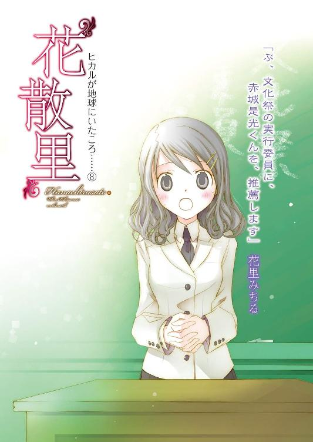

| "花散里" ヒカルが地球にいたころ......(8) (ファミ通文庫) | |
| 野村 美月 | |

本作品の全部または一部を無断で複製、転載、配信、送信したり、ホームページ上に転載することを禁止します。また、本作品の内容を無断で改変、改ざん等を行うことも禁止します。
本作品購入時にご承諾いただいた規約により、有償・無償にかかわらず本作品を第三者に譲渡することはできません。
本作品は本文縦組で制作されております。ごらんになるリーディングシステムにより、表示の差が認められることがあります。
あなたに冷たく接する努力も、あなたを見つめないようにする努力もして、あなたの言葉が聞こえないようにする努力もして――なのに、忘れられなかった。
けれど、あなたはどうだったのだろう。
気まぐれなあなたは、わたしを覚えていてくれたのだろうか。二人の心がふれあい、幸せに満ちたあの艶めかしくも清廉な時間の記憶を。わたしの手とあなたの手が重なり、足が絡み合い、切ない痛みをともなってひとつに溶けてゆくあの甘い絶望を。
ヒカル――。
あの嵐の夜。
荒れ狂う川の縁で。
わたしを裏切り拒絶したあの瞬間も、あなたはわたしの姿を、最後まで胸に抱きしめてくれていたのだろうか。
あなたの最愛は、まだわたしだったのだろうか。
きっとそれでも、わたしはあなたを、許せなかっただろう。
「ソロモン王のハーレムには、七百人のお妃と三百人の側室がいたのを知ってる？ 聖書には、ソロモン王とその花嫁の相聞歌がおさめられていて、甘く奔放に、互いの魅力を謳い上げているんだ」
九月も終わりに近づいた、日曜の昼下がり。
縁側で苦り切った顔で胡座をかき、頰杖をついている是光のかたわらで、古代ヘブライ風のきらびやかな衣装に身を包んだヒカルが、宙にふよふよ浮きながら、ふくよかな甘い声で、ソロモンの愛の歌とやらを諳んじはじめる。
「そなたの唇は蜜の流れ、そなたの舌は乳と蜜をたらす。そなたの着物は、香の匂いを放つ。私の妹、私の花嫁、そなたは閉じた花園――そこには、サフラン、シネモネ、リバンのようなありとあらゆる香木が茂っている。また、そこにはミルラをはじめ、ありとあらゆるすぐれた香り草が、一面に生えている」
ヒカルは、自分の言葉にうっとりし、目を伏せたりしている。そうすると、長いまつげが澄んだ瞳にひっそりと影を落とし、天使的な美貌をより際だたせる。色素の薄いやわらかな髪が、降り注ぐ秋の清澄な光を浴びて、金色にきらめいて見える。
幽霊として是光に取り憑く前は、学園のハーレム皇子と呼ばれていた友人は、外見だけは文句のつけようのない美少年だった。
ただし性格は、のん気で軽はずみで、浮気性だ。生前も、その呼び名どおり、周りに複数の女の子をはべらせ、甘い笑みと言葉を振りまいていた。
今は、是光にしかヒカルの姿は見えず、声を聞くこともできない。なので暇をもてあましている友人の、あまったるい蘊蓄を、こうして聞かされることになる。
「ねぇ、麗しい花園から、爽やかな香りがいっせいにただよってくるようだろう。ぼくも千の香りに抱かれてみたいよ」
（そんなに香りがごちゃごちゃ入り混じったら、くせーんじゃねーか。あれだ、女子更衣室とか女性専用車両とか、想像しただけで鼻がいかれちまいそうだぜ）
ますます口をむすっと引き結ぶ。
（本当にこいつは、花と女の話になると、きらきらしやがるな。生きてたら、ソロモン王みたいに、余裕でハーレムに千人突破しそうだぜ）
ヒカルが明るく蘊蓄をたれているのは、よいことだ。暗い顔でじめっとされるより、ましだ。だがしかし、こうまで晴れやかだと、胸の奥がもやもやしてしまう。
（おまえ、ひらひらした格好して、千の香りとか言ってる場合なのかよ）
しかめっ面のまま、庭のほうへ目を向ければ、猫のこるりが、ほっそりした体を丸めて、ひなたぼっこをしている。涼しい風に、白い毛をそよそよ揺らし目を閉じており、気持ちよさそうだ。
庭には他に、同じ町内に住む長唄の先生の兵部さんちのシャム猫や、不動産会社社長の大監さんちの三毛猫や、居酒屋『右大将』で飼われている口の周りが黒いブチ猫や、他にも野良らしい猫が、ぽつぽついて、互いに牽制しあいながらこるりに近づこうとしている。
（最近......猫、増えたよな）
昨夜も庭で、みゃーみゃー鳴いていて、布団の中で「うるせー」と唸ってしまった。
（うちの庭で、猫の集会でもあんのか？）
鼻の頭に皺を寄せて考えていたら、紫織子が竹箒を振りかざして飛び出してきた。
「また、こるりに言い寄ってるー！ こらぁ！ こるりから離れなさい！ えい！」
小さな手に握りしめた竹箒を、ばしばし振り下ろして、猫を追い払う。ミルク色の頰が紅潮していて、ツインテールに結んだまっすぐな髪も、一緒にぴょんぴょん跳ねる。
「ああ、しーこ。レディは箒を振り回したらダメだよ。ぼくはきみに、そんな教育をした覚えはないよ」
ヒカルが嘆く。是光も縁側から注意した。
「おい、雀狩りの次は猫狩りか？ 動物虐待はよくねーぞ」
「虐待じゃないもん！」
紫織子が、ハァハァと可愛く肩で息をしながら振り返る。
「こるりが狙われてるから、あたしが守ってるのよ。こるりにはまだ、彼氏は早いんだから」
「って、あの猫、みんなこるり狙いかよ！」
目をむく是光の横で、ヒカルが目と頰をとろかし、
「こるりは雪みたいに真っ白で、品があるからね。瞳も瑠璃色で神秘的だし。モテて当然だよ。きっと猫のネットワークで、この家にとびきりキュートな美猫がいるって広まって、集まってきたんだよ」
（うさんくせー、そんなネットワークがあるのか）
こるりは、周囲の騒ぎなどまったく気にしていない様子で、優雅に身を起こし、ピンク色の舌で、ちろちろと毛繕いをしている。そんなこるりを、一匹だけ、木の後ろに隠れて残っていた居酒屋『右大将』のクロヒゲが、未練がましく見ているが、紫織子に、「しっしっ」と威嚇されて、悲しそうに去ってゆく。その姿にやや哀れをもよおし、
「つか、猫の年齢って人間と違うだろ。こるりはもうじゅうぶん大人なんじゃねーか」
と言ってみる。
少なくとも猫換算で、小学生の紫織子より年上なのは確かだろう。もしかしたら、是光よりお姉サマかもしれない。
ヒカルも、
「そうだね、そろそろお婿さんを見つけてあげないと、こるりが行き遅れちゃうかも」
と親のように心配しはじめる。
けど、紫織子は頰をふくらませ、小さなこぶしを作り、
「違うもん。こるりはまだ子供だもんっ。あたしが是光お兄ちゃんにオトナにしてもらうまで、こるりも清らかでいるんだから。こるりだけ先に大人になっちゃうなんて、ダメだもん」
と子供っぽい論理を展開する。
「おい、今、さらっと問題発言をしなかったか」
「し、知らないもん」
顔を赤くして横を向いてみせたのは、演技なのか本気で恥じらっているからなのか。
「こるりが行き遅れたら、是光お兄ちゃんのせいなんだからねっ」
「関係ねーだろ！」
「あるもん。是光お兄ちゃんがヘタレなせいで、こるりも彼氏ができなくてかわいそう」
「是光、いくらこるりのためでも、ぼくはあと八年は許可しないよ。ぎりぎり譲歩しても六年は耐えてもらわなきゃ」
（って、具体的な数字を言うな！ 前は二十年はダメだっつったくせに！）
すると紫織子が、たーっと駆けてきて、是光の膝に小さな手を置き、身を乗り出した。大きな瞳で是光を下から睨み上げ、真剣な口調で問う。
「まさか是光お兄ちゃんも、ハツジョーした猫に言い寄られてないよね？」
「おまえ、言葉を選べよ！ ヒカルががっかりするぞ」
「だって心配なんだもんっ。是光お兄ちゃん、顔は怖いけどバカみたいにお人好しで、か弱そうな女の子を見ると、俺が守ってやるぜって、突っ走っちゃうから」
「さすがしーこ、侮れないね。是光のことよくわかってる」
（黙れ！ タラシ幽霊）
「そ、それに、是光お兄ちゃん、モテないと思ってたら、モテるみたいだし......」
「はぁ？ なに言ってんだ？」
モテる？ 是光の人生では、これまで聞かなかった言葉だ。
が、紫織子はますます身を乗り出して、
「式部さんとか、あのすっっっごい美人の日舞の先輩とか、あのパワハラ上司っぽい会長さんとか、プールにも来てたスク水の鈍くさそうな級長さんとか、胸がぽいんぽいんの早口の報道部員さんとか」
「関係ねーって」
「ヒカルの婚約者だったお嬢様とか」
「うっ」
長い黒髪を華奢な肩から、さらさらとたらした、清楚で可憐な少女が脳裏に浮かび、是光は声をつまらせた。
（ば、バカっ、なに動揺してんだ）
手のひらが、じわりと熱を帯びる。そこに、やわらかな白い手が優しくふれてきたような気がして、さらに心臓がばくばくと荒れ狂いはじめる。
（お、思い出すな。あれは――）
隣にいるヒカルの視線が急に気になった。早く落ち着かなければ、ヒカルに変だと思われる。
「怪しい」
眉をキッと上げてつぶやいたのは、紫織子だった。
「なんで、いきなりつまるの？ ヒカルの婚約者と、なんかあったの？」
「ねーって！」
ほとんど是光の膝に乗る勢いで、ぐいぐい顔を近づけてくる紫織子に向かって、汗をかきながらわめく。
（そう、本当になんもねーって。わかってんだろーな、ヒカル！）
顔が熱い。ヒカルがいるほうを見ることができない。
急に膝が軽くなった。頰をぷっとふくらませた紫織子が是光から身を引き、「携帯出して、是光お兄ちゃん！」と手を差し出す。
「別におかしなメールとかねーよ」
「いいから、出してっ」
だだっ子モードに入っていて、引き下がりそうにないので、ポケットから携帯を抜きとり渡してやると、自分の携帯も引っ張り出して、なにやらいじくっていたが、
「はい、お守り」
と返してよこした。
見おろすと、待ち受け画像が、紫織子の水着写真になっている。しかも、夏休みにプールに行ったとき是光が買ってやった、フリルのミニスカートのセパレーツではなく、スク水だ！ それも、家の風呂場で撮影したらしく、空っぽの風呂桶に体育座りして、にっこり笑っている！ 子供らしい無垢な笑顔と、風呂桶にスク水というアンバランスさが、怪しすぎる。
「うわー、マニアックだなぁ」
横で、ヒカルが感嘆する声がした。
「しーこ、おま、この写真はなんだ！ まさかネットで、ロリコンおやじに売りさばくつもりだったんじゃねーだろうな」
紫織子は、是光が心配してくれたのが嬉しそうで、
「安心して。この写真は、是光お兄ちゃん専用だよ。お兄ちゃん、スク水大好きでしょう？ だから、お兄ちゃんのために撮影したの。ね、しーこのスク水が、一番可愛いでしょう？ 授業中もこれ見てしーこを思い出してね。女の人に誘惑されそうになったら、この待ち受けを魔よけのお札みたいにつきつけてね。そしたら、きっと逃げ出すよ」
「それは、半径二メートル内の女の子は、全員逃げるだろうねー」
「だ～～～～っ、また俺がロリコンヤンキー呼ばわりされるだろーが！ つか、俺はスク水大好きでもねぇ！」
「しーこには、せーへきを隠さなくてもいいんだよ、是光お兄ちゃん」
「だから小学生がせーへきとか口にすんな！」
「そうだよ、しーこ。レディは慎みを持たなくちゃ。そのほうが、男の子はぐっときちゃうよ」
（おまえも、爽やかにアドバイスしてんなっ！）
心の中で思いきり突っ込みつつ、紫織子のほうへぷかぷか浮かびながら身を乗り出しているヒカルが明るい顔をしているのに、ホッとした。
◇ ◇ ◇
そう、ヒカルは普段と変わらない。
いつものように能天気で、いつものように花と女の子が大好きで。
いつもと変わらず、笑っている。
なのに、ヒカルがほんの少し目を伏せたり、口をつぐんだりしたときに、ドキッとしてしまうのは、きっとヒカルに、あんなことを言われたせいだ。
――もし十年後、葵さんの隣にいるのがきみだったとしても、ぼくは空の向こうからきみたちを愛しているよ。
ひどく透明な、優しい、淋しい微笑みを浮かべて、そうつぶやいた。おだやかな瞳が、是光をまっすぐに見つめていた。
『バカ！ おまえ、なに勘ぐってんだ。俺が葵となんて、あるわけねーだろ。葵が俺と手を繋いでくれたのは、その......俺が家出した母親と会って、男のくせしてめそめそ泣いてたから、励まそうとしてくれただけだ！』
眉をつり上げ声を荒らげて反論する是光に、ヒカルはやっぱり澄んだ笑みを浮かべて、
『そうだね。ぼくが気を回しすぎなだけかもしれない。けど、いつぼくがこの地球から消えてもいいように、この先是光がどんな道を選んでも、ぼくはそれを祝福するってことを伝えておきたかったんだ』
遺言でも語るような、大人びた静かな口調で言われて、是光はムッとした顔のまま、言葉が出なくなってしまったのだった。
◇ ◇ ◇
（本当に......俺は葵をとろうとか、これっぽっちも思ってねーのに）
紫織子に携帯の待ち受け画面を強制的に変えられた、翌朝。
学園へ続く土手道を、登校途中の他の生徒達に交じって歩きながら、是光はまた同じことを、うだうだ考えていた。
（だいたい、俺と葵じゃ釣り合わねーだろ。俺はヤンキーキングなんて言われているはみ出しモンで、葵はお嬢様だぞ。葵も俺のこと、ヒカルの友達としか認識してねーよ）
隣でヒカルの晴れやかな声がした。
「見て、是光。河原にコスモスがいっぱい咲いているよ！ コスモスの花言葉は、乙女の真心っていうんだよ！ コスモスの群れが風にそっと揺らめいているのって、清らかな乙女たちが小さな声で、恋の話をしているように見えない？」
「朝っぱらから河原で群れてる女が見えたら、怖ぇよ」
ぼそりと答える。
（そういやこいつ。最近、心残りがどうこう言わねーな。もう心配な女はいねーってことなのか？）
〝最愛〟の藤乃のことも、空の妊娠騒動で、いつの間にかうやむやになっている。
彼女への気持ちに決着をつけるつもりは、もともとヒカルにはなかったのかもしれない。義理の母を愛してしまったという秘密を、是光に打ち明けることができて、それで気が済んでしまったのだろうか。
だとしたら、肉体を持たない幽霊のヒカルは、いつ成仏してもおかしくない。
だから、『ぼくがいつ地球から消えてもいいように、伝えておきたかった』などと言ったのだろうか。
ヒカルの中で変化が起きていて、それをヒカル自身が感じているのだろうか。
（女好きの幽霊に取り憑かれるなんて大迷惑で、とっとと成仏してくれって思ってたはずなのにな......）
隣を当たり前のようにただよって、楽しそうに花の話をしているヒカルがいなくなってしまったらと考えると、胸の一番深いところが冷たくなった。
（くそっ、女々しいぜ）
ぐだぐだ考え込むのは性に合わない。
胸にわいた霧を振り払うように、是光は頰をぐいっと引きしめ、進んでいった。
教室に入ると、自分の席で携帯をいじっていた帆夏が、ぴくっと肩を揺らした。
「よお」
是光がぶっきらぼうに挨拶をすると、
「......ん」
素っ気ない顔で曖昧な言葉をつぶやき、また携帯でメールを打ちはじめる。
綺麗に手入れした細い眉をきゅっと寄せ、唇を強く結び、なにか怒っているような、我慢しているような、固い表情で、指を動かしている。
（こいつも、ヘンなんだよな）
帆夏が是光に対して、つっけんどんだったり、不機嫌だったりすることは、以前からよくあったことだが、今回は腹を立てているというより、是光と視線をあわせるのを、怖がっているように見える。まだろくに言葉を交わしたこともない頃から、平気で是光に喧嘩を売ってきた帆夏が、今さら是光にびびることはないはずなのだが。
（式部が焼いたクッキーを、床にばらまいちまったこと、まだ気にしてんのかな......）
是光が謝ったとき、帆夏は、
『別に......気にしてないよ』
と、微笑んでいた。
けど、あの笑みも、帆夏らしくない淋しそうな笑みで、それに、帆夏が是光と視線を合わせないようになったのも、あのときからだ。
となると、やっぱり原因は......。
「クッキーのこと、根に持っているわけじゃないと思うよ」
耳の後ろから聞こえてきた声に、心臓が口から飛び出しそうになる。
振り向くと、ヒカルが意味深な表情を浮かべていた。
（こいつ、俺の気持ちを読んだのか？ つか、そんなに顔に出てるのか、俺。クッキーが原因じゃないなら、なにが原因なんだよ）
ムッとしながら目で問いかけると、
「女の子は、いろいろ大変なんだよ」
と、また意味深な、神妙な口調で答えた。
（わけわかんねーぞっ。その肝心な部分をぼかすとこ、すっげーむかつく）
かといって、教えてくださいと頼むのも癪で、そもそも頼んでも、はぐらかされるだけだろう。
（くそ、またもやもやしてきたぜ）
メールを打ち続ける帆夏の張りつめた横顔を見ながら、奥歯を嚙みしめていると、
「お、おおおおはよっ。赤城くん」
級長の花里みちるが、小動物のようなぱたぱたした動きで、是光の前までやってきた。
帆夏の肩が、また揺れる。
「お、おう」
是光が挨拶を返すと、みちるはそわそわぱたぱたと手や体を揺らして、
「あ、あのねっ、ここここのあと文化祭の実行委員を決めるホームルームがあって。そ、そそそれでね、赤城くん、文化祭、好き？」
「......いや」
しかめっ面で、即座に答える。
はみだし者の是光に、クラス参加の行事が楽しいはずがない。文化祭？ なんだ、それ？ 食えるのか？ そんなすさんだ気分だ。
「え！」
みちるはのけぞり、えらく困ったように、
「そ、そうなん......だ。で、でででも、平安学園の文化祭は、初等部と中等部と高等部の合同でやるから盛大で、出し物も豪華で本格的だから、き、きっと、赤城くんも楽しめると思う......よ。わ、わたしも、頑張るからっ。だから、赤城くんも頑張ろうね！」
真っ赤な顔で、幾度もつかえながらそう言って、是光が口を開く前に、わたわたと自分の席に戻ってしまった。
（なんの話をしに来たんだ、あいつ？）
首をひねる是光に、ヒカルがわけ知り顔で、
「ほら、文化祭って、カップルが誕生しやすいイベントだから」
（ああ、そういや中学のときも、二人でいちゃくら出し物を見て回ってるリア充どもがいたな。道ふさいでて邪魔だったから、後ろから蹴ってやろうかと思った）
どのみち自分には、文化祭もカップルも関係ない。適当な空き教室を見つけて、そこで閉会まで一人で時間を潰すのが、文化祭の正しい過ごし方だ。
（て――今年はヒカルと二人か。一日中、花の蘊蓄を聞かされるのかよ）
そのうっとうしさを想像したら、ちょっと成仏してほしくなった。
帆夏は、まだ全身をこわばらせて、メールを打っている。恋愛の達人のぱーぷる姫として、ブログの更新でもしているのだろうか。
やがて朝のホームルームがはじまった。みちるが教師の代わりに壇上に立ち、
「きょ、今日は、文化祭の実行委員を決めてもらいます」
と、どこか落ち着かない様子で司会をする。
「えっと、自薦でも他薦でもよいです。実行委員をやってみたい人。またはやってもらいたい人がいたら、手をあげてください」
みんな面倒くさそうに黙っている。実行委員になんかなったら雑用ばかりで、カップルで出し物を回ることも出来ないなどと、考えているのだろう。
「えっと、えーと......」
みちるが、何度かもごもごとつぶやいたあと、
「い、意見がないなら、わわわたしから推薦します」
「あー、いんじゃない」
「級長が決めてー」
「さんせぇ」
と、今度は声が上がるが、やはりどの声も、やる気がないというか、面倒くさそうだ。
みちるのことが、少し気の毒になったとき。
みちるが、段ボール箱に入れられ、雨の日の路上に放置された子犬のような目を、是光のほうへ向けた。
「そ、それじゃあ......ぶ、文化祭の実行委員に、赤城是光くんを、推薦します」
◇ ◇ ◇
「どういうつもりだ！ 文化祭とか全然興味ねーし、好きじゃねーって言ったろ！」
「だだから、赤城くんに文化祭を好きになってもらいたくて。級長としての責務でっ」
一時間目の休み時間。
是光の怒りを恐れて逃げ回っていたみちるを、廊下の隅でようやくつかまえ問いつめると、みちるは、びくびくしながら訴えた。
「そ、そそそれに、赤城くん、み、みんなの前で就任の挨拶もしたし」
「そうだねぇ。教壇で『よろしく頼むぜ』って言ったよねぇ、是光」
ヒカルが、にまにましながら言う。
（こいつ～～～～、俺が文化祭の実行委員なんてものになって、楽しんでやがるのか）
確かに挨拶はした。しかし、あれは、いきなりみちるに推薦されて、頭の中が真っ白になっていたら、いつの間にか是光に決定していて、壇上で一言という流れになっていただけで......。上擦りながら、
『よ、よろしく。頼む......ぜ』
と、つぶやいたあと、教室中がシ――――ンと静まりかえり、拍手一つ起こらなかったことだけは、よく覚えている。はっきり言って、いたたまれなかった。最悪だ。
「だ、だだだ大丈夫！ 赤城くんならヤンキーパワーで、乗り切れるよ！」
「俺はヤンキーじゃねぇ！」
「ごめんなさいっ！」
みちるが頭を抱える。
「つか、俺、班長すらやったことねぇし、文化祭も参加してねーようなもんだったし、どう考えても無理」
「そんな、赤城くん......！」
みちるがまた、捨てられた子犬の目になったとき。
「みちるに、なにしてんの」
硬い声がして振り返ると、携帯を片手に持った帆夏が、険しい表情で立っていた。
是光が文化祭のことを恨んで、みちるにヤキを入れようとしていると誤解されたのかもしれない。
「別に俺は――」
反論しようとすると、みちるが是光の前に飛び出してきた。
「ぶ、文化祭の！ 話をしてただけだよ......っ！ ほのちゃんが心配するようなことは、なにもないからっ」
みちるにしては、つっけんどんに言う。
帆夏が眉根を寄せ、目をすぼめる。
「そう......ならいいケド」
と、ぎこちなくつぶやいて、携帯のメールを打ちながら、去っていった。
それをみちるが、思いつめたような淋しそうな顔で見送っている。
（なんだ？ 式部と花里、いつもと違うっつーか......。喧嘩でもしてんのか？）
そういえば、最近二人が一緒にいる姿を見かけない。前は、みちるが『ほのちゃん、ほのちゃん』とあとをついてまわっていたのに。
「おまえ、式部と喧嘩でもしたのか？ いや、今、二人とも暗かったから」
みちるが気弱な目で、是光のほうを見る。
「俺でよければ力になるぞ」
もし本当に帆夏とみちるが仲違いしているのなら、放っておけない気がした。けど、みちるは迷うような表情を浮かべたが、哀しそうに目をそらした。
「......ううん、わたしとほのちゃんの、問題だから」
か細い声で、つぶやく。
「わたし、ずっとほのちゃんには、なにをやってもかなわないと思ってた。け......けど、なにもしないであきらめるの、いやで......」
意味がよくわからない。
顔をしかめたとき、いきなりみちるが、是光に向かって勢いよく頭を下げた。
「お、願いしますっ」
ゆるく巻いた髪が、小さな肩で、犬の尻尾のように頼りなく揺れる。
「文化祭の実行委員を、ひひひ引き受けてくださいっ。わ、わたしも、協力、するから」
「お、おい......」
何故、それを蒸し返すのかと困惑した。帆夏とみちるの仲が微妙なことと、文化祭の間にどんな関係があるのか？ そもそも是光は実行委員などガラではなく、クラスメイトたちからも、望まれていないというのに。
が、みちるは頭を下げたまま、動かない。唸る是光の肩に、ヒカルが神妙な顔で手を置いた（？）。
「引き受けるしかないね、是光」
「うっ......し、仕方ねーなっ」
そんなわけで、人生十六年と数ヶ月目にして、はじめてクラスを率いる立場になった是光だったが。
「おい、あ、明日のホームルームで、文化祭の出し物を決めるからな！ おおおまえら、最低一個は考えてこいよっ！」
放課後のホームルームで是光が告知する間、クラス中が凍りついており、特に是光の視線が集中する、前から三列目中央のクラスメイト三人は、是光と目をあわせないように必死にうつむいていた。
また是光も緊張のため、普段より頰がひきつり眉も目もつり上がりっぱなしで、声もドスがききまくり、気の弱いクラスメイトは意識を飛ばしているようだった。
「頑張れ、是光」
横で、長ランにハチマキのヒカルがエールを送っているのが、余計に萎える。
（こんなんで、うちのクラスは、まともに文化祭に参加できんのかよ）
中学の文化祭を思い返しても、ろくな記憶が浮かんでこない。
ヤンキーキングと恐れられていた是光に、劇のキャストや屋台の売り子といった役割が回ってくるはずはなく、放課後の作業も、是光にだけ参加を促す知らせが来ず、文化祭の当日も一人でぽつねんとしており、適当に出し物を見ながら時間をつぶそうと、お化け屋敷に入ったら、お化けが悲鳴を上げて逃げ出し、ブラスバンド部の演奏を聴きに体育館へゆけば、是光の周りだけぽっかり空間ができるという風だった。
あげくに、他校のヤンキーが集団で乗り込んできたのに出くわし、一戦交えるはめになり、どうにか撃退したものの、ヤンキーキングが大暴れし、体育館裏が血で染まったと噂が流れ、是光の悪名はいっそう轟いたのだった。
（うわぁぁぁ、思い出したくねー）
文化祭にまつわる黒歴史の数々に、胃を抉られるような気持ちを味わい、ますます顔つきがすさんでゆく是光に、クラスメイトたちは、いまにも念仏を唱えだしそうだった。
そうして。
「......」
帆夏は、ずっと机の下で持った携帯で、メールを打ち続けていた。
ようやくホームルームが終わり、是光がぐったりして日舞研究会へ顔を出すと、
「赤城くん、文化祭の実行委員になったんですって？」
部長の月夜子が、華やかな笑顔で言った。
紅い髪を首の横にひとつにまとめ、薄水色の着物をあでやかに着こなした、枝垂れ桜の精のような姿で、艶やかに色づいた官能的な唇をほころばせ、
「きっと刺激的な文化祭になるんでしょうね。わたしも今から留年して、赤城くんのクラスメイトになりたいくらいよ」
などと、色っぽく目を細める。
仏頂面の是光や、そんな是光を気にして、びくびくしているみちる。そっぽを向いている帆夏の様子から、状況はわかっているだろうに、楽しそうに言う。
「ああ、本当に残念。赤城くんと『桃太郎』とか『さるかに合戦』で共演したかったわ」
「なんで『桃太郎』に『さるかに合戦』なんだよ！」
是光が突っ込む。ヒカルも、
「『桃太郎』だったら是光が鬼で、月夜子は――鬼の女大将とか？ 『さるかに合戦』なら、是光は――うぅぅん、あえて猿？ そしたら月夜子は......」
と真剣に考えている。
帆夏とみちるもキャストを想像しているのか、微妙な表情を浮かべる。
月夜子は、ふふ、といたずらっぽい笑みを漏らし、
「だから、代わりに、日舞研も文化祭に参加しようと思うの」
「なに！」
「月夜子先輩が踊るんですか？ 『桃太郎』で？」
「わわわわたし、まだ舞台に立つには、経験がっ。いくら月夜子先輩のバックダンサーでも」
月夜子が朗らかに笑う。
「そうね、お稽古をして実力がついたら、来年はステージをとりましょうか。でも、今年は、お店を出してみない？」
「お店、ですか？」
「ほへ、どういったジャンルの？」
（たこ焼きとか、かき氷とかか？）
是光が文化祭の屋台の定番を思い浮かべると、
「それは、これから決めるの。みんなは、どれがいいと思う？ どれも、着てみたくて迷っちゃって」
月夜子が画像をコピーしたらしい用紙を、扇を扱うときと同様の香り立つような美しい所作で、畳の上に広げた。
それを見おろし、
「げ」
「はわっ」
「つ、月夜子先輩！」
と、それぞれに叫ぶ。
ヒカルも「うわー」と、目を丸くして、のぞき込んでいる。
用紙に印刷されていたのは、スリットの入ったチャイナ服や、ふりふりのメイド服や、巫女装束、ナース、甲冑といったコスプレ衣装だった。なんと十二単まである！
月夜子が、うきうきしている顔で語り出す。
「わたしも、日本の文化祭ってはじめてなのよ。ずっと海外の学校に通っていたし、去年はヒカルと部室にこもりきりで、なにも見られなかったし。もちろん、それはそれで、素敵な思い出だけど、今年はヒカルもいないし」
（文化祭の間中、二人きりで部室にこもってなにしてたんだよ！）
宙をふよふよ浮いているヒカルを睨んでやる。
「きっと月夜子は、ぼくを失った哀しみを埋めるため、文化祭への参加を決めたんだよ。今も、涙を隠して明るく振る舞っているんだよ」
（いや、どう見ても、ノリノリだろ！）
「やっぱりチャイナかしら。式部さん、足が細くて長いから似合いそうよね。でもでも、巫女装束はぜひ一度トライしてみたかったし、こっちのナースさんの服も可愛いの。ほら、ミニスカートバージョンと、アンティークなワンピースバージョンがあるのよ。あ、メイド服も、憧れよね」
頰を生き生きと輝かせ、楽しそうに語る月夜子に、普段は月夜子を崇拝している帆夏とみちるも、少しばかり引いている。ヒカルだけは月夜子と一緒になって、
「このナース服、月夜子が着たらものすごく色っぽくて、くらくらしちゃうよ。でも、こっちのチャイナ服も月夜子なら、ゴージャスに着こなしちゃうだろうし、巫女さんの衣装を着た月夜子や式部さんたちも、見てみたいなー。あー。こんなにあったら、どれがいいのか迷っちゃうよ」
と興奮している。そうしながら自分も、執事の格好をしてみたり、神主の衣装に早変わりしてみたり、チャイナ服で決めてみたりと、忙しくお召し替えをする。
そんなヒカルを是光は冷たい目で眺めながら、
（センパイがコスプレに興味津々なのは、こいつの影響か......）
と納得していた。
「ねぇ、赤城くんはどれがいい？」
「是光は、どれが好き？」
月夜子とヒカルが、そっくり同じ晴れやかな表情で、是光のほうを見る。
みちるがぴくっと肩を揺らし、帆夏は視線をそらしたまま、唇をぎゅっと引き結んだ。
「どれって......」
と、是光が困惑していると、月夜子がさらに、
「赤城くんが決めてくれる？」
なんだと！
「あああ赤城くんが着てほしいって言うなら......わたしも勇気を出して、未知の扉を開ける気がする......っ！」
「......っ」
「ほら、是光、みんな期待してるんだから、選んであげなきゃ」
ヒカルが爽やかに言う。
月夜子とみちるとヒカルに見つめられ、さらに帆夏も聞き耳を立てているようで、
「くうぅぅ」
どれを選んでも俺が変態みたいじゃねーか、と是光が唸ったとき。
頭上のスピーカーから、校内放送のお知らせ音が流れ、続いてひんやりした厳しい声が響き渡った。
『赤城是光くん、いますぐ生徒会室まで来てちょうだい』
「朝ちゃん？」
「って、斎賀？」
いきなり校内放送で呼びつけるなんて、なにがあった！
「悪ぃ、ちょっと行ってくる」
「あっ、赤城くん」
「職権乱用よ、朝衣さん」
後ろで月夜子たちの声がする。正直、助かった。
（ナイスタイミングだぜ。今だけは感謝するぜ、朝ちゃん！）
「是光、そんな嬉しそうな顔で......」
廊下を早足で進み、階段を降り、あっという間に生徒会室へ辿り着く。
「おい、来たぞ」
「早かったわね」
部屋の中には、いつものように朝衣一人きりだった。生徒会室というより、生徒会長室とプレートを差し替えたほうがいいのではないかと思ってしまう。
「おまえが、いますぐ来いって言ったんだろ。なんだ？ トラブルか？ 今ならなんでもしてやるぞ」
「なんでも......？」
「おう」
「......」
朝衣は眉根を寄せ厳しい表情で考え込んでいたが、
「結構よ。きみに助けてもらうほど、落ちぶれてはいないわ」
と答えた。
「可愛くねー。なら、俺になんの用だよ」
カチンとしながら尋ねると、朝衣はゆっくりと腕組みし、居丈高に言った。
「文化祭の実行委員と、日舞研の店と、特別警護班だとー！ 俺の体はひとつしかねーんだぞ。どうやって三つもこなせっていうんだ！」
翌日の休み時間。校内の廊下をすさんだ目つきで進みながら、是光はぼやいていた。
生徒会室での朝衣との会話を思い出し、さらにしかめっ面になる。
『特別警護班ってなんだ？』
『文化祭の日に、きみのようなガラの悪い不審者が校内に入り込んでいないかチェックしたり、きみのような凶暴な野良犬が騒ぎを起こした際、すみやかに排除したり、校内で迷っている来客がいたら、きみのような目つきの悪いヤンキーにカモられる前に、適切に誘導する係よ』
『なんで騒ぎを起こすのが、いつも俺なんだっ！ つか、俺にそれを頼むか！』
『そうした無法者の心理や弱点は、きみが一番よく理解していると想定した結果よ。毒をもって毒を制するということね。それにこれは「頼み」ではなく、決定事項の「通達」よ。きみに拒否権はないわ』
（～～～～っ、朝ちゃんめ。最近ちょっとしおらしくなったと思ったが、誤解だったぜ。クラスと部活、掛け持ちしてるから、無理だっつったのに）
『ならば日舞研は廃部にして、きみのクラスは今年は不参加にすればいいわ』
と本気の目で言われ、結局、引き受けさせられてしまった。
唸りっぱなしの是光を、ヒカルが明るく励ます。
「そう悩まないで。ぼくも、クリスマスイブにデートを七つ掛け持ちして、さすがに無理かなーって思ったけど、なんとかなるもんだよ」
「てめぇのタラシ行為と一緒にすんな！」
つい叫んでハッとする。廊下にいた生徒たちが、固まっている。
「ふ、フンッ」
と、照れ隠しに鼻を鳴らし、首を縮めた。
ヒカルはくすりとし、それから急にやわらかな優しい表情になり、
「けど、イブの前みたいに、わくわくしてるよ。文化祭って、ぼくもいい思い出がないから。劇でシンデレラ姫の王子様に選ばれて、誰がシンデレラになるかもめて、クラスの女の子が全員シンデレラになって、男子にハブられたり、フォークダンスで女子が割り込んできて大喧嘩になって、そのあと男子にハブられて、たこ焼き屋さんでぼくが注文したたこ焼きを誰がひっくり返すかで、女の子たちが言い合いをはじめて、男子に体育館の裏に呼び出されて、女子が『ヒカルの君になにするの』って押し寄せてきたり」
「またモテ自慢かよ。クラス中からハブられて、展示物にさわれもしなかった俺に比べりゃ、大したことねー」
「そんなことないよ、ぼくだってクラス中でハブられたことあるよ。男子だけでなく、女子からも。初等部の三年生のとき――」
ヒカルが淋しそうに微笑む。
こいつが、女にハブられることなんてあるのか！ と是光は驚いた。
一体なにをやらかしたんだと尋ねかけたとき。
「あ......」
吐息のようなつぶやきが、是光の耳を甘くかすった。
（葵！）
曲がり角から、絹糸のような長い黒髪をたらした、華奢な美少女が現れ、戸惑いの表情で立ち止まる。そのまま黒目がちの瞳で、おずおずと是光を見つめている。
是光と葵の距離は、ほんのわずかだった。
まさか背中を向けて逆方向へ逃げ出すわけにもいかず、是光がぎこちなく足を踏み出すと、葵も、そっと近づいてきた。
そうして、さっきよりもっと近い距離で、お互いの足を止める。
（くそっ、なんで、心臓がこんなにドキドキして）
「あ、う......元気だったか」
口にしたとたん、耳のあたりがカァッと熱くなる。
（なに言ってんだ、この前会ったばかりじゃねーか）
けど、そのときも葵の顔をまともに見ることができなくて、ヒカルが横でどんな表情を浮かべているのかも気になってたまらなくて、「どうも」とか「世話になったな」とか、そんなことをつぶやいて、離れてしまった。
そもそも、是光の家出した母親が、小さな男の子をつれて、自宅の近くの道路で是光を待っていたところに、葵と二人で出くわしたのが、失敗だった。
母親に向かって泣きながら、必死に笑ってみせた是光の手を、葵はそっと握りしめてくれた。母親が深々と頭を下げて去ったあとも、なにも言わずに、ずっと――。
ヒカルの大事な女で、ヒカルの代わりに守ってやるはずだった葵に、逆に支えてもらったことが、顔から火を噴きそうに恥ずかしくて。
是光の手にふれていた指の、ほっそりと頼りない、なのに心が強く優しく満たされてゆくような感触が、繰り返し手のひらに――指の先に、よみがえってきて......。
あのとき、自分は普通ではなかった。
ヒカルがおかしなことを言うから、余計に意識してしまって、今もまた葵と向かい合っているというだけで、頭が熱くなって、へどもどしてしまう。
「あの」
緊張でいっぱいの顔で是光を見上げていた葵が、思い切ったように言った。けどすぐに小さな声で、
「元気です」
とささやき、赤くなった。
「そ、そっか......」
是光がぼそぼそと答えると、また思い切ったように、
「赤城くん、文化祭の実行委員になられたそうですね」
「えっ、ああ......よく知ってるな」
「クラスの人たちが、話していたので」
恥ずかしそうに答える。それから、黒い瞳にやわらかな光を浮かべた。
「きっとクラスメイトのみなさんも、赤城くんが頼りになるかただって、わかってくださったのですね」
（いや、そういうわけじゃ......ねーんだが）
葵があんまり嬉しそうな顔をしているので、否定できない。腹がむずむずしてきて、
「休み時間......終わっちまうから、これで」
「はい、えっと......また」
「お、おう」
また――会えますか？ またメールしても良いですか？ 葵がなんと続けようとしたのか、わからない。けど、ぎこちなくうなずいてみせる是光に、ホッとしたように、恥ずかしそうに微笑みかけ、小さく頭を下げて離れていった。
「是光」
ヒカルが隣で、真面目な話をするときの声で呼びかける。
「あーっ、くそっ、次ホームルームだぜ。文化祭のクラスの出し物、決めなきゃならねー。ちゃんとやれんのかな」
是光は、わざと声に出してぶっきらぼうに言う。
ヒカルが葵の話をするのを、避けるために。ヒカルがあのときみたいに、おかしなことを言い出さないように。
「もう今はそのことで、頭がいっぱいだぜ。他のこと考える余裕なんか全然ねーって」
ヒカルのほうを見ないようにしながら、歩き続けた。
（実際、余裕ねーし、文化祭のことで、いっぱいいっぱいだし）
心の中で言い訳しながら教室に戻ると、帆夏と目が合った。とたんに、すっと視線をはずされる。
「......」
それだけではなく、休み時間を満喫していたクラスメイトたちにも緊張が走り、みんな是光から顔をそむけ、口をつぐんでしまう。
まるで是光が登校しはじめた五月の頃に、時間が戻ったかのようだ。
最近は、教室に毛並みの違う野良犬がいることに慣れはじめ、過剰な反応をすることもなくなっていたクラスメイトたちが、えらく過敏になっている。是光が椅子を引く音にも身を縮め、予鈴が鳴る前から、そそくさと席に着きはじめる。
みちる一人が、心配そうに是光を見ている。
（マジに、こんなんで実行委員なんてやれんのか）
ますます先行きが不安になり、腋の下に冷たい汗がにじんだとき。
「ん？ なんだこれ」
机の中に、見覚えのない茶封筒があることに気づいた。ノートくらいの大きさで、中に文字を印刷した紙が何枚か入っている。
封筒に『赤城是光様』と宛名がある。裏を見ると、差出人名の代わりに、小さく絵が描いてあった。
「鳥......だね？」
横からのぞきこんでいたヒカルがつぶやく。
そう、鳥の絵だ。小学生でも描けそうな単純な線で描かれているが、間違いない。
（って、なんで、鳥？）
果たし状や怪文書の類を下駄箱に投函されたことがあるが、その手の嫌がらせか？
中の紙を引っ張り出して、睨みつける。
『一年一組 着物喫茶
一年二組 ミュージカル劇・ヒカルの君と千本の薔薇
一年三組 花の展覧会
一年四組 私たちのヒカルの君展』
（なんだ？ この『ヒカルの君と千本の薔薇』とか『私たちのヒカルの君展』とか）
いきなり目が点になった。
「是光、これ他のクラスの出し物のリストみたいだよ。全部調べてある。うわっ、部の出し物まで」
ヒカルが興奮して言う。
「これ、すごい資料だよ。これがあればホームルームも、いけそうじゃない？」
「あ、ああ......」
是光はぼーっとした声でつぶやいた。どうやら嫌がらせではなく、親切な人間が入れてくれたらしい。
（けど、一体、どいつが......？）
視線を感じて隣の席を見ると、帆夏と目が合った。
帆夏は、ふいをつかれたようにうろたえ、すぐに唇を尖らせて、横を向いた。
勝ち気な頰が、ほんのり赤い。
（ひょっとして、式部が？）
教師がやってきて、ホームルームがはじまった。
是光は紙の束を持って教壇に上がる。みちるも是光の隣に、緊張ぎみに並んだ。目で、『大丈夫だよ』と訴えている。反対隣ではヒカルが浮いていて、「是光ならやれるよ」と、昨日と同じように長ランにハチマキの応援団の衣装で、励ました。
（まぁ、チアリーダーのカッコされるよかマシか）
と、妙に冷静に考えたりした。
「今日は、昨日言ったとおり、文化祭の出し物を決めるぞ。まず他のクラスの出し物を読み上げるから、それを参考にして、アイデアを出してくれ」
体は緊張でがちがちに硬くなっていたが、声は昨日よりスムーズに出てきて、嚙むことも、唸ることも、なかった。
みんなに聞いてもらえるように、ゆっくりリストを読み上げてゆくと、張りつめていた空気が、ほんの少しだけ変わったようだった。
ヤンキーのくせに真面目に下調べをしてきたのだと、思ってもらえたのかもしれない。是光を見る目に、微妙な変化が現れる。
帆夏は机の下で持った携帯をじっと見おろしているが、その指が止まっているように見えた。
「――以上だ。気づいたと思うが、〝ヒカルの君〟関連が多い。そのブームに乗っかるのも有りだが」
「ぼくの年代記とかどう？ 赤ん坊の頃から撮りためた写真を提供するよ。大盛況間違いなしだよ」
ヒカルが恥ずかしげもなく言う。
「俺は、別の路線で行くのがいいんじゃねーかと思う。これだけあると内容がかぶる可能性も高いしな」
「がっかりだよ、是光」
応援団姿のヒカルが肩を落とすが、是光は無視した。
みちるが、おずおずと、
「でも、お化け屋敷とか、喫茶店とかも、定番だよぉ」
「そこはちょっと工夫してやりゃいいんじゃねーか。とにかく、意見を出しあおうぜ」
教室の中を、ぎろりと見渡す。
室内に緊張が走り、クラスメイトたちが視線を落とす。
きっと、手をあげるやつはいないだろう。それなら――。
「おい、出席番号十番！」
「わっ！」
前三列目中央のアリーナ席の男子が、ぎょっとしたように立ち上がる。
「おまえは、なにやりてー？」
「えっとその、だ、団子......っ」
「団子屋だな。書いとけ、花里」
「は、はい」
「出席番号二十三番！ おまえは」
「ひっ、あの、かかかかき氷っ」
「よし、次！ 出席番号十五番！」
「きゃ――」
是光がドスのきいた声で出席番号を口にするたび、教室のあちこちで押し殺した悲鳴が上がる。そちらを睨むと、一刻も早くその視線から逃れたいというように、「お化け屋敷っ」「執事喫茶ぁっ」と、叫ぶのだった。
「ま、ままま待って、ちょっと、今、書いてるから。えっと、えーと」
板書しているみちるが、手が追いつかずにおたおたする。
「浴衣喫茶だ」
是光がチョークをとって、黒板にかつかつと字を書く。
みちるが口を大きく開けて見上げる。クラスメイトたちも、黒板に書かれた是光の字が異様に上手いのに、ビビったように目をむいた。
ヒカルがにっこりする。
「って、これだけありゃじゅうぶんだな。じゃあ、決をとるぞ」
黒板をバン！ と叩き、呼びかける。
クラスの出し物が『怪奇！ 怨霊の館』に決まったのは、ホームルーム終了五分前だった。
「赤城くん、すごい！ てきぱきしててカッコよかったぁっ！ やっぱり赤城くんは、デキるヤンキーだったんだね！ 才能を隠していたんだね～！」
「......ヤンキーは、変わんねーのかよ」
休み時間。どうにか第一段階をクリアしたとたん疲れがドッと出て、椅子に座り込んでいる是光の前で、みちるが、すごい、すごいとはしゃいでいる。
ヒカルも嬉しそうに、
「本当にカッコよかったよ、是光。有無を言わさず、次々出席番号であてていったとことか、冷酷非情な鬼軍曹って感じで痺れちゃったよ。それと、きみが黒板に『浴衣喫茶』って書いたとき、みんなきみの字を見て、目を丸くして感嘆してたよ。よかったね『浴衣喫茶』って画数が多くてカッコいい字で！ これが『メイドさんのおうち』だったら、あそこまでの効果は得られなかったと思うよ。天運もきみに味方したね」
と、是光の背中を叩く――といってもヒカルの手は、是光の背中にめり込んでしまうのだが。
みちるが、頰を染めて是光を見上げる。
「それにしても、赤城くん、よそのクラスの出し物なんて、いつ調べたのー？」
「それは、俺じゃなくて」
隣の席の帆夏のほうへ、さりげなく視線を向ける。
帆夏はムスッとした顔で、メールを打っている。是光たちのやりとりが聞こえているだろうに、無視している様子だ。そんな帆夏をいやでも意識しながら、
「俺が用意したんじゃねーよ。親切なやつが机に入れてってくれたんだ」
と、是光はぶっきらぼうに言った。
「えっ、や、やだな、赤城くんてば、そんな、謙遜しちゃって」
是光に親切心を持つような奇特な人物がいるのかと、みちるは反応に困っている様子だったが、是光は口をへの字に結んだまま、帆夏を横目でちらちら見ていた。
（やっぱ......式部が入れてくれたのかな）
◇ ◇ ◇
鳥の絵が描かれた封筒は、その後も是光の机に投函され続けた。
文化祭開催までのタイムスケジュールの見本、生徒会に申請する書類一覧、お化けの資料、迷路の組み方。
買い出しのリストや、安売り店の情報まで、入っていたりする。
「赤城くんて、なんでも知ってるんだね。すごいね」
みちるが頰を染めて感心するたび、是光は、
「俺が、調べたんじゃねーよ」
と、ぶっきらぼうに否定しながら帆夏の様子をうかがったが、帆夏は頑なな表情でメールを打っており、みちるは是光が照れていると信じているようだった。
「えっと......うんっ、わたしはちゃんとわかってるよ」
と、はにかみながら、こくりとうなずかれて、弱った。
（ホントに、俺じゃねーんだけどな）
放課後。誰もいなくなった夕暮れの教室で、ヒカルに愚痴ると、
「今の花里さんは、是光が教室中の机をひっくり返して暴れても、『一人で机を片づけてくれるなんて、さすが赤城くん』って拍手しそうだね」
「やめてくれ。つか......、このメモの差出人、いいかげん名乗り出てもいいんじゃねーか。なんで、いっつも鳥の絵なんだ」
まるで焦らされている気がして、胸がもやもやして、落ち着かない。目を尖らせて文句を言う是光に、ヒカルがさらりと、
「最近は一言添えてあるじゃないか」
「っっ、わけわかんねー言葉がな」
是光の口がますますひん曲がる。
『夜の雨』
それが――鳥の絵の横に、最初に添えられた言葉だった。
『おい、夜の雨ってなんだ？ 今日も昨日も、晴れだぜ』
『うーん、ハンドルネームとか』
そんな会話をした放課後、鳥の絵の封筒が新たに届き、そこには、『友に逢える時』と書いてあった。
『こいつも、ハンドルか？』
『えっと、暗号かも。夜の雨の日に友に逢ったそのとき、失われた秘宝がもたらされる！ みたいな』
『ファンタジーかよ！ 真面目に考えろ！』
さらに次が『いまだ旅なる』、その次が『玉貫く月』――最近は『妹が見て』だった。
「どれも風流な言葉だけど、なにを伝えたいのかわかりにくいね」
ヒカルが、顎の下に手をあて考え込む。
「変わんねーのは、鳥の絵だけか」
「あっ、そうだ」
「なんだ！」
「是光、ひょっとして、きみ、怪我をした小鳥を助けたりしなかった？ きっとその小鳥が恩返しをしてるんだよ」
「あるか！」
是光が眉をつり上げて叫ぶと、ヒカルはいたずらっぽい目をして、くすくす笑った。
「冗談だよ。きっと、是光のことが大好きな女の子が、力を貸してくれているんだよ。たとえば、意地っ張りでお節介なヘリオトロープみたいな女の子とかね」
ウインクされて、顔面がカァッと熱くなる。
ヒカルも、帆夏だと思ってるのか？
（だよな......俺を助けてくれる奇特なやつなんて、式部くらいしかいねーし......式部なら、隣の席だから封筒も入れやすいだろうし......）
また、腹がむずむずするような感覚を味わっていると、窓からこぼれる夕暮れの光に赤く染まったヒカルが、懐かしそうな眼差しになり、ささやいた。
「そういえば、ぼくがクラスの女の子たちからもハブられて困っていたときも、白い花の君が助けてくれたっけ」
「白い花の君？」
また、甘ったるいことを言い出したと、鼻の頭に皺を寄せる是光に、ヒカルはふくよかな甘い声で、思い出を語りはじめた。
「初等部の校舎の裏庭に、キューピッドの像があってね、その像の前で愛を誓いあった恋人たちは、永遠に結ばれると言われているんだ。小学三年生の文化祭のとき、ぼくは五人の女の子の指に、花で作った指輪をはめてあげて、愛を誓ったんだよ」
「はぁ？ 今、五人っつったか？」
「うん」
「なんで、いっぺんに五人も誓ってんだよっ！ つか、文化祭の日にってことは、一日で五人かよ！」
「ほら、文化祭とか体育祭って、気持ちが盛り上がりやすいっていうか、告白したくなっちゃうっていうか、『キューピッドの像の前で、ヒカルくんにお話があるの、絶対来てね』って、女の子に誘われたら、行かないわけにいかないだろう」
（こいつは～～～～～～っ）
イブに七人とデートの掛け持ちをしたヒカルなら、一日で五人に告白されてもおかしくはないだろう。が、それを全て、オッケーするとは。
（ガキの頃からハーレム皇子かよ。いやなガキだなっ）
「ちょうどコスモスや撫子が綺麗に咲いていて。それをつんで、茎の部分を輪にして、指輪にして、女の子の手を優しくとって、はめてあげたんだ。『ぼくも、えりなちゃんを愛しているよ』ってささやきながら」
「......えりなちゃんが、一時間ごとに、ゆみちゃんや、みさきちゃんや、さやかちゃんに変わったわけだな」
「うん、そんな感じ」
「笑顔で認めるなー！」
わめくと、しょぼんとして、
「みんなすごく喜んでくれたんだよ。けど、ぼくが五人に指輪をあげたことが、バレちゃって......」
自分だけがヒカルに愛を誓ってもらったと幸せの絶頂にあった女の子たちは、激怒し、他の女の子たちも『ヒカルくん、さいてー』と言い、ヒカルは男子だけでなく、女子まで敵に回し、クラスの中で孤立したのだった。
「あれは本当に哀しい出来事だったよ。それまで女の子だけは、なにがあってもぼくの味方だと信じていたのに」
「そいつは自業自得だ」
是光は思いきり苦い顔で、断言した。
「けど、そんな辛い毎日の中で、ぼくを励ましてくれたり、盗まれたリコーダーや絵の具箱を、取り返してくれた人がいたんだ」
ヒカルの表情がまた生き生きとし、目がうっとりと細められる。
「助けてくれるやつ、いたのかよっ。奇特な野郎だなっ」
是光の嫌味も聞こえない様子で、唇に甘い笑みを浮かべる。
「その人はいつも、五つの花びらのある花の形に折り畳んだメモを、こっそり机や下駄箱に入れておいてくれたんだ。だからぼくも『白い花の君へ』って書いたメモを下駄箱に置いておいたんだよ。そうすると、いつの間にかなくなっていた。クラスの女の子たちが、ぼくを許してくれるまでの、たった三日間だけの儚い交流だったんだけど......」
「三日で許したのかよっ。女子、甘過ぎだろ」
「やっぱりヒカルくんを無視するなんて、耐えられないわって。そのあと、学級会議で、ヒカルくんはみんなのものだから、抜け駆けは禁止ってルールができて」
「あれ、マジだったのかよ」
突っ込む気力も失せて、ぐったりする是光の横で、ヒカルはますます甘い目で、
「――『ぼくの恋人になってくれる？』ってメモに書いて、白い花の君から『いいわ』って返事をもらったのが、最後だったなー......。それからあとは、五つの花びらの白い花のメモが、ぼくの下駄箱に入っていることは一度もなかった......」
天使のような唇を、ふっとゆるめて微笑む。甘さと憂いが入り混じった笑みは、女の子が見たら、たちまち心を奪われてしまうだろう。
が、是光は渋い顔で、
「おい、そいつを見つけて、俺に代わりに約束をはたせとか言わねーよな」
「言わないよ」
ヒカルが、今度は無邪気に笑う。
「会えない恋も、また素敵だし、思い出の中でこそ美しく香る花もあるし、無限に想像できる。あの子は、どんな女の子だったんだろう。雪の中から顔を出す清らかなスノードロップみたいな子かなぁとか、冬の冷気をまとって凜と咲く白椿みたいな子かなぁとか、初夏に真っ白な花びらの雨を降らせるアカシアみたいな子かなーとか」
まったくこいつは、どんなときも花フェチの女好きだと呆れつつ、是光は隣の席をそっと見た。
そこは、今は空っぽだったのだが......。携帯の画面を真剣な顔で睨みながら、指を動かしている帆夏の姿が浮かんでくるような気がして、胸が疼いた。
（くそっ、おまえが〝鳥〟なら、礼くらい言わせろ）
翌日。意を決して、帆夏に尋ねてみることにした。このままでは、もやもやするばかりで、非常に気持ちが悪い。
「式部」
休み時間になるなり席を立ち、帆夏に呼びかけたが、
「あっ、さゆきー」
帆夏のほうも素早く立ち上がり、是光にくるりと背を向け、別のクラスメイトのほうへ歩いていってしまう。
「今日の合コン、おっけーだから」
「やったぁ。帆夏が来るなら参加するって男の子、いっぱいいるんだよー」
「堀っちも誘わない？ 彼氏と別れたばっかりで、新彼募集中だし」
「いいねー」
「堀っちー、放課後さー」
帆夏の周りにたちまち女子の輪ができ、是光は野良犬のように唸るしかなかった。
放課後までずっとその調子で、ホームルームが終わると、帆夏は女子に囲まれ、にぎやかに教室から出て行った。
その様子を、是光はやっぱり、頰を引きつらせて見送ったのだった。
「っっ、鳥の正体は、本当に式部なのか？」
帆夏の態度を見ていると疑問に思えてきて、低い声で言うと、ヒカルも弱ったように、
「うーん......」
と唸った。
（もう、式部なんか知らねー）
「あああ赤城くん、なんか怒ってる？ わ、わたし、なにか失敗しちゃった？ ごめんなさいっ」
放課後。
教室で、みちると二人きりで一つの机に向かい合わせに座り、怨霊の館の作業行程についてチェックをしていると、突然みちるが青ざめて、肩をぷるぷる震わせた。
「怒ってねー、もともとこういう顔だから」
実際は、帆夏に無視されて苛ついていた。女子に囲まれ、はしゃぐ帆夏にも腹が立ったが、そんなことでへそを曲げている自分にも、胃がひりひりするほどむかついた。
（式部は俺の専用アドバイザーでも、お助け係でもねぇ。式部には式部のつきあいがあるんだ。なのに、俺が困ってるとき、式部が励ましてくれたり助けてくれたりするのが、当然みたくなってた）
それで、ちょっと素っ気なくされて、帆夏が友達と合コンへ行ってしまったからむかつくだなんて、図々しいにもほどがある。
（式部は美人でスタイルよくて面倒見がいいから、男にも女にも人気があるって、ヒカルが言ってたじゃねーか。今までが、特別だったんだ）
そう自分に言い聞かせながらも、やっぱり是光に背を向けて、楽しそうに笑っている姿を思い出すと、顔が自然と引きつり、歯ぎしりしてしまうのだった。
（器、小せぇな、俺）
みちるも、怯えさせてしまって申し訳ない。
「っっ、悪かった」
両手を机について、頭を下げる。
謝られるのも、謝るのも、ずっと苦手だった。けど、家出した母親へのわだかまりがとけ、謝ることに前ほど息苦しさや抵抗を感じなくなった。
謝るべきときには、謝る。それで、相手に気持ちが伝わるなら。
「......赤城くん」
みちるが目を丸くする。それから両手をぱたぱた振って、
「も、もういいの。赤城くんが怒ってないなら、えへっ、よかった。ホッとしちゃった」
と笑顔になった。
決して華やかではない。が、素朴であたたかな笑顔に、是光も胸が軽くなる。
「花里さんの笑顔、素敵だね」
ヒカルがささやく言葉に、こっそり（お、おう）と同意する。
みちるは一生懸命是光の気を引き立てようとしているようで、にこにこと、
「お化けのキャストも決まったし、材料の手配もすんだし、生徒会に申請書も提出したし、あとは迷路と衣装を作るだけだし、順調だねー。赤城くんのおかげだよー」
（順調、なのか？）
ふいに、そんな疑問がわいた。
（確かに、トラブルもねーし、スケジュール通り進んじゃいるが......文化祭の準備って、こんなもんか？ もっとこう大勢でわいわいと、にぎやかにやるもんじゃねーのか？）
教室の中にいるのは、幽霊のヒカルをのぞけば、是光とみちるの二人きりだ。ここまで細かい取り決めは、すべてみちると二人で決め、二人で準備してきた。
クラスメイトたちは、是光が勝手になんでも決めてくれて良いという雰囲気になっている。信頼して任されているのではなく、関わりたくないと避けられているのが、ありありで......。
「文化祭って、クラス参加の行事......だよな」
ぼそりとつぶやくと、みちるが「え？」と声をつまらせる。
「俺と花里しか、参加してなくねーか？ それって、おかしかねーか？」
真顔で問われて、みちるは困っているのだろう。もじもじしたあと、
「えっと、みんな忙しいし......級長してると、こーゆーのよくあるから、わたしはそんなにへんと、思わない、かな......。一人でするの、慣れてるし......」
小さな声で、うつむき加減に語る姿が、淋しそうに見えて、是光は胸がチクッとした。
（そういやこいつ、式部とまだ微妙だよな？ 式部はしょっちゅう女子に囲まれてるけど、こいつは一人でいるし。昼休みも俺と打ち合わせしながら弁当食ってて......）
そんな是光たちを、クラスメイトたちは遠巻きにしている。
（ひょっとして、俺と一緒にいるせいで、こいつまでハブられてんのか？ 友達の多い式部と違って、こいつも俺側っつーか、人間関係のバランスとるの苦手そうだし）
ありえる想像に、是光は頭がさっと冷えた。
「花里！ おまえ、毎日俺につきあうことねーんだぞ。おまえも他に用があったりするだろ。式部ともその......早く、な、仲直りしろよ」
帆夏に無視されている自分が言うべきことではないし、余計なお世話だろうが。
みちるは、ますます困っているような暗い表情になり、うつむいたあと、
「......赤城くん、鳥の絵の封筒って......まだ、来るの」
低い声で、ぽそりと尋ねた。
「え？ あ、ああ」
みちるは、鳥の話は是光の照れ隠しとして、聞き流していたのではなかったのか？ いきなり話を振られたことに戸惑う是光に、
「なんで、名乗らないんだろうね」
少しだけ泣きそうな顔で言う。
「黙ってるの......卑怯だよね」
もしかしたら、みちるも封筒の差出人を、帆夏だと思っているのだろうか。うつむいたまま眉根をきゅっと寄せて、唇を震わせている姿が痛々しくて、是光は無言になった。
ヒカルも、憂いのにじむ眼差しをみちるに向けている。
なにか言わなくてはと――是光がぎこちなく口を開いたとき、みちるが顔を上げて誤魔化すように笑った。
「あは......あはは、ごめんね、へんなこと言って。それとほのちゃんとのこと、心配してくれて、ありがとう。けど、喧嘩してるわけじゃないんだよー。そういうんじゃなくて......えっと、とにかく。へ、平気だからっ。それよりわたし、お菓子焼いてきたの！」
今思い出した、というように、手提げ鞄の中から、ぎくしゃくと水色の箱を取り出す。
「えっとえっと、それで――あ、赤城くん、そっちじゃなくて、こっちに座ってくれる？」
みちるは急に活動的になり、椅子を窓際まで引っ張ってゆき、そこに置いた。
「は？ ここじゃダメなのか？」
「こ、こっ、こっちのほうが、ぽかぽかしてて明るいから」
「女の子には、なにかとこだわりがあるものだよ、是光。特に男の子に手作りのお菓子を食べてもらうときにはね」
ヒカルが爽やかに言う。
（なんだそりゃ？）
窓辺の椅子で菓子を食うことに、どんなこだわりがあるのか、てんでわからなかったが、みちるが窓のところから、子犬のようにじっと見つめてくるので、仕方なくそちらへ歩いてゆき、椅子に腰かける。
「これでいいのか」
みちるが赤い顔のまま、こくこくうなずく。
（つか、この席、日射しが、びしばしあたって暑ぃぞ）
髪がじりじりと焼けるようで、かつ、まぶしい。けどみちるは、頰がこぼれ落ちそうなとろけきった顔で、
「そ、そのシャツのボタンも、上まできちんと留めたほうがいいと思うの」
要望に応えて、普段開けっ放しの第一ボタンを、もぞもぞと留める。
「背も、まっすぐ伸ばして......」
意識して、伸ばしてみる。
「それで」
「まだあんのかよっ」
声を荒らげると、半べそになり、
「は、話し方も、もっと優しく......」
「ぐ」
口をつぐむと、またうっとりした目になった。
「花里さん、夢見る乙女で可愛いねー。きっと花里さんの目には、今、是光が王子様に見えてるんだよ」
ヒカルがくすくす笑う。
「ほら、是光。背中がまた丸まってる。王子様なんだから、ぴんと伸ばしてあげなきゃ。ああ、足組んじゃダメだよ。膝もちゃんとそろえて」
（誰が王子様だっ）
眉がつり上がりそうになるのを、ぐっとこらえる。
みちるの表情も明るくなったし、文化祭のことで迷惑もかけている。今くらい、みちるの〝こだわり〟とやらにつきあってやっても、いいんじゃないか。
（しかし、まぶしい、暑い。喉もしめつけすぎて、苦しいぜ）
みちるは、ほんわりした顔で是光を見つめると、水色の箱の蓋を開けて、是光のほうへ差し出した。
「ど、どーぞ、赤城くん」
中はパステルカラーのマカロンが、綺麗に並んでいる。
甘いものが苦手な是光は躊躇したが、みちるは期待に満ちた目をしている。かたわらではヒカルが、「頑張って、王子様」と励ましており、
「お、おう」
と手をのばした。
黄色のマカロンを、なるべく匂いをかがないよう呼吸を止めて口に入れる。歯にあたると、表面がぼろっと崩れ、舌にねっとりしたものがからみついてくる。
（うげ、甘......っ）
中からこぼれてくる液状の物体が、さらに甘く、脳天がキーンとした。
「どう、かな？」
「あ......う。甘い、な。外も、中も......」
みちるは褒め言葉と受け取ったらしい。頰が照れくさそうに輝く。
「蜂蜜のマカロンなの。生地にも蜂蜜を入れてあるんだよ」
「わー、美味しそう。ぼくも食べたいなー」
（クソ幽霊！ 口の中に、箱ごと突っ込んでやりたいぜ）
「赤城くん、たくさんあるから、どんどん食べてね」
（なんだと！）
ひとつだけで、じゅうぶんすぎるほどのダメージを受けたというのに、箱いっぱい分の甘いマカロンを完食することを想像し、是光はぐらっとした。
「俺、甘いもんは、ちょっとつまめばじゅうぶんで......」
遠回しに、甘い菓子は苦手だと伝えようとする。が、みちるに、
「えっ」
と眉を下げ、泣きそうな顔をされると、か弱い小動物を虐めている気分になり、
「くぅぅ、あと一個だけ」
とオレンジ色のやつを、口へ放り込む。
やっぱり甘い。歯が溶けそうだ。
「王子様だね、是光」
中世のびらびらした衣装をまとったヒカルが、頭上からからかってくるのにも、殺意がわく。さらにみちるが箱を差し出し、
「こっちのオレンジのは、アカシアの蜂蜜とホワイトチョコの組み合わせなの」
と、はにかむのに、ぞっとした。
みちるの手から箱ごと奪い、立ち上がる。
「すげーうまいから！ み、みんなにもわけてやろうぜ！ センパイに日舞研にも顔出せって言われてるし。こんなうまいもん、俺一人で食ったら、昇天しちまうぜ！」
◇ ◇ ◇
――赤城くんがそうしたいなら......と、少し淋しそうなみちるに、罪悪感を覚えながら日舞研究会の部室へ来てみると、驚いたことに葵がいた。
「こ、こんにちは。赤城くん」
ほんのり頰を染め、畳に綺麗に手をついて、頭を下げる。さらさらの黒髪が、肩から流れ落ち、華奢な体を包む。お嬢様なので、子供の頃から作法が身についているのだろう。月夜子の所作は艶やかで美しいが、葵のお辞儀はしとやかで可憐だった。
「文化祭のお店、葵さんも手伝ってくれることになったのよ」
「な――」
驚いて、声をつまらせる。ヒカルも目を丸くする。
「っておい！ センパイ！ 日舞研の出し物って、アレだろ――」
「ナースさんのジューススタンドよ。赤城くんが、衣装を選んでくれたんじゃない」
月夜子が、空気が華やぐような笑みを浮かべて言う。
「って、衣装をプリントした紙を裏返して、一枚引いただけじゃねーか！ 別にナースが特別好きなわけじゃねぇ！」
「そうねぇ、巫女服もメイド服もチャイナも全部大好きで、選べなかったのよね」
「ちげー！」
月夜子と是光のやりとりを、葵は頰を赤くして聞いている。
是光は、焦って葵のほうへ身を乗り出した。
「センパイが言ってることは、デマだからな！ 俺は、ナースフェチじゃねぇぞ」
「え、ええ」
葵がさらに頰を染め、もじもじする。
「つか、マジでいいのか？ 葵？ 当日、ナースの格好すんだぞ」
「は、はい。聞いています。月夜子さんに衣装の資料を見せていただきました。あれなら......な、なんとか......」
「アリなのかよ！」
「はい」
ヒカルは止めるかと思いきや、
「葵さんのナース、すっごく可愛いだろうな。白衣の天使だね」
などと頰をほころばせている。
そこへ、明るい声が響いた。
「お邪魔しまーす！ 報道部の近江ひいなでーす！」
ショートカットの、胸の大きな小柄な少女が、元気いっぱいに現れる。
「近江！ まさか、おまえもナースになるんじゃねーだろうな」
制服でさえ胸の大きさが際立っていて、太ももも、むちむちと肉感的なのに、この上ナース服なんか着たら、大変なことになる。
ひいなは、下からすくいあげるようにいたずらっぽく是光を見上げた。
「あれあれ？ ひょっとして、自分のナース服、期待しちゃってます？ 赤城氏？ 残念！ 今日は文化祭の事前特集号のための取材です。けど、赤城氏がリクエストしてくれるなら、お医者さんプレイもオッケーですよ」
「わー、是光。リクエストしようよ。近江さんのナースも、見てみたい！」
ヒカルが、わくわくしている顔でせがむ。
（おまえは、黙ってろ！）
「もちろん、チャイナでもプラグスーツでも、お望みのままです」
ひいなが、シャツの第二ボタンまではずした胸元をチラ見させながら、迫ってくる。
空の騒動のとき、ひいなが見せた聡明な表情とのギャップに、困惑してしまう。決して軽薄なだけではなく、中身はしっかりしたやつだと知ったが、それでも、人前であからさまに誘惑してくるのには、まいる。
「よせ」
ひいなを引き離すと、
「そうです。は......はしたないです」
畳にしとやかに正座していた葵が、ぽそりと言い、それからぱーっと赤くなり、肩をすぼめて、うつむく。
「おや、ヤキモチですか、葵の上」
「！」
葵がさらに赤くなる。月夜子がすかさず追い打ちをかける。
「そうね、葵さんはヤキモチやきだから。ヒカルのときも、可愛く頰をふくらませて、わたしを睨んでいたわね。本当に、ピュアで可愛くて、もっとヤキモチをやかせたくなっちゃったわ」
「わたし、そんな――ヤキモチなんて」
「いい加減にしろ！」
是光が声を荒らげると、月夜子はくすっと笑い、
「叱られちゃった。葵さんにこれ以上嫌われたら切ないから、自重するわ」
「自分も、取材に徹しまーす」
ひいなもけろりとした顔で言う。
「お客さんがいっぱい来るように、うんと宣伝してね」
「あ、なら、画像ください！ 月の宮のナース画像があれば、文化祭は長蛇の列間違いなしですよ」
「あら、最初から全部見せたら、楽しみがなくなっちゃうわ。そこは小出しにして、焦らして惹きつけないと」
「なるほど。ではナース服だけ掲載して、当日はコレを着た月の宮が、お出迎えしますという方向で」
「いいわね」
月夜子とひいなは波長が合うのか、楽しそうに盛り上がっている。
葵は、まだ恥ずかしそうに肩をすぼめている。そうしながら、是光のほうへ視線をそっと上げる。なのに目があうと、慌ててうつむく。
そんな仕草に、胸の鼓動が速まるのを感じながら、是光は低い声で訊いた。
「本当に、日舞研の出し物を手伝うのか」
「ご迷惑でしたか」
「いや、人手不足だって、センパイもぼやいてたし」
「赤城くんは......」
「え」
「いいえ。いいんです。わたしが......お手伝いしたいだけですから」
「そ、そっか」
ヒカルは是光と葵のやりとりを、静かに見つめている。それも落ち着かなくて、胸がひりひりする。
と、是光は、みちるの存在を忘れていたことに気づいて、振り返った。
（やべっ）
みちるは鞄をかかえたまま、ひっそりと畳にしゃがみ、目を伏せていた。
しょんぼりしていて淋しそうで、是光は胸がズキッとしてしまった。みんなが楽しそうに話しているとき、そこに入っていけずに、ぽつねんとしているやりきれなさを、是光もよく知っている。
（俺が無理矢理連れてきたのに、ほったらかしちまって悪かったぜ、すまん、花里）
急いで声を張り上げる。
「あー、花里が菓子を作ってきたんだ。マカロン、っての」
「自分、マカロン、大好きです」
「メルヘンの国のお花畑みたいよね、マカロンって。見せて、花里さん。あら、可愛い。上手ねー」
ひいなと月夜子が、みちるのマカロンを見て、歓声を上げる。
葵は、複雑そうな表情を浮かべたが、
「......可愛いです」
と、口元を小さくほころばせた。
是光には劇薬の、カラフルな甘いお菓子は、女の子たちには目と舌を楽しませてくれる魔法の食べ物であるらしい。黄色やピンクのマカロンをつまんで齧っては、
「美味しいわ、花里さん。これは蜂蜜かしら。すごく華やかな甘さね」
「はぅぅ、甘くて、幸せです～」
「......とても美味しいです。あの、このオレンジのホワイトチョコレート味のレシピを教えていただけますか」
みちるの周りが、とたんににぎわう。
みちるの表情も少しずつ明るくなってゆき「あ、あああの、レシピは」と、へどもどしながら答えていた。
「花里さんのマカロン、やっぱり美味しいんだね。是光があんまり壮絶な顔して飲み込むから、見た目は可愛いけど、中身は砂糖の塊がそのまま入ってるのかと思っちゃったよ。みんなに食べてもらってよかったね」
ヒカルがあたたかな表情で言う。
みちるが是光のほうを見て、嬉しそうにはにかんでみせたので、是光はホッとした。
マカロンの箱が、すっかり空になった頃、
「文化祭では、赤城氏の密着取材をしますね！」
と言ってひいなが去り、「たくさん食べちゃったから、お稽古をしてカロリーを消費してゆくわ」という月夜子を残して、是光たちも部室をあとにした。
「わわわわたし、こっちだから」
校門を出たところで、みちると別れる。
「おう、明日から、怨霊の館のセットを組み立てるからな」
「マカロン、ごちそうさまでした。それとレシピを教えてくださって、ありがとうございます」
葵がしとやかに頭を下げると、みちるは弱ったようにそわそわし、
「ど、どど、どういたしまして」
と恥ずかしそうに顔を赤らめ、何度も頭を下げながら、遠ざかっていった。
十月になり日が落ちるのが急に早くなった薄暗い道を、葵と並んでゆっくり歩く。
（くそ......二人きりになっちまった）
葵は夏休み前からバス通学をやめて、自宅の車で送り迎えしてもらっているはずだが、なにも言わずに、是光の隣を恥ずかしそうにしずしず歩いている。
ヒカルが優しい眼差しで、葵を見つめている。
「......」
（なんか話さねーと、気まずいよな......）
是光はぎこちなく口を開いた。
「今日は、その......驚いたぜ。葵、センパイのこと、すげー嫌ってただろ。なのに日舞研を手伝うだなんて」
葵が、おずおずと答える。
「今でも、わだかまりはあります......でも、月夜子さんが、ヒカルが惹かれて当然の魅力的なかただということは、理解できますし......わたしだけいつまでもこだわっているのは、子供っぽいですから」
肩を小さくすぼめ、うつむき、迷うように言葉を紡ぐ。
空の妊娠騒動のとき、ヒカルの子供のために、朗らかにベビーベッドやおむつの準備をしていた月夜子を、葵は尊敬していたようだった。あれはヒカルの子を孕んだ女性に対する嫉妬を抑えていたわけでも、哀しみに耐えていたわけでもなく、月夜子は純粋に、ヒカルの子供が生まれてくることが嬉しくて仕方がなかっただけなのだが。
そんな誤解はあるにせよ、葵が月夜子を敵視するのをやめてくれたのは、嬉しい。
その点は、きっとヒカルも安堵しているだろう。
「それに......ヒカルと一緒に文化祭を楽しむなんて、できませんでしたし......」
心臓に冷たいものが触れたみたいに、ドキッとした。
うつむいたままの葵の瞳に、影が落ちている。
「......ヒカルの周りには、月夜子さんのように華やかなかたたちが、たくさんいたので、わたし素直になれなくて......」
何故、今、こんなに頼りなげな表情で、ヒカルの話をはじめたのか。
葵もまた揺れているのだと感じて、そんな葵を見ているヒカルの眼差しが静かで切なげなのも気になって、鼓動が高まり、胸の深い部分が穿たれるような気がした。
暗く染まってゆく空と外灯の薄明かり。地面に伸びる葵と是光の影。ヒカルの影は映っていない。
けど、ここにいる。淋しい目で、葵の言葉を聞いている。
「月夜子さんがおっしゃったように......わたし、子供っぽくヤキモチをやいていたんです......そのせいで、ヒカルにわたしの本当の気持ちを、伝えることができませんでした。だから、わたし......変わりたい。今年は......楽しい文化祭になればよいと......思って」
葵は、ますます泣きそうな顔になったあと、
「すみません、ここまででよいです」
と言って、振り返った。
黒塗りの高級車が、静かに近づいてきて、葵の横で止まる。きっと、是光たちの後ろに、ずっといたのだろう。
運転手がドアを開ける。
「さよなら、赤城くん」
儚い声でささやいて、長い髪を静かに揺らして、葵がドアの向こうに消える。
やがて葵を乗せた車は、暗い路地の向こうへ去っていった。
是光も、ヒカルも、口を閉じたまま見送っていた。
胸をひっそりとしめつけるような沈黙が続いたあと、ヒカルが憂いのにじむ顔で、ぽつぽつと話しはじめた。
「......文化祭で、葵さんは、ぼくのこと睨んでいるだけで、近づいてこなかったっけ......。初等部のときも......ぼくが生きていた最後の中等部の文化祭のときも......。ぼくが、『葵さん』って声をかけると、『ヒカルなんて嫌いです』って、真っ赤な顔で離れていっちゃって......。あのとき手をつかんで、葵さんが頰をふくらませても怒っても、一緒に校内を回ればよかったな」
淋しそうな目とはうらはらに、声はひどく優しかった。
それが余計に、是光には苦しくて。
ヒカルが、まっすぐに是光を見つめる。
「是光ならきっと、葵さんを怒らせたりしないよね......」
（なに、言ってんだ）
是光は、返事ができなかった。
「もし是光が、葵さんのことを本気で想ってくれるなら、ぼくのことは気にしなくていいんだよ」
――いつぼくがこの地球から消えてもいいように、この先是光がどんな道を選んでも、ぼくはそれを祝福するってことを伝えておきたかったんだ。
葵が是光の手を握ってくれた夜。透明な、優しい、淋しい微笑みを浮かべて、そうささやいたヒカル。あのときと同じ微笑みが、ヒカルの唇に、瞳に、頰に、淡く浮かぶ。
――十年後、葵さんの隣にいるのがきみだったとしても、ぼくは空の向こうからきみたちを愛しているよ。
肩がぶるっと震えた。
喉に痛いほどの熱が、込み上げる。
「いいわけあるかーっ！ どあほう！」
道の真ん中で、是光は叫んでいた。
「簡単に、そういうこと言うなっ！ 簡単に悟ってんじゃねー！ もっと、のたうち回って悩めよっ。いや、お、おまえなりに考えてんのかもしんねーけど――そんな、聖人君子みたいに割り切った上から目線で語っちまったら、おまえが葵のこと想ってねーって、誤解されるだろっっ！ だから葵に、『ヒカルなんて嫌いです』って言われんだ」
そうだ。ヒカルが葵を想っていることなんて、わかってる。子供の頃から大切にしてきた特別な女だって、わかってる。
たとえ最愛でなかったとしても、ヒカルが川に落ちたりせず生きていたら、最愛になっていたに違いない女だって――ヒカルの〝未来〟で〝希望〟だった女だって、わかってる！ 友達だから！
なのに、物わかりのいい大人のふりなんかするな。前みたいに、葵さんだけはダメだと、手前勝手なダダをこねてくれたほうが、よっぽどマシだ。
「俺の前でっっ！ カッコつけるなぁぁぁっ！」
頭が熱くて、喉が熱くて、体がはじけそうだった。
ヒカルは唇を結んだまま切なそうな目で、是光の言葉を聞いている。
地面に伸びる影は、今もひとつきりで。
夜の冷たい空気の中で、ヒカルの姿は幻のように儚く美しく、今にも消えてしまいそうで。
ヒカルが唇を動かした。
「是光、警察の人が、こっちを見ている」
「へ？」
振り返ると、少し離れた先で、自転車にまたがった警察官が、不審者を見る目を是光に向けている。
「げ」
是光は首をすくめ、歩き出した。ヒカルもあとから、ふよふよついてくる。
「おまえがバカ言うからだ。くそっ」
頰を赤らめ、こめかみを引きつらせて、唸る。ヒカルがまた、口をつぐむ。
ヒカルだってきっと、葵のことを完全に割り切っているわけではない。
わかっているから――余計にもどかしくて、胸が苦しかった。「で――、全員、サボりなわけだな」
翌日。放課後。
机や椅子を脇に寄せ、真ん中に作業スペースがぽっかり空いた教室で、是光は肩とこぶしを静かに震わせていた。
「あ、ああああ......赤城くんっ！ おおお怒らないで......っ、落ち着いてっ」
みちるが隣で、びくびくしながらなだめようとする。
今日から怨霊の館のセットを作りはじめるので、残れるやつは残るようにと、帰りのホームルームで通達したのに、放課後になると、一人また一人と息をひそめるように教室から去り、机を片づけてみたら、是光とみちるの二人きりだった。
「っっ、あいつらヤル気ねーのかよ！ ふざけてやがるぜ！」
帆夏に至っては、携帯で「あー、今、ホームルーム終わったトコ。うん、すぐいく。うんうん、へーき。全然オッケー」などと言いながら、誰より早く教室を出ていった。
横を通りすぎたとき、一瞬、是光と目が合ったが、きつい表情で視線をはずし、そのままいってしまった。是光も腕組みしたまま、むっつりしていた。
（なのに、鳥の封筒は、あるんだよなー。わかんねーっ！ ツンデレかよ！）
今日も体育の授業のあと、いつのまにか机に入っていた封筒と――鳥の絵の横に添えられた文字を思い浮かべ、ますます顔をしかめる。
『片恋しつつ』
目に入った瞬間、心臓を強くつかまれたような気分になった。
言葉には魂が宿るなんて、ヒカルが蘊蓄をたれていたことがある。だとしたら、手紙の差出人は、この短い言葉に、どんな想いを吹き込んだのだろう......。
（式部は、なにを考えてるんだ......。俺のこと、今はどう思っているんだ......）
また心臓を絞り上げられるような感じがして、是光は歯を食いしばり、封筒の文字のことや帆夏のことを、頭から払いのけた。
（今、問題なのは、式部のことじゃねー。作業の一日目から、俺と花里の二人こっきりってことだぜ。ヒカルもいるにはいるが、ホッチキス一個持てねーし、戦力にならねぇ）
今も宙にふよふよ浮きながら「困ったねー、やっぱりホームルームで告知したとき、きみが真剣すぎて目が血走ってて、頰とこめかみが引きつりまくってたのがいけなかったんじゃないかなぁ。みんな青ざめてたし」などと、空っぽの教室を眺め回している。
（っっ、この顔は、生まれつきだっ）
「ふふふ二人で頑張ろうっ、赤城くん！ 二人もいれば、怨霊の館の迷路くらい、ささっと作れちゃうよー」
「できるか！」
反射的にわめいたあと、反省する。
（花里にあたってどうすんだ）
肩と首を落として、その場にしゃがみこみ、軽い自己嫌悪に陥っていると、みちるが慌てたように、
「だ、大丈夫だよっ。わたし、パシリ気質で、初等部の頃から雑用は一通りこなしてきたから、大工仕事もお裁縫も得意だし、事務員のおじさんが腰痛のとき、代わりに蛍光灯もつけかえたんだよー。赤城くんが疲れちゃったんなら、わたし一人でも――」
と、健気に言う。横目で見上げると、子犬がべそをかいているみたいな顔をしていた。
――一人でするの、慣れてるし......。
昨日も、そんなことを言っていた。みんな忙しいし、級長をしてると、こーゆーのよくあるからと。
「違うだろ。クラスの出し物なんだから、俺も含めて、全員でやるのが筋だろ」
是光が顔を上げ、真面目に言うと、みちるがハッとする。
「おまえも、パシられてばっかいねーで、嫌なもんは嫌って、はっきり言えよ」
淋しそうな瞳が、床にしゃがむ是光を見おろしている。
「ま......級長として他人が嫌がる仕事も引き受けて、頑張ってんのは、立派だと思うけどよ」
そう伝えると、頰が少し染まった。是光は腰を上げ、伸びをした。
「さて、ぐだってても仕方ねーから、今日は二人でやろうぜ。えっと、段ボール貼り付けて、ペンキ塗ってと――」
「......赤城くんは、優しいね」
みちるが口元を小さくほころばせて、そんなことを言ったので、是光はぎょっとし、顔がじわじわと熱くなってしまった。
「って、よせよ」
「うんっ、是光は優しいよねー、電車でお年寄りが乗ってくると、必ず席を譲ろうとするし。普通に声をかけると怖がって逃げられちゃうから、わざと立ち上がって、別の車両に行くんだよね」
と、ヒカルまで口を出してきて、余計に照れてしまう。
「赤城くん、わたし、今日は蜂蜜ジャムを挟んだワッフルを持ってきたの。それ食べて、頑張ろう」
是光の背筋を、戦慄が走った。
（また、あの激甘の手作り菓子を食わされるのか！）
ひょっとして、この先も二人きりの作業が続いたら、そのたび、あの歯が溶けそうなモノを口にしなければならないのか？
「くそーっ、明日は、サボってるやつ全員、首に縄つけてでも引っ張ってきてやるぜ」
◇ ◇ ◇
翌日。是光はクラスメイトの一人一人に決死の形相で、声をかけて回った。
「おい！ 放課後は、セットを作るからな」
「ひぃー」
「サボったら、てめーに怨霊が襲いかかるぜ！」
「か、勘弁してください」
「四の五の言わずに、放課後残りやがれ！」
「うわぁぁぁ」
休み時間のたびに、教室のいたるところで悲鳴が上がり、クラスメイトたちの間を恐怖が駆けめぐった。
「逆効果じゃないかい、是光？ もっと優しく誘ったほうが」
ヒカルが微妙に引きつった顔で言う。
「くそぉっ、なら、にっこり笑顔で呼びかけてみるぜ」
そうだ。あんなに確執のあった母親にも、笑ってみせることができたのだから、クラスメイトにも楽勝だ。
口の端と頰を引っ張り上げ、好感度抜群の、にっこり笑顔で、
「死んでも、来いよ」
「！」
「あれ、こいつ、固まったまま気絶して......おい、しっかりしろ、おい！」
「あー、是光。今のは笑顔ってより、〝武器〟って感じだったよ。それも〝最終兵器〟っていうか」
ヒカルは額に手をあてている。
「ヤンキー怖ぇ～～～～」
「あれが、『怨霊より恐ろしい』と噂の、死の笑みか！」
「あいつに笑いかけられたやつは、魂を抜かれるって言うぜ」
「わ、わたし、トイレ！」
「わたしも！」
クラスメイトたちが先を争うように、教室から逃走する。
昼休み――教室の中に残っていたのは、是光とみちると帆夏の三人だけで、帆夏は、むっつりした顔で携帯をいじっている。
「......」
今日はまだ、鳥の絵の封筒は、是光の机に入っていない。
（式部に、手伝ってくれって、声を......かけてみようか）
教室に残っているのは、是光のほうから『頼む』と頭を下げるのを、待っているからかもしれない......。
「しき――」
是光がためらいながら重い口を開いたとき、
「......」
帆夏がすっと立ち上がり、教室から出て行ってしまった。
「行っちゃったね......式部さんも」
ヒカルが残念そうにつぶやく。
「――っっ」
是光は机の上でこぶしを握り、奥歯を嚙みしめた。
（式部なんてアテにしてねぇぜ。最初からノーカウントだ）
強がる是光を、みちるが自分の席から、眉を少し下げ心配そうに見つめていた。
今日も蜂蜜責めかと、覚悟して臨んだ放課後。予想通り、教室には是光とみちるの二人きりだった。
（なんでうまくいかねーのかな。こっちはめいっぱい真剣に頼んで回ったのに......。やっぱ俺がヤンキーっぽいからか）
むなしい気持ちになりながら、みちるまで暗い顔をしているのを見て、
「明日もういっぺん、クラスの連中に声かけてみるぜ」
どうってことないふりをして言うと、
「きっと......明日も、同じだよ」
みちるが目を伏せて、つぶやいた。
「そんなことしたら、赤城くんが、また......辛くなっちゃう、よ......。一生懸命にお願いして、無視されたり、拒絶されたりするの、哀しいし......惨めなの、わたし、わかるから......」
眉がどんどん下がり、泣きそうな顔になってゆく。初等部の頃から毎年級長だったというみちるは、是光が感じているやりきれなさを、是光の何倍も味わってきたのだろう。
日本一の級長になるんだ、と言って笑ったみちるを、えらいやつだと思った。
けど、発想を転換しても、辛いことが完全になくなるわけではないのだろう。
「だ、だから......わたしは、もう最初からお願いなんかしないで、一人でやるほうがいいって......思ってて......」
「俺には頼んだじゃねーか。文化祭の実行委員になってくれって」
お願いします、と頭を下げたときのみちるは、必死だった。
みちるが顔を上げて、小さく笑う。淋しい感じの笑みで、ドキッとした。
「赤城くんは、断らないって、わかってたから」
教室の中が、これまでよりさらに静かになったようだった。ヒカルの姿も見あたらず、みちると二人きりで向かい合ったまま、淋しいような苦しいような、困ったような気持ちで、突っ立っていると。
「あ、あのっ。文化祭の、セットを作るって......っ」
後ろの出入り口から、見覚えのある男子生徒が、びくびくと顔を見せた。確か、三列目のど真ん中の席のやつではないか？ その後ろにいる男子も、見たことがある。名前は知らないが、どちらも是光のクラスメイトに間違いない。
二人の後ろからさらに、数人の男子と女子が、身を寄せ合うようにして教室に入ってくる。両脇を支えられて震えている男子は、是光に『死ぬ気で来い』と〝にっこり〟されて、意識を飛ばしていたやつではないか？
「お、おう。これから作業をはじめるとこ......だぜ」
ぎこちなく答える。
全員、人身御供になった村の少年少女のように緊張したまま、動かない。
「是光、きっとみんな、きみが本気でお願いしたから来てくれたんだよ。よかったね。ほら、みんなに手伝ってもらおう」
ヒカルが是光の隣にふわりと降りてきて、自分のことのように嬉しそうに微笑む。
みちるはぼーっとした顔をしている。是光も半信半疑だ。
（まさか、サボったら怨霊が襲いかかるぜって言ったの、本気にしたんじゃねーよな）
全員、異様に顔色が悪い。
「じゃあ、まず椅子と机を片づけようぜ」
ぶっきらぼうに言うと、みんなやることがわかってホッとしたように、教室に入り、机を動かしはじめた。
その様子を、みちるはやっぱり惚けた顔で見ていた。
その翌日も、そのまた次の日も、放課後の作業に参加するクラスメイトたちは、日に十人をくだることなく、怨霊の館を構成する迷路のパーツも、着実に増えていった。
全員、作業中、極力是光と目を合わせようとはせず、おしゃべりをすることもなく、黙々と段ボールにペンキを塗ったり、怨霊の衣装を縫ったりしており、まるで蟹工船かなにかで、強制労働に従事する人々の群れのようだった。
残って手伝ってくれるのは素直に嬉しいし、作業も進みが早くて助かるが、
（やっぱ......想像してた〝文化祭〟と、ちょっと違うっつーか......暗すぎっつーか......どんよりしてるっつーか......）
是光は複雑だった。
（みんな、俺が怖くて、仕方なく来てんのかな......まぁ、来てくれるだけマシか）
帆夏は一度も、放課後の作業に顔を出していない。
たまたま耳に入った他の女子たちとの会話によると、文化祭では、バレー部とハンドボール部の交流試合に助っ人として参加するらしい。その上、日舞研の売り子の他に、写真部のモデルと将棋部の客寄せも引き受けたとかで、多忙らしい。気乗りしないクラスの出し物に協力する余裕など、ないのだろう。
（式部のことは、もう考えるな）
そう自分に言い聞かせつつも、隣の席で唇を尖らせ、むっつりした顔で携帯をいじっていると、嫌でも視界に入ってくる。また鳥の絵の封筒も、是光の机に投函され続けており、もやもやした気持ちが続いていた。
帆夏とまともに顔をあわせたのは、文化祭の数日前――日舞研究会の部室でだった。
衣装合わせをするので来いと、月夜子にメールで厳命され「なんで俺まで」とぼやきながら、クラスの作業を抜けて、みちると二人で部室へ行ってみると、
「きゃっ」
「っっ！」
葵と帆夏が真っ赤な顔で、是光のほうを振り返った。
葵はふわりとした裾の長いワンピースに、白いフリルのエプロンをあわせていた。髪をまとめ、ナースキャップをかぶり、白いタイツとサンダルで、清楚で可愛らしい。
帆夏は体にぴったり沿ったミニスカートのナース服で、やっぱりナースキャップをかぶっていて、細い足が強調され、色っぽい。
「あ、赤城くん......」
「......っ」
二人が恥ずかしそうに身を縮めるので、是光はいけないものを見ている気持ちになり、首や耳のあたりが熱くなってしまった。
帆夏と葵。
どちらも今、是光が極力避けたい相手だ。
なのにいきなりナースのコスプレをした二人と同時に顔をつきあわせて、どう反応していいのかわからない。
そんな是光の気も知らず、ヒカルは頭上ではしゃいでいる。
「うわぁ、葵さんも式部さんも、すごく似合ってるよ！ 葵さん、可愛いっ。式部さんもドキドキしちゃうよ。ねぇ、是光も褒めてあげて」
（ほ、褒めるって......！ 無理に決まってんだろ！）
葵は顔を赤らめたまま上目遣いに、帆夏も唇をぎゅっと結んだまま横目で、是光を見ている。
是光の反応を気にしているようだ。また、是光の隣にいるみちるも、どこか哀しそうに是光を見上げている。
（......う、どうすりゃいいんだ）
硬直状態を破ったのは、月夜子だった。
「待っていたわ。赤城くんと花里さんの衣装もあるから、着替えてみて。花里さんは、向こうの衝立を使って」
と、朗らかな声で、みちるに衣装を渡す。
帆夏と同じミニスカートのナース服に身を包んだ月夜子は、豊かな胸や細い腰が強調され、普段以上に艶めかしく、その場の空気を一瞬で染め変えるほど、圧倒的な存在感を放っていて、是光の顔を完全に赤く染めた。
ヒカルも「最高だよ、月夜子！ 生きてるときに見せてほしかった、そしたら......」と妄想に突入し、目と頰をとろけさせる。
「赤城くんはここで着替えて。わたしが手伝ってあげる」
葵と帆夏が同時に目をむく。
是光も慌てて、
「俺にも、ナースのカッコしろってのか！ ここで！」
月夜子はぷっと吹き出し、そのままころころ笑い出した。
「やだ、ナースキャップをかぶっている、ミニスカートの赤城くんを想像しちゃった。に、似合わなすぎっ。おかしい」
「ああ、似合わねーよ！ つか、似合っても嬉しかねー！ 絶対着ねーからなっ！」
「ダメよ。赤城くんも日舞研の一員なんだから。ほら、上着を脱いで」
「げっ、よせ、センパイ。こんな人前で」
月夜子が慣れた手つきで、是光のブレザーを脱がせてゆくのを、葵も帆夏も、止めようかどうか迷うように、見ている。
「めっ、女の子みたいに騒がないの」
「そうだよ、観念しちゃいな、是光」
（ヒカル、てめぇ）
宙に浮きながら楽しそうに鑑賞しているヒカルを、睨んでやる。その間に、月夜子は是光のシャツの上から白く長い服を、素早く羽織らせた。
「って――これ、白衣じゃねーか！」
「そうよ。ナースさんの恋人は、やっぱりドクターでしょう」
と、首から聴診器をかける。
「うーん、その髪も無免許の野生医って感じで、ワイルドで素敵だけど、ちょっといじったほうがいいわね」
「野生医ってなんだ！ そんな医者、いんのか？ わっ――」
月夜子が整髪料を是光の赤い髪に塗りたくりはじめる。両手で前髪を上げ、横の髪も全部後ろに流す。さらに、是光の顔に度の入っていない眼鏡をかける。
「はい、完成」
「うわぁぁっ、俺、今、どうなってんだ！」
「すごくカッコいいよ！ 是光！」
ヒカルが目を輝かせて断言するが、葵と帆夏は、
「「！」」
と息をのんだあと青ざめ、月夜子はまた吹き出した。
「ぷっ、お医者さんに変装したテロリストみたい。メスで戦っちゃいそう」
と笑い転げる。
部室に置いてある姿見の前に駆け寄った是光は、
「なんだこりゃ！」
と叫んだ。
赤い髪をオールバックにした、サド目に眼鏡で首から聴診器をぶらさげた、白衣の男が、猫背でガンを飛ばしている。月夜子が言うとおり、医者というより病院に潜入したテロリストだ。
「似合ってるわ、赤城くん。最高に素敵よ。ズキズキしちゃう」
「噓だ！ 笑いながら言うな！」
「本当よ。ねぇ、式部さん、葵さん」
帆夏が視線をそらし、葵がもじもじする。
「......別に、いいんじゃない」
「す......素敵、だと思います」
それぞれ、消え入りそうな声で答える。
空気の流れが、また微妙に停滞する。
そこへ葵と同じ衣装に着替えたみちるが戻ってきて、是光を見て目を丸くした。
「まぁ、可愛い。やっぱり花里さんは、アンティーク風で正解ね」
月夜子が朗らかに言い、葵が「はい、お似合いです」と少し上擦った声で言う。
「みちる、可愛いよ」
帆夏がぎこちなく伝えると、みちるはぴくっとし、同じくらいぎこちなく、
「あ、ありがとう......。ほのちゃんも、カッコいいよ......」
と返した。
けど、二人がそれ以上会話を続けることはなく、視線をそらしあってしまう。
月夜子が畳にしゃがみ込み、みちるのスカートの裾にふれながら、
「丈はもう少しだけ上げたほうがいいわね。式部さん、このままつめてあげてくれる？」
と声をかける。
「そ、それならっ！ わたし、自分でできます」
みちるが慌てて言う。
「着たままのほうが、調節しやすいでしょう。それに式部さんはお裁縫上手だから、すぐに終わるわ」
帆夏は硬い顔をしていたが、みちるの前に膝をつき、
「動かないでね、みちる」
と、スカートの裾を縫いはじめた。
みちるが眉を下げて、こわばった顔で帆夏を見おろしている。手を動かす帆夏の表情も、はりつめている。
（......式部と花里、まだうまくいってねーんだな）
二人の間に、一体なにがあったのか、是光は気になった。
（式部は......なにを考えてるんだ）
みちるのことだけではなく――帆夏が是光に対して冷たい態度をとるようになったのは、何故なのか。
「式部さん、針の扱い上手だね。前に是光んちで作ってくれたサラダも美味しそうだったし、きっといいお嫁さんになるよ」
ヒカルが優しい声で言う。
それを聞いて、夏休みに家に帰ったら、花柄のエプロンの帆夏がいきなり玄関でお出迎えしたときのことを、思い出してしまった。
――お、おかえりなさい。
真っ赤な顔で、是光を見つめていた帆夏。
天ぷらに、唐辛子をかけて食べようとして手を伸ばしたら、帆夏の手と重なってしまったこと。
あのとき、帆夏も、是光と同じように辛いもの好きだと知ったこと。
それから是光の部屋で、気弱な目を是光に向けながら、言ったこと。
――あたし、赤城のこと......好きでいてもいいと思う？
あの答えを、是光はまだ帆夏に伝えていない。
帆夏といるとホッとして、帆夏と話しているとなんだか楽しくて、意外と気があったりすることが嬉しくて、そっぽを向かれると、腹が立って仕方なくて、胸がもやもやしてくる。
その感情を、どう呼ぶのか。
周りから恐れられ、避けられていた是光に、一番最初に関わってくれた――そのあとも、関わり続けてきてくれた式部帆夏という女子が、是光にとってどういう存在なのか。
――忘れてねぇよ。おまえが、俺を好きって言ったこと。
（今も、忘れてねーよ）
けど、まだ答えを出せないでいる。
帆夏を見ている是光を、葵が不安そうに見つめていることに気づいて、ドキッとした。
帆夏のことが気になって仕方がないのに、葵に対しても気持ちが揺らいでいる。
（これじゃ、ヒカルのことタラシって言えねー）
出口が見えない暗い迷路に閉じこめられているような息苦しさは、みちるが是光の白衣の裾を、そっと引いて、
「赤城くん......そろそろ教室、戻らなきゃ......まだ、作業、残ってるし......」
と、泣きそうな顔でつぶやくまで続いた。
帆夏と葵がいる場所から離れる口実ができて、ホッとして、
「お、おう」
と、うなずきながら、そんな自分がひどく卑怯に感じられて、胸が軋んだ。
みちると一緒に出てゆく是光を、葵が哀しそうな瞳で見送る。帆夏は唇を尖らせ、硬い表情で、横を向いていた。
◇ ◇ ◇
気持ちが晴れないまま帰宅し、紫織子に文化祭の入場券を渡すと、
「うわぁ、ありがとう、是光お兄ちゃん！」
ぴょんぴょん跳びはねて、喜んだ。
「ほら、こるりー、文化祭の入場券だよー、いいでしょう？」
と、こるりにまで見せびらかす。
こるりはクールに「みゃあ」と鳴き、しなやかな体をひねって、毛繕いをしていた。
その「みゃあ」が、「よかったわね」なのか「落ち着きなさい」なのか「あら、そう」なのかはわからない。
文化祭の日、正風は囲碁教室の師匠が試合に出るため、応援を兼ねた観戦にゆく予定があり、小晴は友人の結婚式に参列するため、紫織子に付き添えない。
小学生の紫織子一人で高校の文化祭に行かせるわけにはいかないと、小晴が主張し、正風も、一人で文化祭なんぞに出かけて妙な男にナンパされたらどうすると、斜め上の心配をし、やはり反対した。
「一人でも大丈夫だよー」
と紫織子はゴネたが、小晴と正風の意志が揺るがないのを察して、
「なら、同じクラスのゆうなちゃんのパパに連れてってもらう。ゆうなちゃんも従姉のお姉ちゃんから入場券をもらって、学園祭に行くって言ってたから」
と、妥協案を出し、
「うむ、まぁ、それなら」
「仕方ないねー」
と、正風と小晴を納得させたのだった。
「早く文化祭にならないかなー」
無邪気に笑う紫織子の様子に、心が少し軽くなる。それでも、まだ顔つきが暗かったらしく、
「是光お兄ちゃん、学校でなにかあったの？ ちょっと......元気ないみたいだよ」
と、心配されてしまった。
「別になんもねーよ」
紫織子の頭を、やわらかな黒髪ごと、くしゃっとなぜてやると、「もぉ、子供扱いしないで」と、頰をふくらませた。
「困ったことがあったら、しーこに相談するといいんだよ。是光お兄ちゃんの敵を社会的に抹殺する方法を、しーこが一緒に考えてあげるから」
「......おまえ、それはよせ」
口をへの字にしながら、
（しーこに心配かけねーように、しっかりしなきゃな。文化祭も、もう少しだから頑張らねーと）
と思った。
「是光お兄ちゃんのクラスは、文化祭はなにするの？」
「怨霊の館だ」
「お兄ちゃんが怨霊役？」
「ちげー」
じゃれついてくる紫織子と、気取りなくぶっきらぼうに――本当の兄妹のように話す是光を、ヒカルが大人びた優しい顔で見ていた。
◇ ◇ ◇
文化祭の二日前――段ボールにペンキを塗って作った迷路のパーツもほぼ完成し、あとは前日に組み立てるのみとなった。
放課後の作業も早めに終了し、クラスメイトたちが去ったあと、ペンキを乾かすため教室の脇にぞろりと並べた段ボールの壁を見渡し、感慨にふける。
「ここまできたら、成功......させたいよな」
隣で一緒にセットを見ているみちるに、つぶやく。
「花里には、たくさん世話になったな」
みちるは、元気のない声で、
「ううん......わたしは、なにもしてないよ」
と答えた。
「赤城くんを助けてくれたのは、鳥の封筒の人、でしょう......」
みちるのほうを見ると、暗い顔でうつむいていた。なにかあったのだろうかと、顔をしかめる是光に、哀しそうに目を伏せたまま、少し迷うように尋ねる。
「赤城くんは......文化祭の予定ってある？」
「は？」
予定というのは、クラスの出し物と、日舞研の出し物と、朝衣から命じられた特別警護班のことだろうか？
みちるが手を、きゅっと握りしめる。
「わたしは......ないんだ。中等部のときも、ほのちゃんは人気者だから忙しくて、わたしとばかりいられないから、図書室で本を読んだりして......。でもね......本当は、好きな人と手を繋いで校内を歩いたり、一緒に綿菓子食べたり、水風船を釣ったり、射的でぬいぐるみとってもらったり、フォークダンスしたりするの、恋人たちのフルコースって感じで憧れてて......彼氏ができたら、ずっとやってみたいなって、思ってた......」
みちるが急に文化祭の憧れを語りはじめた理由が、是光はわからず困惑していた。が、隣で浮いているヒカルの、マズイな......というような緊迫した眼差しから、今現在、よろしくない状況に陥りつつあることは、わかった。
それに、背筋がざわめき、胃がしめつけられ、冷や汗がこぼれ落ちてくるようなこの感じは、覚えがある。
二学期がはじまったばかりの頃、みちるに大切な話があると言われて、屋上へ行った。
あの日の空は曇っていて、太陽はなく、空気が蒸していて――。みちるはうつむいたまま、小さな声で尋ねたのだ。
――赤城くんは......ほのちゃんとわたし、どっちが好き？
本当に、わけがわからなかった。みちるが何故、いきなりそんなことを言い出したのか。ただ、頼りなくうるんだ目で見上げられて、背筋がざわめき、息が苦しくなった。
そんなのは比べるものではないし、答えられないと、あのとき是光は言ったのだ。
そうしたら、みちるはもっと思いつめた目になり、
――じゃあ......ほのちゃんのこと、好き？
気がつけば、あのときと同じように、是光の周りの空気は張りつめ、お互いの苦しそうな息づかいが聞こえるほどに、静まり返っていた。
みちるが顔を上げ、思いつめた瞳で是光を見つめている。
ヒカルも息をのむ表情で、是光とみちるを見守っている。
「赤城くん......わたし」
弱々しく掠れた声が、是光の耳から忍び入り、脳髄を痺れさせる。緊張から思わず喉を鳴らしたとき。頭上で傍若無人な声が聞こえた。
『赤城是光くん。大至急、生徒会室に来るように』
スピーカーから、朝衣の声が流れている。
張りつめていた空気が、強引に破られる。
『待たせたら承知しないわよ。急ぎなさい』
命じることに慣れた尊大な声が、今一度、是光をせかす。
「悪ぃ。俺、行かなきゃ」
哀しそうなみちるの目つきに、胸が引っ掻かれるような罪悪感を覚えながら、足はすでに廊下のほうへ向いていた。
◇ ◇ ◇
「今日が、何日か知ってる？ 赤城くん」
生徒会室のドアを開けるなり、朝衣に鋭い目で睨まれた。
「文化祭の二日前よ」
是光の答えを待たずに、朝衣が冷ややかに言う。
「なのにきみときたら、呼ばれるまで一度も顔を見せないのだから。自分が、特別警護班に配属された自覚がないの？」
「あ、ああ......悪かったな」
まだ、みちるのうるんだ瞳が目の裏に残っていて、ぼーっとしながら答えると、朝衣は眉根を寄せて「異常事態ね」と、つぶやいた。
「きみがわたしに、素直に謝るなんて」
「別にっ、いいだろ。俺だって悪いと思ったら、相手が誰だって謝る。クラスのほうが忙しくて、特別警護班とか、頭からすっ飛んでたのはマジだし」
「......そう。褒められたことではないわね」
冷たくつぶやき、
「まあ、反省の気持ちを持つのはいいことよ。同じ過ちを繰り返す愚挙を犯さなければね」
と言って、文化祭の校内地図と、『特別警護班』と印字された腕章と、警備の時間ごとの担当ポジションをまとめた紙を寄越した。
「地図は、当日までに暗記しておきなさい」
「って、中等部と初等部の分もか？ あと二日しかねーじゃねーか」
「きみに担当してもらうのは、主に高等部の校舎だけど、緊急時のために覚えておいて無駄になることはないはずよ。覚えなさい。完璧に」
刃物で断ち切るように、すっぱり言い切る。
「わ、わかったぜ」
今日は徹夜だ。けど、朝衣に使えないやつだと思われるのは悔しい。
（覚えてやろうじゃねーか、完璧に）
朝衣は事務的な口調で、是光に当日の仕事内容や注意事項について述べていった。
メモをとる余裕も与えてくれないのは、頭で覚えろという意味なのだろう。それができないような無能な人間は、いらないと。
実際朝衣のほうは、資料も見ずにすらすら語り続けている。
なので、是光も朝衣を睨みつけ、耳を凝らした。朝衣の言葉を一言も漏らさず、脳内に焼き付ける。
「是光も朝ちゃんも、負けず嫌いだね」
ヒカルが、くすりと笑いまじりにつぶやく声がした。
そんな風に、三十分ほど仕事の話をしたあと、朝衣が素っ気なく言った。
「気づいている？ 赤城くん」
「なにがだ？」
「今、この部屋には、わたしときみの二人きりだって」
いや、ヒカルもいるから、と返したいところだが、そんなことを言ったら朝衣は確実に怒り出すだろう。なので、
「そうか？」
と、つぶやくと、朝衣は切れ長の目で、是光を見すえた。
「ずっと、きみとじっくり話す機会を持ちたかったの。やっと叶ったわ」
その言葉に、ドキッとする。
なんだか嫌な予感がして......。
「ヒカルの〝最愛〟のことよ」（やっぱり、それか）
是光は顔をしかめた。ヒカルも頰をこわばらせる。
（斎賀は、ヒカルの義理の母ちゃんのことを、話したがってたもんな）
藤乃は今、妊娠している。
おなかの子は、自分の子ではないとヒカルは言った。
ヒカルは子供の頃から藤乃を愛していたが、藤乃は数年前に一度ヒカルと過ちを犯したあとは、徹底してヒカルを拒絶していたと。なので、ヒカルの子のはずはないのだと。
（けど、斎賀は、まだヒカルの子だと思ってんだよな）
不義の子供が、ヒカルの最愛の女の腹の中で、日々育っていて、いつか生まれてくるとなれば、いくらしっかりものの朝衣でも平静ではいられないのだろう。
「子供は――ヒカルの子じゃねぇよ」
朝衣から目をそらさず、はっきり告げる。
「ヒカル本人が断言したんだから、確かだ」
朝衣が眉をひそめる。
「状況的に、きみとヒカルが込み入った話をする時間があったとは、思えないのだけど」
「そこは信じてもらうしかねぇ。ヒカルは俺に、義理母となにがあったか全部話した。三月に義理母が故郷に帰省したとき、どうしても気持ちを抑えられなくて、ヒカルは義理母が滞在している帝門の別荘まで会いにいった。けど義理母はヒカルに、自分はヒカルを愛してねーし迷惑だって追い返したんだ。ヒカルが、ぼろぼろになって教会へ行って、空と再会したのは、その直後だ。ヒカルと義理母の間には、なにもなかった。もし、そのとき、お互いの気持ちを確かめあえてたら、ヒカルがあんなに絶望して自暴自棄になることもなかったはずじゃねぇか。だから子供は、ヒカルの子じゃねぇ」
ヒカルの告白を聞いてから、ずっと是光なりに考え、整理してきたことだった。
ヒカルは藤乃を愛し、藤乃はヒカルを拒絶した。
それがすべてだ。
ただ、そのあとの五月のゴールデンウイークの別荘での出来事は、ヒカルの言葉も記憶も曖昧で、ヒカルを夜中に川辺に呼び出したのが、本当に藤乃だったのかどうか。
誤って川に落ちたヒカルの手をつかんで、引き上げようとしたのが、同じ人物だったのかも、わからなかった。
その点に関して、ヒカルはまだ重要なことを、隠しているように感じる。
是光が朝衣に向かって語るのを、ヒカルは暗い顔で聞いていた。瞳に浮かぶ影が濃さを増してゆき、表情が失われてゆく。
朝衣は険しい眼差しで、是光を見つめ返していたが、
「状況的にはありえないけど......ヒカルがきみに彼女のことを打ち明けたことは、信じるわ。でも、おなかの中の子の父親が誰なのかは、まだ断定できない」
声に、強い否定がこもる。
「子供の父親がわかるのは、母親だけだというわ。ヒカルが知らなかったとしても、不思議じゃない」
「だからヒカルは義理母とはなにも――」
是光の言葉を遮って、朝衣が言う。
「ヒカルが、彼女に拒絶されて別荘から戻ったあの晩、彼女もまた、別荘から出ていって、そこにはいなかったのよ。使用人は口止めされていたけれど、別荘から出てゆく彼女を見たと、地元の人が証言しているわ。ヒカルを追いかけたのかもしれない」
「な――」
是光は息をのんだ。
ヒカルもその話は知らなかったのだろう。目を見開き、肩を揺らす。
「それで、彼女はヒカルと――」
「よして朝ちゃん」
ヒカルが顔をくしゃりとゆがめ、悲痛な声で叫んだ。
「あの夜、ぼくが一緒にいたのは空だ。あの人はぼくを、愛していなかった。ぼくを突き放して、父を二度裏切ることはしなかった。だから、あの人の名誉を傷つけないで。あの人を穢さないで」
唇を震わせ、瞳に激しい苦悩を浮かべ、今にもはじけ散りそうな様子で、必死に訴える。その声が、是光の胸にも鋭く突き刺さる。
「やめろっ！ 斎賀！」
叩きつけるような是光の叫びに、朝衣がハッとし言葉を止める。
「頼む......。やめてくれっ。それ以上憶測でヒカルの最愛を汚さないでやってくれ。ヒカルが......哀しむ」
是光の声もまた苦痛に掠れ、朝衣を見つめる目も痛みをこらえようとするように、細められていた。
朝衣は驚きの表情のまま、是光をしばらく見返していたが、やがて硬い声で言った。
「......わかったわ。はっきりした証拠が出るまで、この話は保留しましょう」
ヒカルはうつむいたまま、唇を引き結んでいる。まだだいぶきつそうだ。
是光も眉根を、ぎゅっと寄せたまま、
「すまない......」
と、頭を下げた。
「......やっぱり、おかしな気分ね。きみに謝られるのは」
複雑な感じの声だった。
「そういや一朱が、ヒカルの最愛は葵じゃねーことに気づいた。空になんかするかもしれねーって警戒してたけど、空は特になにもねーって言うし、もしかしたら義理母のほうに......」
気になっていたことを朝衣に話すと、ヒカルもまた心配そうに表情を曇らせた。
「一朱は、当分動けないはずよ」
朝衣が断言する。
「なんでだ」
「毒をもって毒を制する――を、実行したのよ」
切れ長の美しい瞳が、鋭い刃物のきらめきを帯びた。
「一朱の母親を、周りからけしかけて、一朱と対立するように仕向けたの。おとなしかったはずの息子が、自分の手を離れて好き勝手やりはじめたことを、彼女も苦々しく思っていたから、たいした手間はかからなかったわ。もっとも一朱は彼女にとって唯一無二の大事な駒でもあるから、壊したりはできないし、二人ともこちらの敵であることには変わりないのだけど」
（そういうこと淡々と話すかよ。やっぱ怖ぇ女だな、朝ちゃん）
是光は、ちょっと冷や汗をかいた。
「一朱は、今、イギリスにいるわ。表向きは短期留学だけど、母親の攻撃から一時避難せざるをえなかったというのが、実情ね」
ヒカルもようやく安堵した様子で、
「よかった」
とつぶやき、小さく息を吐いた。
（まぁ、あの女装趣味の変態野郎が、日本にいねーってのは、清々しいな）
是光も気分がよくなり、
「さすが朝ちゃんは、頼りになるぜ」
と、持ち上げてみた。すると朝衣は、ぴくりと眉を動かし、
「......当然よ」
と、つぶやいて、そっと横を向いた。
そのまま、しばらく黙っていたが、
「......」
端麗な横顔を是光のほうへ向けたまま、素っ気ない口調で言った。
「葵は......日舞研の手伝いをするのですってね」
夏休みの最中にこじれた朝衣と葵の仲は、まだ修復していない。その兆しはあるのだが、朝衣も葵も、お互いの気持ちを探りあって、新しい距離感をつかもうとしているようだった。
朝衣はクールに装っているが、幼なじみで親友の葵のことを、やはり気にかけているのだろう。
が、是光は、朝衣の口からいきなり葵の名前が出てきたことに、自分でも驚くほど動揺した。
「お、俺が引き摺りこんだんじゃねーぞっ」
脈拍がとたんに高まり、顔もカァッと熱くなる。
（ヤバイ、顔、赤くなってねーか）
たかが葵の名前を聞いただけで、この反応は重症だ。朝衣が眉根を寄せて、是光のほうを見る。
「あれは、葵が自分から......っ。いや、だから、別に日舞研じゃなくてもよくて、バイトはじめたときと同じように、それまでの自分を変えたがっているっつーか、だからその、葵は......」
取り繕おうとするほど顔が熱くなり、言葉もめろめろで、隣でヒカルが淋しそうな顔をしているので、それも混乱に拍車をかけてゆく。
（クソーッ、意識しすぎだ）
もう黙っていようと、口をぐっと引き結んだとき。
朝衣が、咎めるように言った。
「赤城くん、きみは、葵のことが好きなの？」
とたんにまた頭に血がのぼり、全身が燃えるように熱くなり、荒れ狂う黒い塊が喉から飛び出しそうになるのを、止められなくて、是光は叫んでいた。
「葵だけはねーよっ！」「葵さん。朝衣さんのところへ行って、この申請書に判子を押してもらってきてくれないかしら」
月夜子の言葉に、葵が小さく体を震わせ困惑の表情を浮かべるのを、帆夏は文化祭で着る衣装の手入れをしながら、見ていた。
「え......でも」
大きな瞳を縁取る黒いまつげを伏せ、さくらんぼ色の唇をきゅっと結んで、考え込んでいる。
「さっき赤城くんが、校内放送で朝衣さんに呼び出されたこと、気になっているのでしょう？」
月夜子が、艶っぽい微笑みを浮かべて言う。
その言葉が、自分にも向けられているような気がして、帆夏はドキッとした。
（べ、別にあたしは、赤城のことなんて......。もうずっと話もしていないし、目も合わせないようにしてるし......）
なのに、頭の中にぼさぼさの赤い髪や、尖った鋭い目や、猫背気味の歩き方が浮かんできて、胸がひりひりと痛んだ。
（赤城......あたしに無視されてると思ってるだろうな......今までさんざんつきまとって、お節介やいといて、赤城が文化祭の実行委員になって苦労してるときに、作業サボって帰っちゃったりして、きっとすごく怒ってるよね......。あたしのこともう、頼りになるヘリオトロープだなんて、思ってもらえないよね......）
――おまえ、いいやつだな。
――式部がいてくれて、よかった。
そんなの、好きな女の子に言う台詞じゃない。本当に女心がわかってないし、ふざけてる。
それでも、是光が信頼を寄せてくれたんだと思ったら、嬉しくて頰が熱くなって、思い返すたび自分の部屋の回転椅子で、くるくる回っていた。
（クラスメイトとしてでも、赤城とメールしたり、プールに行ったりして、嬉しかったのに）
もう、前みたいに普通に話しかけることもできない。
――ほのちゃんは噓つきだね。本当は赤城くんのこと好きでしょう。
放課後。みんなが帰った教室で、みちるにそう言われたとき、心臓が握りしめられたみたいだった。
とっさに口にしていたのは、否定の言葉だった。
――そ、そんなわけないでしょ。赤城のことは、クラスメイトとしか思ってないって、何度も言ってるじゃない。
ムキになって訴える帆夏を、みちるは淋しそうな、哀しそうな目で見ていた。そうして、震えながら言ったのだ。
――なら、わたしの前で、赤城くんと仲良くしないで。赤城くんに笑いかけたり、赤城くんと話しながら赤くなったり、赤城くんのこと心配したりしないで。赤城くんのこと好きじゃないなら......も、もう邪魔しないで......っ。
あの他人の機嫌を損ねることをなにより心配していて、どんな理不尽な目にあっても、自分の意志を口にしたり、我が儘を言うことのなかったみちるが、帆夏から目をそらさず、はっきり主張した。そのことに帆夏は打ちのめされて、
――うん......。
ぎくしゃくとうなずいていた。
みちるは顔をくしゃっとゆがめて泣きそうになり、帆夏に背中を向けて、先に一人で帰ってしまった。
帆夏は教室に残ったまま、ズキズキする胸の痛みと、後悔と罪悪感と戦わなければならなかった。
みちるは友達なのに、噓をついてしまった。
今も、噓をつき続けている。
みちるのほうは、正直に自分の気持ちを帆夏に伝えたのに。
（あのとき、あたしも本当は赤城が好き、って言っていればよかったの？）
是光が、みちるの推薦で文化祭の実行委員になり、休み時間も放課後も、みちると二人で文化祭の準備をしている様子を、胸が張り裂けそうになりながら、こっそり見ているとき、何度もそう思った。
みちるは一生懸命に是光のフォローをしていて、今までそれは帆夏の役目だったのに、是光に話しかけられても、顔をこわばらせて無視するしかなくて。
是光を見つめるみちるの瞳がまっすぐで健気で。お昼に手作りのお菓子を是光に渡しているのも、是光が渋い顔で受け取って、大事そうに少しずつ食べているのも見ていた。是光がぶっきらぼうに礼を言うと、みちるが嬉しそうに微笑むのが可愛くて――女の帆夏から見てもそうなのだから、きっと是光の目にもみちるは可愛く映っているに違いない。みちるのよさに是光も気づきはじめていて、これからもっと親密になってゆくだろう。そう想像しただけで、みちるを憎んでしまいそうで。そんな自分が、嫌だった。
（それに、赤城が今、惹かれているのは――みちるじゃなくて......）
心臓だけでなく、体の全部が強くしめつけられる。
葵は、まだ迷うようにうつむいている。
朝の宮と呼ばれる生徒会長の朝衣と、葵の仲が微妙なことは、帆夏も噂で聞いていた。清純でおしとやかな葵の上を守る、切れ者で才媛の朝の宮。そんな平安学園の生徒なら誰でも知っている構図が、変化したことを。
夏休みに河原で、月夜子主催の花火大会があり、朝衣と葵も参加したが、あのときも、二人は意識して離れているようだった。
「ね、葵さん。赤城くんはまだ生徒会室にいるんじゃないかしら。接客の時間割を決めるから、部室に顔を出しなさいってメールしておいたのに、まだ来ないんですもの。朝衣さんに判子をもらうついでに、赤城くんも連れてきてちょうだい」
月夜子も、朝衣と葵が喧嘩中だと知っているはずだ。なのに葵をわざわざ朝衣のところへ行かせようとするのは、月夜子なりに、二人の仲を修復しようと試みているからなのだろう。気まぐれで奔放に見えるが、実際の月夜子は、他人を気遣うことのできる情の深い女性だ。
帝門ヒカルを巡るトラブルから、朝衣も葵も、月夜子を嫌っていたが、月夜子のほうは二人に親しみを感じているようで、葵が文化祭で日舞研究会の手伝いをすることになってからも、なにかとぎこちない葵に朗らかに話しかけ、葵の居心地が悪くならないよう気を配っていた。
だから、朝衣へのお使いを葵に頼んだのも、きっと月夜子の善意なのだろう。
葵も、それは察しているはずだ。
それでもやっぱり、行きにくいのだろう。目を伏せ、品のいい唇を可愛らしく結んでためらう様子が痛々しくて、自分もみちるとぎくしゃくして話せずにいることもあり、感情移入してしまった。
「あの、あたしも一緒に行ってもいいですか」
葵が驚きの表情で、帆夏のほうを見る。
月夜子がにっこりし、
「そうね。赤城くんを朝衣さんのところから引っ張ってくるなら、二人がかりのほうがいいわね。式部さんと葵さんと、二人でお願い」
「はい。行きましょう、葵の上」
「え、ええ」
葵が小さな声でつぶやき、肩を緊張させて立ち上がる。
「じゃあ、行ってきます、月夜子先輩」
ドアのところで、わざと明るく言う。
「行ってらっしゃい、式部さん、葵さん」
月夜子も、ふっくらした紅い唇をほころばせ、朗らかな笑顔で返した。
そのまま葵と並んで、廊下を歩いてゆく。
文化祭の前なので、下校時間が通常より遅くなっていて、人の声や作業をしている音が、熱気をともなって聞こえてくる。
隣で目を伏せて歩いていた葵が、恥ずかしそうな弱々しい声で言った。
「一緒に来てくださって、ありがとうございます。わたし一人では行きにくかったので......助かりました」
華奢な肩から、まっすぐな黒髪がこぼれ落ちて、さらさら揺れている。小さな体を、ますます縮めて、頰をほんのり染めている様子が、しとやかで儚げで、とても帆夏より年上の先輩には見えなくて、
（ああ、本当に可愛い人なんだな......）
と、胸が疼いた。
そんな気持ちを隠して、
「いいえ。あたしもちょうど気分転換したかったので」
と、普通の声で答える。
葵はまた恥ずかしそうなか弱げな表情を浮かべて、唇を結んでいたが、おずおずと尋ねた。
「赤城くんは、クラスの出し物の準備が、忙しいんでしょうか。あまり日舞研のほうへはいらっしゃらないので......」
「え、あ、そうですね」
葵の口から是光の名前を聞くと、やっぱり胸が突き刺される。
是光が葵と手を繋いでいたときのことを、思い出してしまう。
是光が、家出した母親と喫茶店で偶然再会したと葵から聞いて、心配でたまらなくて、是光の家の近くまで行ったあの夜。
是光の前に、見知らぬ女の人が、小さな男の子の手を引いて立っていて。泣いている是光の隣に葵がいて、是光の手を握っていた。
あのとき、完全に負けたと思った。
あんなシーンを見せつけられたら、帆夏にもう望みはない。
是光が恋をした奏井夕雨が、家族と暮らすためオーストラリアへ去ったときも、是光の心が自分にはないことを感じて切なかったけど、頑張れた。今、是光の一番近い場所にいる女の子は、夕雨ではなく自分だという自負があったから。
遠回しに何度も気持ちを伝えて。是光は夕雨のことを忘れていなかったけれど、それでも帆夏と向き合おうとしてくれて、夜のプールに誘ってくれたり、『おまえが俺を好きだって言ったこと、忘れてねーよ』と言ってくれたり、必ず帆夏への気持ちに答えを出すからと、約束までしてくれた。
そのたび、もっと好きになっていった。
希望が、ふくらんでいった。
今は親しいクラスメイトでも、いつか是光も、帆夏のことを一人の女の子として好きになってくれるんじゃないか。
そんなバカなうぬぼれが、是光に寄り添い手を繋ぐ葵を見た瞬間に、吹き飛んだ。
お嬢様の葵に、ガサツで庶民な是光は、似合わないと思っていた。
なのに、あのときの二人は、割り込むことのできない、完璧な一組で――。
正反対なのに、同じ想いを絆にして、しっかりと繋がっている気がして。
かなわない。
苦しいほど、そう思った。
（もともと赤城は、葵の上が好きだったんだから......）
みちるに本当の気持ちを告げることができなかったのは、きっと、望みがないことがわかってしまったから。
だから、邪魔しないで、と言われて、うなずいてしまった。
（なにが恋愛の達人よ。恋に迷う女の子たちの頼りになるアドバイザーよ。あたしは、ものすごくバカで卑怯で、情けないっ）
延々と悩みながら向かう道のりは、気が遠くなるほど長く感じられた。
葵は目を伏せ、黙っている。朝衣のところへゆくので緊張しているのだろう。
それとも......。
（赤城のこと、考えているのかな......）
ようやく辿り着き、葵がこくりと息をのんで、ドアをノックしようとしたとき。
中から、鋭い声が聞こえた。
「葵だけはねーよっ！」
◇ ◇ ◇
「葵だけは、絶対ねぇ！」
朝衣に向かって、是光は喉が裂けそうな勢いで叫んでいた。頭も目も耳も、喉も、火の中に突っ込まれたみたいに熱い。
朝衣は胸の下で腕を組み、端麗な顔をしかめている。
是光の横では、ヒカルが辛く切ない眼差しで是光を見ている。
ムキになるほどに、自分を追い込むとわかっていたけれど、是光は叫ぶのを止められなかった。
前に、みちるに屋上で、帆夏が好きかと問われたときは、すぐに『好きだ』と答えていた。
帆夏のことを、いいやつだと思う。
だから、『好きか』と問われて『好きだ』と答えることに、なんの躊躇もなかった。
息をするように、さらりと答えることができた。
けど、朝衣の問いかけは、肯定するわけにいかない。
そう、絶対に！ 脅されても拷問されても！ 体が、ばらばらに引き裂かれても――そんなことは口にしてはいけないし、考えてもいけない！
全身が燃え上がり、息が苦しい。目の裏まで赤く染まっているみたいだ。こめかみが熱く脈打っている。
「葵は、ヒカルの大事な女だから――俺は葵だけは、そういう意味では一生好きにならねー！」
◇ ◇ ◇
「葵だけは、一生好きにならねー！」
是光の悲痛な叫びを、ドアの反対側にいる帆夏は、葵と二人で聞いていた。
まるで獣の慟哭のようだった。びりびりと耳の奥を震わせ、心までも切り裂いてゆく。
葵は目を見開いたまま、震えている。しとやかな白い顔に、衝撃と絶望が浮かび、黒目がちの瞳がうるんでゆく。細い喉が、こくりと上下し、ノックをするために上げられたこぶしが、宙に浮いたまま行き場をなくす。
必死に命綱をつかもうとするように、その手をさらにきゅっと握りしめた直後、葵はドアを叩くことなく、そこから背を向け、駆け出した。
帆夏も慌てて後を追う。
「葵の上、待ってください！」
息を切らして、夢中で追いかける。
葵は今にも転びそうなほど、滅茶苦茶に廊下を走り抜け、階段を駆けのぼってゆく。黒い髪が、細い背中で儚く揺れている。
「葵の上、待って」
帆夏の声は、葵に聞こえていないかもしれない。是光があんなことを言うのを聞いてしまって、あまりにショックで。
二階の階段の踊り場で力が尽きたのか、葵がよろめき、壁に手をつき、しゃがみ込む。
「葵の上......！」
帆夏は焦って駆け寄り、自分も膝をついてしゃがみ込んだ。細い肩をつかんで抱き起こすと、お人形さんのようなつぶらな瞳から涙の粒がぽろぽろこぼれ落ち、なめらかな白い頰を濡らした。
「あ、赤城くんが、わたしに親切にしてくださるのは、わたしが......ヒカルの婚約者だったからなんです」
うるんだ声で、何度もつっかえながら、葵がつぶやく。
そうして、小さな手を口の下でぎゅっと組み合わせ、涙に濡れてこわばった顔で、震えながら言った。
「わたしも、赤城くんだけは......絶対に、一生、好きになりません」
帆夏の体も、心臓ごと震えたようだった。
（そうじゃない。赤城は――赤城が、あんな風に言ったのは――）
喉が熱くなり、胸がきゅーっとしめつけられて――是光の激しい声に込められた痛みや、迷いや、渇望が伝わってくるようで、苦しくて――切なくて――。不利になるとわかっていても、帆夏は口に出して言わずにいられなかった。
だって、是光の気持ちは、あんなに言葉にあふれていたのに！
「違います......赤城は......！ 葵の上のこと......っ」
◇ ◇ ◇
「......葵は......葵だけは......」
是光の声は、しだいに掠れていった。
体の中で荒れ狂っていた熱が引いてゆくのと同時に、いたたまれないほどの後悔が押し寄せてくる。
（なに、アホみたいにわめきちらしてるんだ、俺は）
ヒカルが心配そうな顔をしている。
朝衣も怒っているようなしかめっ面から、バカな男を観察するような冷静な表情に変わっていて。そのことに、ますます恥ずかしさを感じながら、
「......悪かった。ムキになっちまって」
ぼそぼそとつぶやいた。
「謝るの、何度目かしら」
朝衣が淡々と言う。
「そんなに謝られたら、価値が薄れるわ。きみは、腹が立つほどふてぶてしい態度のほうが、いいわ」
目つきはひんやりしているが、もしかしたら励ましの言葉だったのかもしれない。
「さっきのきみの言葉は、聞かなかったことにしておくわ。実際、野良犬がうるさくきゃんきゃん吠えているようにしか聞こえなくて、なにを言っているのか、よくわからなかったもの」
「斎賀......」
「お礼を言うつもりなら、やめてね。きみにありがとうなんて言われたら、気持ち悪いわ」
辛辣な言葉が、今は、胸がしめつけられるほどありがたく感じられた。
おかげで、気持ちがだいぶ落ち着いてきた。
朝衣がまた顔をそむける。
「赤城くん、わたしが何故きみを特別警護班に加えたか、わかる？」
いきなり、そんなことを尋ねた。是光は即答した。
「嫌がらせか？ トラップか？」
是光を嫌っている朝衣が、生徒会の仕事を与えるなんて、それくらいしか考えられない。
朝衣がムッとしたように、口の端を曲げる。
不正解だったのか？
「わたしが朝ちゃんと呼ぶのを許可したのは、身内以外の男性ではきみだけよ」
「ああ、おまえも友達いねーのな」
「......そういう意味じゃないわ」
朝衣の口の端は、さっきよりまた少し、下へ曲がったようだった。目も不機嫌そうだ。
何故か溜息をつき、
「目を通さなきゃならない書類が、たまっているの。きみの相手をするのは、ここまでよ。出ていってちょうだい」
と、素っ気なく告げた。
廊下に出るなり、ヒカルが苦笑まじりに言った。
「是光、きみ、朝ちゃんに対しては、鈍感度が七割増しになってない？」
「は？」
「気づかなくてもいいんだけど。そのほうが、きみも朝ちゃんも平和でいられそうだし。けど、朝ちゃんは内心は焦れ焦れしているだろうね。こんなこと、朝ちゃんには、はじめての経験だろうし......。だけど初恋は実らないっていうから......」
「なに言ってんだ？ おまえ？」
「はじめてのときって、誰でも迷ったり焦ったり、うろたえたりして、うまくいかないよねってこと」
「......余計わからんぞ」
しかめっつらになりながら、是光はヒカルが普通に話しかけてきてくれて、ホッとしていた。
（ガキじゃねーんだから......もうあんな風に、わめくのはナシにしなきゃな......）
教室に戻ると、中は静かだった。
（花里は、日舞研のほうへ行ったのか）
月夜子から店番のシフトを決めると言われているので、自分も顔を出さなければ。
身をかがめ、机の横にさげておいた鞄を手にかけたとき、ぎょっとした。
床に、人が寝そべっている。
みちるだ！
胸の上で手を組んで、制服のまま仰向けに横たわり、目を閉じている。
「おい！ 花里！」
是光は慌てて駆け寄った。
「花里さん、どうしたの!?」
ヒカルもパニクってみちるに呼びかける。
「あ......。赤城くん」
みちるがゆっくり目を開ける。
それから、また眠たそうに目を閉じる。
「お帰りなさい」
寝ぼけているのか、ほわっとした頼りない声でつぶやく。
「お帰りなさいじゃねーよ！ なんで床で昼寝なんかしてんだ。死体かと思って、びびったろうが。つか、床なんて硬いし、冷てーだろ。どうしても眠たいなら、日舞研へ行け、あっちは畳があるから」
みちるはまた目を開け、自分を見おろしてわめく是光を、仰向けに寝そべったまま、じっと見上げていた。
その目が子犬のようで、淋しそうで。
また、みちるの顔に、是光の顔がおおいかぶさるようなこの体勢もヤバイような気がして、是光は急にドギマギした。
「と、とにかく起きろ」
顔をそむけて立ち上がり、ぶっきらぼうに言うと、哀しそうな声がした。
「花が散っていたの......」
振り向くと、みちるはまだ仰向けのまま、切なそうに天井を見上げていた。けど、その瞳は天井を見ているわけではなく、別のものを見ているようだった。
「花？ 花なんて、咲いてねーぞ」
ヒカルも怪訝そうな顔をする。
みちるの瞳が、哀しげに揺れる。
「気づかないんだね......仕方ない......よね、静かに、ちらちら......ちらちら......散ってゆくから......周りに、誰もいないの......誰にも、見られずに、散ってゆくの......。それでね、どんどん地面につもってゆくんだよ......それで、その中に、埋もれちゃうの......」
みちるの声は、もう寝ぼけているようには聞こえなかった。
ただ淋しそうに天井を見上げる目は、うるんでいて。
「ねぇ、地面に落ちた花びらは、どうなっちゃうのかな」
「肥料になるんじゃねーか」
是光が答えると、
「......そっか」
元気のない声でつぶやいた。
「なんかあったのか」
「......ううん」
「なら起きろ。待たせて悪かったな。待ってると、思わなかったんだ」
「いいの。わたしが勝手に待ちたかっただけだから」
「ほら」
みちるの手をつかんで、引っ張り起こす。
みちるが上半身を起こし、自分の手をつかんでいる是光の手をじっと見おろす。
その目が、哀しそうな翳りを帯びてゆく。
「赤城くんの指......」
「へ――って、な、なんだ」
是光の手を、みちるの両手がそっと包む。そのまま顔の前へ近づけると、是光の指を一本一本、自分の指先でなぞりながら、じぃっと見つめはじめたので、是光は焦った。
「ななななにしてんだ、おまえ！」
みちるの細い指が、是光の指の先端や、指と指の間を、なにかを辿るように、なぞるたび、こそばゆさに、ぞくっとする。
横でヒカルが目を丸くしている。
「......太いね」
「は」
「指......硬くて、ごつごつしてて......大きくて......強そう」
みちるの目がまたうるむ。眉が下がり、哀しそうな、切なそうな、淋しそうな顔で、是光のひとさし指を撫で、その先端を唇に押しあてた。
「！」
是光は仰天し、首筋から顔にかけて、沸騰した。
ヒカルも、思わずというように身を乗り出す。
「は、はははは花里っ！」
舌がからまって、うまく回らない。
強引にみちるの手から、自分の手を引き抜いて、ぶらぶらと振った。
「お、おまえ、ヘンだ！ 変だぞ！」
たとえば、月夜子がこういう行為をするなら、驚きはするだろうが、まだわかる。
あの陽気で、いたずら好きの先輩なら、そんなお遊びをしても不思議ではない。
けど、みちるは、そういう性格ではない。少なくとも、是光が知っている真面目な級長の花里みちるは。
「やっぱ寝ぼけてんだな！ そうだ！ そうに違いないぜっ！ な？ 昨日、寝てねーんだろ」
「......わたしいつも、八時間は寝てるけど」
「それ、足りてねーぜ！ 十時間は睡眠とらねーと」
「う......うん」
「今日はもう帰って寝ろ。明日は文化祭の前日で、すっげー忙しいから。今日のうちに休んどけ」
みちるは子犬のような眼差しで、是光のうろたえぶりを見ていたが、ゆるく巻いた髪を揺らして、横に振った。
「ううん。赤城くん、日舞研へ行くんでしょ。わたしも、一緒に行く。月夜子先輩に呼ばれているし」
「そ、そうだったな。と――」
ポケットで携帯電話が震えた。
着信を確かめると月夜子からで、早く来なさいという催促メールだった。
「やべ、急ぐぞ、花里」
「うん」
みちるはまだ元気がない。
先ほどのみちるの行為は、普段のみちるから考えると、異常だった。その前に、みちるが、恋人のフルコースがどうのと語りはじめたあたりから、もうおかしかった。
ひょっとしたら、困ったことになるんじゃないかと、嫌な予感がした。
宙をただようヒカルも、難しい顔をしていた。
◇ ◇ ◇
「遅いわよ、赤城くん」
月夜子が紅の花が香るような笑顔で、是光たちを迎える。
「ひょっとして、朝衣さんに引き留められちゃった？ 葵さんと式部さんに、赤城くんを迎えにいくよう頼んだのだけど、途中でおじけづいて戻ってきちゃったのよ。生徒会室で、朝衣さんと赤城くんのラブシーンでも目撃したんじゃないかしらって、追及していたところよ」
「月夜子先輩......っ！ そ、そんなの、み、見てませんからっ！」
帆夏が立ち上がって叫び、葵が唇を結んだ弱々しい表情で、是光から顔をそむける。
是光は、生徒会室で朝衣に向かって葵のことでわめき散らしたことを思い出し、ひやっとした。
（やべぇ。もし、式部たちが生徒会室に来てたら、あれを聞かれてたかもしれねぇんだ）
引き返してくれてよかった。
「あら、赤城くん、汗をかいているわね。ひょっとして、本当に朝衣さんと――」
「んなわけあるか！ 文化祭の仕事の話をしただけだ！」
月夜子が、くすくす笑いながら、
「そういうことにしておくわ」
とウインクする。
是光は、なるべく葵のほうを見ないようにしていた。朝衣とあんなやりとりがあったあとだけに、葵の顔をまともに見たら、きっとまた平静でいられなくなる。
視界の隅に、硬い顔で横を向いている帆夏が映った。唇を尖らせ、はりつめた目をしている。
こちらも相変わらずで......。
（鳥の封筒は、おまえなのかって、結局訊けなかったな）
と、胸がズキッとした。
みちるは是光の隣で暗い顔をしており、月夜子が一人で華やかな笑顔を振りまき、朗らかな声で、三人分話している。そうでなければ、部室の中はさぞ重苦しかっただろう。
気がつけば、ヒカルまで切なそうな目をして、ひとつの方向を見ていた。
儚げな視線の先にいるのは、間違いなく葵だ。
（なんで、そんな目で――そんな顔で――っ）
ヒカルの葵への愛情が、葵への哀しみが、葵への未練が伝わってきて、是光は胸がしめつけられ、自分も葵のほうへ目を向けそうになるのを、必死に押しとどまった。
（見ちゃダメだ）
けど、ヒカルの瞳はますます切なさを帯びてゆき、是光の意識も葵に向かってゆく。
そうして、見てしまった。
震え出すのをこらえるように、膝の上に置いた小さな手を、もう一方の手で、ぎゅっと押さえて、うつむいている、痛々しい葵を。
伏せた目に涙がにじんでいて、心臓を貫かれるような気がしたとき、葵が是光のほうを見た。
「！」
目が合ったとたん葵は驚いた顔をし、見開いた瞳から大粒の涙を一粒こぼした。
それが引き金になったようにぽろぽろ泣き出し、慌てたように顔をそむけて立ち上がる。
帆夏がハッとし、月夜子も驚いて、
「葵さん？ どうしたの？ あなた、泣いて......」
「す、すみません......っ。目に、ゴミがっ」
絞り出すような声で言うなり、葵は部室から飛び出していってしまった。
「葵さん！」
「葵！」
是光が追いかけようとすると、
「赤城は行っちゃダメっ！」
叫んだのは、帆夏だった。眉をつり上げて目をきらめかせて、ひどく怒っているようだったが、その倍くらい哀しそうにも見えた。
雷に打たれたように動きを止め、困惑する是光を、苦しそうな表情で見つめながら、
「......赤城のバカっ」
弱く掠れた声でつぶやき、帆夏は葵を追いかけて走っていってしまった。
「なんで、俺は......ダメなんだ」
茫然とつぶやく是光を、みちるが淋しそうな目で見つめている。
場をおさめたのは、月夜子だった。
「式部さんは、葵さんが泣き出した理由を知っているみたいね。今は式部さんに任せましょう」
先輩らしい落ち着いた口調で言う。
ヒカルは――葵が去ったドアのほうを、澄んだ切ない眼差しで、じっと見ていた。
羽根をもがれて、飛べなくなった天使のように、じっと......。
◇ ◇ ◇
その日、葵と帆夏は部室に戻ってこなかった。
帆夏から月夜子の携帯にメールがあり、葵の家の運転手が鞄をとりにゆくので、自分の分と葵の分と、両方渡してほしいと書いてあったらしい。
今日は、このまま帰宅すると。
是光の携帯は沈黙したままで、帆夏からも葵からも着信はない。
夜の帰り道。
空気がひんやりと冷たい土手道を歩きながら、是光は歯を強く食いしばり、こぶしを握りしめて唸った。
「っっ、葵はなんで泣いたんだ、式部はなんで怒ったんだ、俺は来たらダメだって――俺はなんかしたのか？ わけわかんねーっ！」
帆夏は大事なクラスメイトで、葵はヒカルの大事な女だった。
どちらも、大切にしようと思っていたし、傷つける者がいたら許さないと思っていたのに。
葵は泣きながら部室を飛び出してゆき、帆夏も哀しそうな目で是光を見つめ、来るなと拒絶した。
月夜子は、帆夏は葵が泣いた理由を知っているようだと言っていた。
（そいつは、なんなんだ）
胃がじくじくと痛む。
歯を食いしばりすぎて、頭痛がしてくる。
「本当に、わからない？」
隣を静かにただよっていたヒカルが、尋ねた。
是光を責めるのではなく、そっと問いかけるように。
横を見上げると、真面目な顔で是光を見つめていた。
「きみは、朝ちゃんに対しては、天然で鈍感だけど、すべての女の子に対して、そうではないはずだよ。これまできみが女の子の気持ちに疎かったのは、きみが長いこと女の子に接したことがなくて、経験値が低かっただけだ」
立ちつくす是光に、ヒカルが大人びた口調で、ささやく。
「けど、今は、そうじゃないよね」
信頼のこもる真摯な瞳が、眉を寄せ口をへの字に結んだまま聴き入る是光の姿を、映している。
「是光、きみは、人の心の動きに対して決して傲慢でも鈍感でもないし、面倒を恐れて気づかないふりをする卑怯者でもない。大事に思った相手とは、痛みを恐れず誠実に向き合おうとする人だ」冴え冴えと照り渡る銀色の月の下で、ヒカルの白い肌や、やわらかな髪が透きとおって見える。
それは、淋しくて、けど優しく、清らかで。
澄んだふくよかな声が、是光の心に淋しく染みてくる。
「だから、葵さんが何故泣いたのか、式部さんが何故怒ったのか、ちゃんと考えてあげて。そうしたら、二人の気持ちに気づけるはずだよ。それに、是光は、葵さんにこれ以上近づいたらいけないと思っているみたいだけど」
ヒカルの表情が、急に硬く厳しくなったので、ドキリとすると、
「それは逆効果だよ」
さらに心臓を鷲づかみにするようなことを、険しい口調で言った。
「ダメだと思うほど――許されないと思うほど――忘れようと思うほど――強烈に惹きつけられてゆく。心が縛られたまま、引き摺り込まれてしまう」
ヒカルの瞳は、暗く、苦しげだった。
藤乃のことを言っているのだとわかって、胸がぎゅっと縮む。
義理の母を、絶望してもなお愛さずにいられなかったヒカル――。そのために、命も落とした。
「ぼくの経験からくる忠告だよ」
きついほど真剣な顔で断言したあと、また是光を心配している友人の顔になり、説得するように言った。
「是光が葵さんのこと、大事に思ってくれているなら、禁忌に引き摺られて、間違った愛情を、手がつけられなくなるほどに増幅させないで。是光の本当の気持ちで葵さんを見てあげて。それで、葵さんを一人の女の子として好きだと思えるなら、それはきみにとっても葵さんにとっても、幸せなことだ」
おだやかな優しい眼差しの中に混じるわずかな淋しさを、ヒカルも消しきれない。
それが、是光の胸を突く。
「やっぱダメだろ......っっ。友達がガキの頃から特別に想ってきた女なんてっ」
「是光、ぼくは、もう死んでるんだよ」
叫ぶ是光に、困ったように眉根を寄せてみせる。
「でもまだ、いるだろっ！ 俺の隣で、うるさく花の蘊蓄垂れてるだろっっ！ なのにおまえの目の前で、葵となんて......ありえねー！」
「......」
「おまえっ、逆の立場だったら、どうするよっっ！ 俺が幽霊で、俺が俺の最愛の恋人を、俺の代わりに幸せにしてくれって、おまえに頼んだら」
「もちろん、全員と恋人になって、幸せにしてあげる」
これ以上ないほどシリアスな話をしている最中だったというのに、是光はコケそうになった。
ヒカルもまた大真面目に、是光を見つめ返していて、今の言葉がまじりけのない本気であることが伝わってきて、それで余計に頭痛がして、
「即答すんなー！ ハーレム皇子！ つか、全員ってなんだ。そんなに何人も恋人はいねー！ 俺は一人きりしか――」
是光がわめいたとき。
「きゃっ」
後ろで女の子の声がした。
振り返ると、ちまっとしたものが、地面に突っ伏している。
「あれ花里さんじゃない？」
「なに！」
慌てて駆け寄ると、ゆるふわの髪に草をつけたみちるが顔を上げて、起きあがろうとしているところだった。
「おい、大丈夫か？」
「あ、あああ赤城くん、歩くの速くて......どんどん差が開いちゃって、今、立ち止まったから、追いつくチャンスだと思って夢中で走ったら、こ、ここ転んじゃって」
「おまえ、家、逆方向だろ」
みちるが眉を下げ泣きそうな顔で、是光の服の裾を片手でぎゅっとつかんだ。
「も、もう、すぐ、文化祭で......っ、もう、時間が、ないから......また、来てくれなかったら、花が――」
「なに、言ってんだ？ おまえ」
またみちるの様子がおかしいことに、背中がひやりとしながら、立たせようとする。
けどみちるは、逆に是光の服をつかんで、引っ張りながら、捨てられそうな子犬のようにうるんだ目で、是光を見上げた。
そうして、必死な感じの声で言った。
「わたしとの約束、忘れちゃったっ？」
「約束？」
「や、約束を叶えてくれないと......っ、花が散っちゃうのっ。また誰にも見てもらえずに、散っちゃうの......！ そうしたら、わたし――」
目に、どんどん透明な水がたまってゆく。
母親へのトラウマは克服したものの、やはり女に泣かれるのは苦手だ。葵に泣かれたばかりで、みちるもだなんて。
それに、みちるは、なにかにひどく怯えているようで、是光の服を強く握ったまま、風に揺らぐか弱い花のように、かたかた震えている。
「約束って、なんだ？ どうした？ なにがあったんだ？ はじめからきちんと話せ、花里」
是光がいくら声をかけても、みちるは目をぎゅっと閉じて小さくしゃくりあげながら、首を横に振るばかりだった。
◇ ◇ ◇
どうにか、みちるを立たせ、家まで送ってゆく間、みちるはずっと思いつめたようにうつむき、黙っていた。
みちるの家は、どっしりした門構えの、古くて立派な建物で、高い木の塀に沿って歩いているとき、金木犀の甘い香りが、ふっと鼻をかすった。
「......お、送ってくれて、ありがとう」
目に涙をためたまま、門の中へおずおずと入っていった。
自宅に帰り着き、湯船につかりながら、是光はヒカルに尋ねた。
「俺、花里となんか約束したか？」
ゆらゆらとゆらめく湯気の中で、ヒカルも真顔で答えた。
「してない、と思うけど」翌日は文化祭前日のため、授業は午前中で終了だった。
肩を落とし暗い顔で登校したみちるに、是光はあらためて〝約束〟のことを尋ねようとしたが、
「なぁ、昨日言ってた約束って――」
「覚えてないの？」
絶望でいっぱいの目で見つめられて、声が喉でからまった。
ここで『ああ、覚えがねぇ』などと答えようものなら、コンパスで喉をついて自害しかねないほど怯えきっている。
仕方なく、とぼけた顔で、
「あー、その、覚えてねーわけじゃねぇんだが、い、一応確認しとこーと思って、だな。ぶ、文化祭のことだったか？」
「是光、カマをかけるなら、もっとさりげなくやらなきゃ、かえって不信感を持たれちゃうよ」
（って、噓は苦手なんだよ）
心にもないことを言うと、昔から鼻がひくひく動いてしまう。
みちるは不安そうに是光を見ている。ヒカルが言うように、不信感を抱かせてしまったようだ。
なんとかフォローしなければと唸っていたら、ふいに、断ち切れそうな声でささやいた。
「......蛍光灯が、切れそうなの」
「は？」
「さっきから......ずっと、ちかちかしてる」
是光は天井を見上げた。
ヒカルも一緒に首を上に向ける。
蛍光灯が五本はめこんである一般的な照明だが、五本とも特にちらついていない。
（つか、昼間だからそもそも電気ついてねーし、ちらつきようがねーと思うんだが）
「よく、見ろよ。電源入ってねーぞ」
「ううん......ちかちかしてる。どうして、わからないの？ みんな、気づかないの？」
声が震えている。みちるは青白い顔で、自分の席に戻っていった。
「やっぱりおかしいぜ、あいつ」
「うん」
ヒカルが、シリアスにうなずいた。
授業中も、みちるは蛍光灯を気にしているようで、時折そぉっと天井を見上げては、怯えた顔になり、目をうるませた。
（っっ、約束って、なんなんだ。約束を叶えねーと花が散るとか、蛍光灯がちかちかしてるとか、マジに意味不明だぜ）
そういえば、昨日教室で仰向けに寝そべっていたときも『花が散ってるの』とか『散った花はどうなると思う？』などと言っていた。
あのときも、みちるは哀しそうな顔をしていて......。
（俺一人じゃどうしようもねぇぜ）
これまで、ヒカルの頼みで問題を解決してきた女たちと、みちるは違う。
情報が少なすぎる。
みちるがなにを悩んでいるのか、なにを望んでいるのか、そもそも花里みちるがどういう人間なのか、是光は半年分しか知らない。
しかも、是光がみちるとまともに話すようになったのは、そのうちの、たった二、三ヶ月だ。
（式部なら......花里の友達だし。花里がおかしくなっちまった原因が、わかるかもしれねー）
帆夏は今朝も是光から顔をそむけ、視線を合わせようとも、話しかけてこようともしなかった。昨日、葵を追いかけたまま帰ってこなかったことへの説明も言い訳も、一切なしで、是光の隣の席で、眉をキッとつり上げ、唇を引き結び、険しい表情でメールを打っている。
帆夏にみちるのことを相談しても、是光とは口をききたくないと言われてしまうかもしれない。
（けど、式部は友達を見捨てるやつじゃねー）
たとえ、みちるとの仲が微妙でも、みちるが困っていれば手を差し伸べることをいとわないはずだ。式部帆夏はそういう女だという確信が、是光にはあった。
そう、表面は冷たく振る舞っていても、資料の入った封筒を机にこっそり忍ばせるような......。
ポケットから携帯を引き出し、机の下でメールを打ちはじめる。
是光が送信をかけてすぐ、帆夏の指が止まった。
内容を見ずに削除されてしまったら。
帆夏は着信履歴を見ながら、唇をぎゅっと閉じて考え込んでいる。
是光は足を伸ばして、帆夏の机の脚を蹴った。
「！」
帆夏が肩を跳ね上げ、是光のほうを見る。
眉をキッと上げて是光を睨んだが、是光がこめかみを引きつらせて、メールを読め、とゼスチャーすると、唇をちょっと尖らせたあと、しぶしぶといった感じで、是光からのメールを開いたようだった。
花里がおかしい。
相談がある。
授業が終わったら屋上へ来てくれ。
それだけの内容で、帆夏は画面を見おろして、ほんの少し目を見張った。それからまた、唇を引き結び、指を動かした。
屋上でヒカルと一緒に気をもみながら待っていると、スカートの裾を風に揺らした帆夏が、険しい顔で現れた。
「助かった！ 来てくれて」
「赤城のためじゃないよ。みちるのことは、あたしも気になってたから。さっきも、事務員のおじいさんに、蛍光灯がちらつくから換えてほしいなんて言いに行って......。そんなこと全然ないのに」
帆夏が硬い声で言う。
声だけでなく表情も冷ややかなままで、是光と視線を合わせないようにしている。それでも、帆夏が是光のメールを読んで屋上へ来てくれたことが、是光はしみじみと嬉しかった。
これまで見てきた、みちるの奇妙な言動を是光が語る間、帆夏は是光から顔をそむけ、唇を尖らせて聞いていた。
「教室の床に仰向けに倒れてたり、花が散ってるとか言い出したのは昨日からだが、よくよく思い返してみれば、その前から花里はどっか変だった。俺と作業しているとき、蜂蜜入りの菓子を焼いてきてな。一回きりならかまわねーんだが、俺が甘いモノは苦手だってはっきり言っても、そんなはずないって、そのあとも毎日蜂蜜入りの菓子を持ってきた」
帆夏が、きつい目で眉根を寄せる。
「知ってる......。昼休みに、みちるに渡されて、あんたが大事そうにちびちび食べてるの、見たし」
「あれは、味がわからねーように、ちびちび飲み込んでたんだっ」
帆夏の目に困惑が浮かぶ。それから、また顔をしかめて、
「そう......だよね。あんた辛党だし、あたしもちょっとヘンだと思ったけど、みちる、少し前に、赤城は蜂蜜が大好物だから、手作りのお菓子を食べてもらうんだって、はりきってたから......」
（蜂蜜が、好物って......）
そんなこと一度も口にした覚えはない。
だいたい、蜂蜜が好きなのは是光ではなく――。
（まさか、花里は）
宙にただよいながら是光と帆夏のやりとりを聞いているヒカルを、髪を乱して振り仰ぐ。ヒカルもなにかに気づいた表情で、是光を見おろしていた。
（花里は――俺とヒカルを重ねているのか......？）
――赤城くんの指、太いね。大きくて、強そう......。
硬くてごつごつした是光の指を、哀しそうに、切なそうに見つめていたことを思い出し、ドキッとする。
ヒカルの指は、是光と違って女性のように白くほっそりしている。
あのとき、みちるが比べていたのは......。
「なぁ、花里は俺のことが、ヒカルに見えてたりしねーか？」
真面目に尋ねると、帆夏はそむけていた顔を、是光のほうへ即座に向け、思いきりあきれている声を出した。
「バッカじゃないのー！ どう見たら、あんたがヒカルの君に見えるの！ まったく似てないじゃない」
「いや、ヒカルの友人の俺に、ヒカルの面影を重ねて、だな」
「重ならないから！ 一ミリも！ そんなこと口にしたら、ヒカルの君のファンに腐った生卵をぶつけられちゃうよ」
（ぐ、そこまで言うか......そら確かに、俺は王子様じゃねーが）
宙に浮いているヒカルを横目で睨んでやると、すまなそうに愛想笑いをする。
心の中で「けっ」と吐き捨てていると、是光と近くで顔をつきあわせていることに気づいた帆夏が、ぱっと顔を横に向けて、
「そ、それに、みちるは、ヒカルの君のファンじゃなかったよ。どっちかっていったら、嫌いだったんじゃない」
「へ？ あいつにも、女のアンチっていたのか？」
「是光、今ちょっと最後のほう、にやっとしなかった？ ぼくが女の子に嫌われて、嬉しいわけ？」
ヒカルが複雑そうな声を出す。
「アンチっていうほど過激じゃないけど、みんながヒカルの君の話題で盛り上がってると、すっと離れていったり、ヒカルの君が女の子たちに囲まれていると、道を変えて遠回りしたり」
「そうなのか？ あいつ、白馬の王子様が好みだって言ってたし、ヒカルならぴったりじゃねーか」
是光の言葉に、帆夏は怒っているような顔になった。
「そうだよね、みちるは白馬の王子様がタイプだったんだよね。なのに――なんで、あんたなんだろう。あたし......みちるに好きな人ができたら、絶対応援しようって、前から決めてたんだよ。今だって、みちるのこと応援したいんだよ」
途中から眉が下がり、帆夏らしくない頼りなげな表情になってゆく。
「待て、花里は俺のことが、その、す、好きだったのか！」
びっくりして目をむいて尋ねると、腹に蹴りをくらった。
「ぐぇっ」
久々の強烈な一発に、足がよろけ、体を二つに折る。
帆夏は是光のほうを見て、ぷるぷる震えている。そうして、感情をぶちまけるように叫んだ。
「今さらなに、とぼけたこと言ってんのよっ！ ここまで、それ前提で話してたんじゃないの？ あんたってホントもう、信じられないっっ！ もうもう！ バカバカっ！ 赤城の鈍感っ！ 大バカものぉ！」
「......是光、ぼくも式部さんと同じ意見だよ。きみのこと鈍感じゃないって言ったの、訂正してもいい？」
（こら！ おまえまで溜息つくな！ あきれた顔すんな、ヒカル！ 仕方ねーだろ！ 園児のときからクラスの女には、びびられまくってたんだから。まだまだ経験値が足りねーんだよっ！）
帆夏は眉をつり上げ怒り続けている。それでいて目をうるませ泣き出しそうな顔をする。そんな微妙な表情をされると、胸がむかむかして、体がしめつけられているみたいになって。
「っっ、本当に、なんであんたなの！ みちるだけじゃなくて――葵の上も、なんであんたなのよっ。あたしは、みちると葵の上、どっちの応援をすればいいの？ ううん......本当は、どっちも応援なんかしたくない。あたしだって、あんたのこと――けど、もう、頭ん中、ぐちゃぐちゃすぎて、わかんないよっ」
是光も、こめかみがぶち切れそうな勢いで叫んだ。
「おまえこそっ、なんで俺のこと好きだって言ったのに、他の女の応援なんかするんだぁっ！」
「は――！」
帆夏が口を開けたまま、絶句する。
そのうち頰がカァッと染まり、目にみるみる涙が浮かぶ。
「......あ、あんたって......あんたって......」
怒っていいのか、あきれていいのか、それともこのまま泣き出してもいいのか、決めかねているようだった。
「......赤城のバカ」
帆夏の顔がゆがむ。頼りなく崩れそうな頰を、唇を、眉を、必死に持ち上げようとしながら、気弱に掠れた声で、
「ど、どうして、そういうこと、あっさり言うの。赤城が、そんなんだから......あたしは......」
まばたきし、喉を鳴らし、震える唇で、つぶやく。
「勝手......すぎだよ」
その言葉に胸を抉られながら、是光ももう引けない。
真剣な目で口を開きかけたとき。
「！」
帆夏の瞳が、びくっと揺れた。
そのまま顔が引きつり、苦しそうに喘ぐ。
どうしたのかと驚いたとき、頭の後ろで、ヒカルの儚げな声が聞こえた。
「葵......さん」
（葵だって！）
是光も振り返り、息を止める。
葵がドアの前に、青ざめた顔で立っていた。
帆夏が唇を強く結び、眉根をぎゅっと寄せて、うつむく。そうして、強気に顔を振り上げると、
「葵の上と、ちゃんと話して！」
是光の耳元で鋭く言い放ち、スカートの裾と明るい茶色の髪を揺らしながら、すらりとしたまっすぐな足で、ドアのほうへ遠ざかっていった。
葵とすれ違うとき、帆夏がなにか言ったのだろう。葵の肩がぴくりと震え、泣きそうな顔になる。
帆夏がドアの向こうへ消える。
代わりに、張りつめた眼差しの葵が、近づいてくる。
是光の心臓が鼓動を速め、喉が強くしめつけられ、頭の中心がカァッと燃え上がった。
葵との距離が、少しずつつまってゆく。
真昼の太陽が、ナイフのように鋭く、まばゆく、降り注いでいる。空の色もまた、目に痛いほどに青い。
ドキドキと高鳴り続ける心臓が、今にも是光の体を突き破って、飛び出しそうだ。
是光の後ろにいるはずのヒカルも、是光と同じ気持ちでいるのだろうか。それとも、あの静かな眼差しで、是光たちを見つめているのだろうか。
きみは大事に想う相手と、誠実に向き合おうとする人だと、ヒカルは言った。
だから、葵を大事だと感じるなら、是光の本当の気持ちで葵を見てほしいと。
（俺の......本当の気持ちって、なんなんだ）
葵と今、屋上で向かい合っているこの瞬間、是光が感じていることは。
是光が、本心から望んでいることは。
葵が是光の少し前で、歩みを止める。
小さな顔がますます青ざめて見え、細く長い黒髪が、透明な秋風に揺れている。
ヒカルの、白く清浄なタチアオイ。
ヒカルが未来を一緒に歩もうとしていた、特別な――大切な少女。
ヒカルの希望。
はじめの頃は是光にまったく心を開いてくれなくて、『男のかたとは、口もききたくありません』と、美術室の戸を、是光の鼻先でぴしゃりとしめた。
頑なで、潔癖で、是光がどれだけ必死に言葉を尽くしても、その顔に笑顔が浮かぶことはなかった。
――これだから女は！
何度その言葉を口にしたか、わからない。
とっととヒカルの誕生日プレゼントを渡して、終わりにしたいと思っていた。そうして、二度と関わりあいにならないと思っていた。
けど、ヒカルの代わりに手を繋いで、遊園地の中を二人で周りながら、葵の素直なところや、純粋なところを、いっぱい知った。
それまで是光の天敵だった女という生き物を、はじめて、守るべき可愛い存在であると教えてくれたのが、葵だった。
是光にようやく心を開いてくれた葵が寄せてくれる好意が、素直に嬉しかった。
――おはようございます、赤城くん。
――もっと、お話できるとよいですね。
――わたしからもメールしても、よいですか？
頰を染め、恥ずかしそうに微笑む葵。
しとやかな声。
一途に見上げてくる、純な瞳。
それは、是光がそれまで生きてきた世界にはなかったもので、荒れた地に咲く白い花のようで、是光が守りたいと、心から思えるもので――。
なのに葵が小さな手で一生懸命に、是光の硬く冷え切った手を握りしめてくれたあの瞬間、守るはずの葵は、逆に是光の心を支え、守ってくれた。
あの、痛みと追憶と赦しが、混沌として渦巻いていた瞬間――確かに自分は葵に強く惹かれていた。
（けど、葵はヒカルの......）
葵が青ざめた唇を動かし、震える声で言った。
「わ......わたし、聞いてしまったんです。昨日、生徒会室で、赤城くんが朝ちゃんに、わたしだけは一生好きにならないと、おっしゃったのを」
是光は頭を殴られたような気がした。
あれを、葵に聞かれていたのか!?
では、葵と一緒に生徒会室へ使いに行ったという帆夏も――。
「あ、あれは......っ、斎賀が、いきなりおかしなこと言うから......っっ。好きにならないって言ったのは、葵はヒカルの大事な女だから、そういう目で見たらいけないっつーか......葵の悪口言ってたわけじゃねーからっ」
体中から、汗がにじんでくる。
葵が傷ついている目で、是光を見上げている。
そんな言葉を聞きたいのではないと、大きな瞳や儚げな唇が、訴えている。
けど、是光は他の言葉を思いつけない。
やはり葵への気持ちは熱病のようなもので、葵を恋愛の対象として見ることがあってはいけないと、唇を嚙みしめかけたとき。
――ダメだよ、是光。
ヒカルの硬くこわばった声が、頭の奥で響いた。
――それは逆効果だよ。
「赤城、くん」
葵が顔をゆがめ、切なそうに是光の名を口にする。
その瞬間、体の内側を流れる血が沸騰したように、全身が熱に包まれた。――ダメだと思うほど、許されないと思うほど、忘れようと思うほど、強烈に惹きつけられてゆく。
朝衣に向かって、葵だけは好きにならないと叫んだときと同じだった。
感情が奔流になって喉元に押し寄せ、制御がきかない！
止めなければと焦るほど、震える瞳で見上げてくる葵を、愛おしいと感じてしまう。抱きしめ、守りたいと思ってしまう。
――心が縛られたまま、引き摺り込まれてしまう。
息をするのも苦しい。
まるで、心ごと奪い取られてゆくような。
すべてが、ひとつの存在に向かってゆくような――。
もう、それしか考えられない！
――ぼくの経験からくる忠告だよ。
是光の手が葵のほうへ伸びる。
そのことに、絶望しかけたとき。
葵が身を引いて、叫んだ。
「わ、わたし――赤城くんのこと、なんとも思っていません......っ！ 赤城くんなんて嫌いです！」
是光の手が、葵の手前で止まった。
全身を包んでいた熱がいっきに凍りつき、心を支配していた狂おしい衝動が去る。
葵ははりつめた顔で――弱々しい目で、是光を睨みながら、
「それを......言いたかったんです......っ。嫌いです......。だ、大嫌いですって、だいき――」
最後は声をつまらせ、まばたきして細い背中を向けると、昨日と同じように走っていってしまった。
是光の足から力が抜け、その場にずるずるとへたりこむ。
体が、泥のように重い。
「葵さんに、嫌いって言われるのは......やっぱりこたえるね」
いつの間にかヒカルが隣にいて、切なそうな眼差しでドアのほうを見つめながら、ささやいていた。
「つか......情けねー」
生あたたかいコンクリートの上にへたりこんだまま、手で髪をくしゃりと握りしめ、肩を落とし、深くうなだれる。
わからないのは、葵の気持ちでも帆夏の気持ちでもない。
自分自身の気持ちだ。
衝動的に、葵を抱きしめそうになったことや、叫ぶ帆夏に煽られて、自分勝手な言葉を口にしてしまったことが、胃が破れそうなほど情けない。自分が次になにを言い出すのか、どう行動するのかが、自分のことなのに、わからない。
帆夏に揺れ、葵に引き摺られ、その両方から続けて拒否され、屋上でみっともなくへたりこんでいる。
（なんだよ、俺って、こんなにヘタレだったのかよ......？ アホすぎだ、なにやってんだ、まったく......）
バカ、と泣きそうな顔でつぶやいた帆夏。
嫌いです！ と叫んで走り去った葵も、やっぱり泣きそうだった。
好きとか、嫌いとか、そんな単純な言葉でふりわけることができたら、きっと楽になれるだろう。
けど、『好き』という言葉の持つ重みも、『嫌い』という言葉にひそむ複雑さも、十六歳の是光は知ってしまった。
単純なはずのことが、そうでなくなっている。いろんなものが、心の中でぐちゃぐちゃに混じり合っていて、本当に大切なものが見えない。
（なに、やってんだよ......）
「くそ、夕雨に、会いてー」
うなだれたまま、絞り出すような声で、つぶやいていた。
海の底に眠る魚のように、暗いアパートに引きこもって、綺麗な夢を見ていた弱く儚い少女。
一瞬で消え去った、是光の淡い初恋。
――次に出会うとき、きっとわたしは笑い上戸になっているわ！
別れるとき、是光に向かって精一杯の笑顔で、そう叫んだ。
あんな風に夢中で人を好きになることは、もうないかもしれないと思っていた。
雨が降るたび、夕雨と手を繋いで、公園に咲き乱れる青い花々を見たことを思い出し、胸が甘くしめつけられた。
けれど、夏が終わり、秋も深まり、だんだんと夕雨の記憶が薄れていって、今ももちろん好きだけど、雨を見て、どうしようもなく切なくなることも、なくなった。
（夕雨は......オーストラリアで、うまくやれてんのかな）
手紙もメールもない。
是光がいらないと言った。夕雨が新しい生活を前向きに楽しむことができれば、それでいいと。本当に辛いときは、どこにいても飛んでゆくと。
夕雨に会えば、このもやもやした気持ちも晴れるのだろうか。
混沌とした感情に、答えを出せるのだろうか。
ヒカルが静かで淋しげな声で言った。
「行こうか、会いに......。そのまま、駆け落ちしちゃおうか。......誰も知らない無人島で、お互いのことだけを見つめて、恋しあって......暮らすんだ......」
「バカ......できるか」
顔を伏せたまま、つぶやいたとき。
けたたましいベルの音が校舎を包んだ。
「なんだ、火事か！」
是光は立ち上がった。
◇ ◇ ◇
今、火災報知器のベルが鳴ったのは、誤りですというアナウンスを聞きながら、是光が教室に戻ると、クラスメイトたちがパニクっていた。
「絶対やべぇぜ、これ」
「どどどどうしよう」
「赤城、怒るよな？ 絶対怒るよな？」
「おおお俺たちのせいじゃないし」
「けど、怒るって！ 殺されるかも」
「いやぁ、やめて」
「いいい今のうちに逃げたほうが」
是光が姿を現すなり、教室の中がシンと静まり返る。
是光も部屋の様子が目に入り、唖然とした。ヒカルが隣で小さく息をのむ。
（ひでぇ......）
床も、机も、黒板も、水で濡れている。
それだけではない。是光たちが毎日少しずつ作り上げてきた段ボールのセットも、すべて水浸しだ。
半袖の体操服とハーフパンツに、何故かナースキャップにまとめ髪のみちるが、おろおろと、是光に状況を説明する。
「す、スプリンクラーがっ、こここ壊れちゃったみたいで......っ。水が降ってきて、びしょびしょになっちゃったの。みんな、ちょうど買い出しとかいってて、教室に誰もいなかったから、セットも運び出せなくて......っ」
おそらく人が残っていても、セットが濡れねずみになるのを防ぐことはできなかっただろう。
水を吸った段ボールは、ふにゃふにゃで、まともに立てることもできず、表面に塗ったペンキも水が染みて、どろどろだ。窓に怨霊の絵が描いてあったのも、すべてぼやけ、崩れ、判別不可能になってしまっている。
「ごごごめんなさい、赤城くんっ。わたしが、日舞研のほうへ行ってて、教室を空けちゃったから」
みちるが半泣きで謝る。
クラスメイトたちは、是光が放課後、先頭に立って用意してきたセットが、使えなくなり、怒りで暴れ出すのではないかと怯えている様子だった。真っ青な顔で体を縮め、緊張でいっぱいの目で是光のほうをうかがいながら、
「おい......式部さんは、どうした」
「赤城を止められるのは、帆夏くらいなのに」
「写真部と将棋部とバレー部とハンドボール部に、打ち合わせにいったみたい」
「戻ってきてくれぇ、式部さん」
そんなことを、小声で話している。
是光は眉をつり上げ、頰とこめかみを引きつらせ、口の端を曲げて、濡れたセットを、じっと睨んでいた。
ここまで、本当に大変だった。
文化祭なんて嫌な思い出ばかりで、たいして好きでもないのに――どっちかといったら嫌いなのに、いきなり実行委員を引き受けるはめになって。
鳥の絵の封筒に資料を入れて、助けてくれたやつもいたけれど、クラスメイトたちは関わりたくないと考えているのが丸わかりで、こちらが強引に指名しなければ、発言もしない。
ほとんど是光とみちるの二人で下準備をして、作業の初日は見事に全員サボりで、翌日一人一人説得して回って、ようやく人がぽつぽつ集まりはじめて、セットも形になっていって......。
クラスメイトたちとは仲良くなれなかったし、今も、避けられている。
是光が想像していた〝文化祭〟とも、全然違っていた。周りから怯えられながらする作業が、楽しいはずがない。
それでも、昨日、みちると二人で、あとは組み立てるだけになったセットを眺めたとき、胸の奥のほうからじわじわと込み上げてくるものがあった。
どんな形でも、今年は自分も文化祭に参加しているのだと実感できたし、手伝ってくれたみちるにも、鳥の封筒の差出人にも、心底感謝していた。
このまま、文化祭を成功させたい。
それが、リア充な連中が体験し味わうことのできる文化祭とは、ちょっと違っていても。
そう思っていたのだ。
けど、是光の目に映る現実は、ふやけたセットと、色のにじんだ絵で――。
「是光......なんと言ったらいいのかその......。気持ちはわかるよ。あんなに頑張って作ったセットが、ダメになっちゃって、明日の文化祭も絶望的で......」
ヒカルがいたわるように言う。
是光は低い声でつぶやいた。
「......絶望してる、場合かよ」
ヒカルがハッとし、クラスメイトたちが肩を跳ね上げる。
「あ、あああ赤城くんっ。み、みんなは悪くないからっ。悪いのは、級長なのに、教室を留守にした、わわわわたしで――だ、だから、落ち着いてっ、赤城くん」
みちるがクラスメイトたちを庇うように、是光の前に立ちふさがり、上擦った声で訴える。
「謝るなっ！ 誰も、おまえが悪いなんて、思ってねー！」
みちるが目をむく。
クラスメイトたちが、いよいよ殺戮がはじまるのかと縮み上がる。
けど是光はかまわず、さらに声を張り上げ、眉をつり上げた。
「スプリンクラーがぶっ壊れたとか、そんなの予測できねーし、仕方ねーだろっ！ ダメになっちまったもんは、腹くくって、やり直すしかねー！ ぐだぐだどうしようとか言い合ってるだけ、時間の無駄だ！ とっととはじめるぞ！」
「で、でででもっ、赤城くん、材料がもう」
「花里、おまえ、事務員と仲良しなんだろ、使えそうなモンがあったら、もらってこい。そこのおまえと、そっちのおまえっ！ 生徒会室に行って事情を説明して来い。会長の朝の宮は公平で有能だそうだから、なんか援助してくれるだろ。つか、援助してくれねーなら、あのことバラすぞって、言ってやれ！ そこの五人は、使えねー段ボール、廊下へ出して、床を水拭きしろ。大至急だ！」
是光が指示を飛ばすごとに、
「は、はい！」
「わわわかりましたっ！」
と、裏返った声が上がり、ばたばたと走り出す。
「あきらめて、たまるかよ！ くそ！ 文化祭はまだ、はじまっちゃいないんだぜ！」
そうだ！ ぎりぎりまで、あきらめるもんか！
「間に合わねぇなんて言うのは、本当に間に合わなかったとき、はじめて言う台詞だぜ！」
「是光！ ぼくも応援するよ！」
「ああ、おまえは、そこで祈ってろ」
教室の中が、いきなり熱を帯び、騒がしくなった。
手持ちぶさたで立っている生徒は、一人もおらず、みんながなにか仕事を持ち、決死の形相で進めてゆく。
みちるから是光の携帯に連絡が入った。事務員さんから、いくらか材料を調達することができたという。数人をそちらへ向かわせ、運ばせる。
生徒会からも、ぞろぞろと応援がやってきた。
「この貸しは、いつか返してもらうわよ、赤城くん」
「ああ。サンタクロースのコスプレでも、なんでもしてやるよ」
そう答えると、朝衣は顔を赤くした。
バレー部で明日の試合の打ち合わせをしていた帆夏が、クラスのセットが水浸しで壊滅状態と聞いて、息を切らして駆けつけたとき。教室では、あふれ返るほどの生徒が、濡れた段ボールの上に別の段ボールを貼り付けて補強したり、衣装を乾かしてアイロンをかけたり、小道具のこんにゃくをつるす竿を作ったりと、忙しく働いていた。
てっきり、みんな、がっかりしてやる気を失っていて、中でも是光が一番落ち込んでいるのではないかと心配していたのに。
誰も暗い顔をしていない。声をかけあいながら、一生懸命に作業をしている。
「赤城くん、こ、こっちの補修、終わったよ」
「おう、向こうにも、まだまだあるぜ」
「あ、赤城くん、窓のとこ、こんな感じで大丈夫？」
「ばっちりだぜ。そっち側も頼む」
あれほど是光を避けていて、目もあわせようとしなかったクラスメイトたちが、是光に進んで指示を仰いでいる。
その声に、ひとつひとつ答えながら、自分も段ボールをカッターで切ったり、ガムテープで貼り付けたりと大忙しの是光は、多分、クラスメイトたちから向けられる眼差しにこもるひそかな感嘆に、気づいていない。
いつものように、ただがむしゃらに誠実に、この困難を乗り越えようとしている。
（あんたって......本当に、予想外なんだから......）
鼻がツンとして、まばたきし、ちょっと微笑むと、帆夏は教室から離れて、来た道を戻りはじめた。
生徒会からの助っ人が、だんだんと減ってゆき、窓の外が暗くなる頃、つぎはぎだらけの迷路が完成した。
「あ、赤城くん。セットは組み終わったけど、絵を描き直している時間は、ないよ」
クラスメイトの男子が、汗に濡れた顔で言う。
彼の言う通り、セットは両面とも、でろでろのマーブル模様になっている。他のクラスメイトたちも、どうしようというように是光のほうを見る。
「洋風はやめて和風でいく」
是光はきっぱり答え、バケツになみなみとたたえた墨を用意すると、そこへ書道部から借りてきた太い筆をひたし、マーブル模様の上から、字を書きはじめた。
怨とか恨とか、とにかく恐ろしげな文字を、腕と体を伸ばし、全身の筋肉を使って、ひたすら書き連ねてゆく。
留めは力強く、撥ねは鋭く、線はのびのびと、点は大胆に！
壁が、迫力のある文字で埋まってゆくのを、クラスメイトたちは、口と目を大きく開いて、見つめている。
「本領発揮だね、ヒーロー」
隣でささやくヒカルに、
（るせー）
と、心の中で、ぶっきらぼうに返しながら、是光は字を書き続けた。
クラスメイトたちの後ろに、みちるが一人ぽつんと立っていたこと。苦しそうな目でこちらを見つめていることに、是光は気づかなかった。
「......」
みちるの目に、涙がにじんでいることも。
◇ ◇ ◇
すべての作業が終わったのは、規定の下校時間を一時間ほどオーバーした頃だった。
その一時間は、朝衣が特例として、教師に許可をとってくれた。
完成した迷路を、みんなが頰を紅潮させて眺める。
「すごい......終わると思わなかった」
「なんか、前より迫力あるんじゃない」
「うん。文字の間から、本物の怨霊が飛び出してきそう」
嬉しそうにささやいて、クラスメイトたちが去ったあと......。
是光はヒカルと二人で、心地よい疲労感とともに、迷路を見ていた。
「やり遂げたね、是光」
「バーカ。まだ文化祭ははじまってねーよ。本番は明日だ」
「そうだったね。きっと忘れられない一日になるよ。ぼくも楽しみだよ」
ヒカルがにっこりする。
「帰るぞ、ヒカル」
「あ、今、照れた」
「照れてねー」
ぶっきらぼうに言い、静まりかえった廊下を、背中を丸めて進んでゆく。
是光の足音だけが、カツカツと響く。どの教室も文化祭のための飾りつけがしてあり、昇降口にも大きな花瓶に花が飾ってあった。
甘い香りが、是光の鼻先をふわりとかする。
「あ、金木犀だ」
ヒカルがオレンジ色の花を見て、微笑む。
「金木犀って、星の精が集まって、くすくす笑いあっているみたいだよね。この香りを嗅ぐと、ああ秋が来たんだなって思わないかい。それに、香りには過去をよみがえらせる力もあって。たとえば......」
「どうりで、便所の芳香剤の匂いがすると思った」
「便所って......」
蘊蓄を語りかけていたヒカルが、溜息をつく。
今日は、いろいろなことがあった一日だった。
帆夏と葵のことを思い出したとき、是光の胸はズキッと痛んだ。
それに、みちるのことも......。帰りの挨拶もせずに、いつの間にかいなくなっていたが、大丈夫なのだろうか。
金木犀の甘い香りが、胸の痛みを加速させるようで、
「匂い、キツすぎじゃねーか」
とつぶやいて、靴を履き替えようとしたとき。
「ん？」
花の形に折りたたんだ白い紙が、是光の外靴の中に、ひっそりと置いてあった。
――白い花の君って、呼んでたんだよ。
「おい、これって！」
指でつまんで振り返ると、ヒカルも驚いている顔をしていた。
「是光、開けてみて」
「あ、開けるって？」
「紙を開いてみて。メッセージが書いてあるかもしれない」
ヒカルに言われて、複雑に畳まれた紙を、焦れったく感じながら開いてゆく。
『橘の 花散る里の ほととぎす 片恋しつつ 鳴く日しそ多き』
鳥の封筒と同じ文字で書かれた言葉の羅列に、是光の呼吸が止まる。
（ヒカルを助けた〝白い花〟と、〝鳥〟は、同じやつなのか!? なら、式部は――）
平安学園に帆夏が入学したのは、中学生のときだ。
鳥の封筒の差出人は、帆夏ではなかった！
唖然と文字を見おろす是光の隣で、同じように真剣な目でメモを見つめていたヒカルが、なにかを確認するように、ゆっくりとつぶやいた。
「白い五枚の花びら......ただよう香り......。花散る里......ほととぎす......。そうか、そうだったんだ」「いってらっしゃーい！ 是光お兄ちゃん！ しーこも、あとでいくからねー！」
文化祭の朝。
是光は、笑顔の紫織子とクールな眼差しの猫のこるりに玄関まで見送られ、いつもより早い時間に家を出た。
学校に辿り着き、教室へ行くが、まだ誰も来ていない。
朝衣から受け取った『特別警護班』の腕章を、ブレザーの袖に通す。
そうして、携帯のアラームを真剣な眼差しで慎重にセットし、
「よし、行くぞ」
と、気合いを入れて言った。
平安学園の文化祭は、打ち上げ花火の合図で開催した。
高等部、中等部、初等部。それぞれの門が開け放たれ、貴重な招待状を手にした来客が、伝統を感じさせる雅やかで洗練された校舎や、秋の薔薇が見事に咲き誇る庭園に感心しながら、進んでゆく。
校庭には、クレープやたこ焼きといった定番の屋台の他、サブレの上に飴で固めたアーモンドを敷いて焼いたフロランタンや、お姫様のドレスのようなドレープのある干しぶどうやプラム入りのケーキ――クグロフといった洒落た洋菓子や、秋田の郷土料理のきりたんぽや沖縄そばと紫芋のムースのセットといった、高校の文化祭には珍しい店まである。
さらに今年は、学園の皇子と呼ばれた帝門ヒカルの早すぎる死を悼み、ヒカルの君に捧げるコンサートや、ヒカルの君を題材にした劇や、ヒカルの君の写真を集めた展示会、さらには『ヒカルの君が愛した花を巡る旅』と題された、学園の花マップを販売するクラスもあり、早くも例年以上の盛り上がりを見せていた。
「赤城氏！ 予告通り、今日はがっつり赤城氏の取材をさせてもらいますから、よろしくお願いしますね」
「げっ、ホントに来たのかよ。つか今、取り込み中だ！」
〝ヒカルの君のプレミアムブロマイド〟に殺到する学園の女子生徒たちと一般女性客の間で、もみくちゃになりながら、
「こら！ 四列に並べぇっ！ 横入りするな！ 整理券がねーやつは、買えねーからな！」
と、わめく。
「近江、おまえは、あぶねーから、あっちいってろ」
「赤城氏が自分を気遣ってくださるなんて、感激です。けど慣れてますから」
「そこ！ 前につめろ！ 四列だっつってんだろ！ あ、くそっ、整理券が切れやがった。追加分急げ！」
「赤城氏、今、携帯で、二年三組の教室前で、三角関係を巡るトラブルから、他校生と我が校の生徒がつかみ合いのバトルを繰り広げているという情報が」
「なにぃ！」
是光の携帯にも『応援頼む』と警護班の担当からＳＯＳが入る。
髪を振り乱して駆けつけると、着物にエプロンという和服ウェイトレスの格好をした女生徒と、私服の女子が、
「カズくんは、わたしとつきあってるのよ！ この泥棒猫！」
「そう思ってるのは、あんただけだって！」
と、ひっかいたり、ひっぱたいたりと、キャットファイトを繰り広げている。その後ろで、顔面にパンチをくらったと思われる警護班の生徒が右目の周りに痣を作って、へたり込んでいる。
「つかみあいって、男じゃなくて女かよ！」
ヒカルが頭上からつぶやく。
「あっ、私服の子、桜ヶ丘高校のチアリーディング部の、小島ユミカさんだ。曼珠沙華みたいに、風にふらふら揺れて惚れっぽいけど、根はピュアでイイコなんだよ。ぼくはユミカさんの恋の相談に乗っていて、そのままいい雰囲気になっちゃって朝まで......」
「おまえの元カノかよ」
「和服ウェイトレスの子は、二年生で茶道部の池之端千鶴さんだよ。清楚な鈴蘭って感じの人で、彼氏の浮気癖に悩んでいて、相談に乗っているうちに、一度だけ――」
「って、こっちもかー！」
是光はあきれながら、争う二人の間に割って入り、両手を広げて引き離した。
「いい加減にしろ！ おまえら！」
鼻息を飛ばして叫ぶなり、
「きゃあ！」
「助けて！」
何故か、両方から叫び返された。
二人とも床にしゃがんで震え出し、「ごめんなさい」と謝り、私服の女子はそのあと、すぐに逃走してしまった。
「さすが、赤城氏。あっという間に解決ですね」
ひいなが、携帯を是光のほうへ向けて写真を撮りながら言うが、是光は複雑な気分だった。
「あ！ 赤城氏！ 今度は、三年四組の『日本のお祭りハウス』で、ガラの悪い二人組が、売り子をしつこくナンパしているそうです」
「この上の階か！」
是光が走り出すなり、廊下にひしめきあっていた人々が、ぎょっとして左右にわかれる。
「おおっ、さすがです！」
その様子も、ひいなが携帯におさめながら、是光の後を追いかけてくる。
お祭りハウスで、売り子に言い寄っていた私服の男二人に、
「あとがつかえてんで、用がすんだら出てってくんねーか」
と凄むと、
「げ！ 赤城！」
「二十七代番長か！」
と、すっとんきょうな声が上がった。
どうやら、中学時代の是光を知っているらしい。是光に喧嘩を売って返り討ちにあった連中の、誰かだろうか。
「おおおお俺たちは、別になにも」
「そ、そうっす。そろそろ移動しようと思っていたところで」
と、へっぴり腰でドアに突進する。
「うちの学校で、ナンパなんかすんじゃねーぞ！」
と、是光は叫んだ。
「おおっ、キングオブヤンキーの知名度は、抜群ですね！」
「是光が睨んだだけで、逃げちゃったよ！ すごいや！ 一睨みで十人のヤンキーを撃退したって伝説は本当だったんだね！」
ひいなとヒカルがはしゃぐ声が、重なり合う。
（一睨みで十人って、俺の目はレーザービームか！）
是光はやっぱり、複雑な気分だった。
「赤城氏、中庭の渡り廊下で、幼女が泣いているという情報が！」
「なんで俺の携帯より、おまえの携帯のほうが、情報入るの早ぇんだ！」
「日々、ネットワークを広げていった自分の、努力のたまものです」
今度は階段を駆け下り、中庭の廊下で「ママー、ママー」と泣いている女の子を保護し、「こいつの母親どいつだー！」と声を張り上げて歩く。
是光に有無を言わさず肩車された女の子は、それまでよりもっと、ぎゃんぎゃん泣いている。
「ママぁ、助けてー！」
「是光、校内放送で呼びかけたほうが早いんじゃ」
「赤城氏、絵的にはものっすごく美味しいのですが、校内放送をかけたらどうですか」
「そういやそうだな」
放送室へ行きかけたとき、
「ルナちゃん！」
やたら色っぽくて若い母親が、必死の形相で走ってきた。
「ママぁ！」
是光が子供を手渡してやると、母親がぎゅっと抱きしめて、
「よかった、テロリストみたいな顔した男が、女の子をさらおうとしてるって聞いて、もしかしたらって、心臓が止まりそうだったのよ」
と、口走る。
「テロリストみたいな顔で、悪かったな！」
「理美さん、お久しぶりー！ この子はルナちゃんだったんだー。大きくなったねー。ぼくと理美さんがつきあってた頃は、まだ、はいはいしてたのに。あ、この杜若みたいにあでやかな彼女は、理美さんといって、うちの学校のＯＧで、シングルマザーで子育てしてるキャリアウーマンで、しっかりしているようでいて、おっちょこちょいなところが可愛くて......」
「また、おまえの元カノか！」
是光が叫ぶと、母親はびくっとして、子供ごと後ずさり、
「ご、ご面倒をかけて、すみませんでした！」
と頭を下げて、走っていってしまった。
「......よいものですね、家族は」
ひいなが、ほんわりした口調でつぶやく。
頰と口元が、とろけそうにゆるんでいる。
その幸せそうな表情に、是光も誘拐犯扱いされたことは、どうでもよくなり、
「ああ......そうだな」
と、つぶやいた。
「理美さん、全然変わってなくて、元気そうでよかった」
ヒカルも嬉しそうだ。
ひいなが、携帯を見ながら、
「赤城氏、次の任務です。ヒカルの君のプレミアブロマイドが早々に完売して、購入できなかった女性客たちが騒ぎはじめて、暴動に――」
「あいつらかよ。やめてくれ！」
是光は呻きながら、最初の受け持ち場所へ走っていった。
こんな調子で、警護班として学校中を駆けずり回り、喧嘩の仲裁だの、道案内だのをしながら、クラスの『怨霊の館』へも行き、裏方の仕事を手伝う。
直前にトラブルがあったことが、かえって宣伝になったのか、客の入りは上々で、
「これ、一日で直したんだって」
「へー、すごーい」
「この字も、迫力あるねー」
「耳なし法一みたい」
と、反応もよかった。
壁が回転し、白い長襦袢と顔に文字をびっちり書いたキャストが、ぬぅっと現れると、
「きゃー！」
「いやー！」
と、悲鳴が上がった。
その字も、是光が今朝、大急ぎで書いたものだ。
「是光！ ウケてる！ ウケてるよ！ あ、ほら、また悲鳴が！」
「はしゃぐなよ。きゃーきゃー言われるのなんて、おまえは慣れてるだろ」
セットの裏から、赤いセロファンで作った人魂を、ライトにあたるように釣り竿で揺らしながら、ぶっきらぼうに言う。
が、内心はやっぱりちょっと嬉しかった。
是光が警護班の仕事に戻るとき、クラスメイトの男子が遠慮がちに、
「あ、赤城くん、お疲れさま」
と、声をかけてくれたのにも、胸がはずんだ。
「お、おう」
ひいなの情報によると、帆夏は助っ人で参加しているバレー部の交流試合の真っ最中らしかった。
「うちの学校の選手は全員猫耳で、向こうは犬耳なんです」
「なんだそりゃ」
「お祭りですから。ちなみにハンドボール部の試合は、全員プリーツのミニスカート着用ですよ」
「それ、ハンドボールじゃねーだろ！」
「可愛いが正義です」
ひいなが、にっこりする。
「応援いきません？ 赤城氏」
「暇ねーよ。このあと日舞研へも顔出さなきゃなんねーし、警護班の仕事もまだ残ってて、昼メシ食う余裕もねーくらいなんだから」
「おや？ 自分が入手した赤城氏のタイムスケジュールと、ちょびっと違いますね」
「風邪で休んだやつがいて、急に予定が変わったんだよ」
「それは大変ですね」
「だから、バレーとかハンドの試合とか行けねーから」
携帯でちらりと時間を確認しながら、きっぱり言う。
「そうですか、残念です」
「ぼくも残念だよ。猫耳でバレーする式部さん、見たかったな。ミニスカートでハンドボールも、式部さんは足がとびきり綺麗だから、ギャラリーが盛り上がるだろうなー」
ヒカルがその様子を想像しているのか、うっとりと目を細めて言う。そうして、明るく笑った。
「まぁ、仕方ないね。今日一日、きみは、みんなの是光だから」
是光はしかめっつらをしてみせただけで、黙っていた。
◇ ◇ ◇
（赤城、この時間は、クラスのほうを手伝ってるのかな）
相手のコートに、あざやかなスパイクを決めながら、帆夏は昨日、是光に屋上で言われたことを考えていた。
（俺のこと好きって言ったのに、なんで他のやつの応援するんだ、なんて......ホントに勝手すぎ）
俺は浮気するけど、おまえはよそ見をするなと言われたようなものだ。ふざけてる。
（あたしだって、すごく悩んだんだよ）
みちるは中等部に入学したときからの、大切な友達だ。帆夏と同じように男の子と接するのが苦手なみちるが、恋をした。
是光のために外見まで変えて、一生懸命に努力をした。
そんなみちるを、裏切れない。
みちるの様子がおかしくなったのは、是光とうまくいってないせいなんじゃないか。
今朝も、みちるは元気がなかった。
どんなに嫌なことがあったときでも、朝の挨拶だけは「おはよう」と、明るく言う子なのに。
今日は誰にも挨拶をせず、青白い顔でうつむいていた。
本当は、みちると一緒にいてあげたい。
けど、助っ人を引き受けまくったせいで、一秒の空き時間もない。
（みちる、ごめんね。あたし、みちるに噓ついてる。みちると同じ人を、あたしも好きなの）
けど、帆夏の失恋は、どのみち確定だから......。
試合がはじまる前に、日舞研の、ナースのジューススタンドで会った葵は、みちると同じように、元気がなかった。
葵と是光が屋上でどんな話をしたのか訊きたかったけど、暗い表情を見れば、想像はついたので訊けなかった。
どうせ、是光がまた、友達が大事にしていた女に惚れるわけにいかない、とか言ったのだろう。
本当に、バカで頑固で、不器用なやつ！
（赤城、あたしは赤城に、本当のことを言ってほしいだけなんだよ。赤城が好きになったのがあたしじゃなくても......。言い訳したり、誤魔化したりしてほしくない。赤城が迷ってたら、いつまでもあきらめられないでしょう）
高く舞い上がったボールを、帆夏はジャンプして、思いきり叩いた。
そうして、自分の望みは矛盾だらけだと思った。
何故なら帆夏自身も、みちるや是光に対して、誤魔化したり言い訳したりしているのだから。
◇ ◇ ◇
（赤城くんは、どうしてらっしゃるんでしょう......）
林檎と蜂蜜と牛乳をミキサーにかけながら、葵は是光のことを思い浮かべていた。
日舞研究会のジューススタンドは、本番の衣装が報道部によって事前告知されたこともあり、その期待からか、朝から列が途絶えることはなかった。
帆夏はバレー部の交流試合のため、すぐに抜けてしまったが、その分、月夜子が、体にぴったりのミニのナース服で見事なプロポーションを披露し、ひっきりなしに訪れる男性客たちを悩殺している。
帆夏と入れ替わりでやってきたみちると、葵の二人が、暗い顔をしていることの埋め合わせのように、月夜子一人が、あでやかな笑顔を振りまいている。
月夜子にばかり負担を押しつけているようで、申し訳なかったし、情けなかった。
日舞研の出店の手伝いを申し出たときは、みんなの役に立てるよう頑張ろうと決めていたのに。
少しの時間でもいい。是光と、文化祭を一緒に過ごしたかった。
なのに、是光が朝衣に、『葵だけは好きにならない』と言うのを聞いてしまって、胸が苦しくなって、なにも聞かなかったふりをしようと思ったのに、是光の顔を見ると平気でいられなくて、泣いて逃げ出したあげく、翌日屋上で、是光にひどいことを言ってしまった。
（大嫌いだなんて......そんなこと、思ってないくせに）
一生、赤城くんのことだけは好きになりませんだなんて。
（わたし......赤城くんが優しくしてくださるから、うぬぼれていたんです。もしかしたら、赤城くんもわたしのことを想ってくださっているんじゃないかって......。赤城くんが、一人きりしか好きにならないとおっしゃったときも、赤城くんに告白されたような気持ちになってしまって......）
恥ずかしい。
是光は、ヒカルの代わりに、葵を気にかけてくれていただけだったのに。
（屋上で、赤城くんは、とても苦しそうに顔をゆがめて、すごく困ってらっしゃるみたいでした）
是光が眉根をぎゅっと寄せて、葵のほうへ手を伸ばしたとき、抱きしめられるんじゃないかと思ってしまった。
是光の表情は本当に苦しそうで、切羽詰まっていたから。
けど、もし、是光が葵を抱きしめていたとしても、それは、あの葵の誕生日のデートで抱きしめてくれたときと同じ。ヒカルの代理としてなのだ。
（わたしが頼りないから、赤城くんにずっと、ヒカルの代わりをさせてしまっていたのかもしれません。赤城くんは、それが負担になっていたのかも......。それで、あんなに苦しそうなお顔をしていたのかもしれないです）
是光のそんな辛そうな顔を見ているのが、たまらなくて。
ヒカルの代わりに抱きしめて慰めることなんて、してほしくなくて。
それだけは、絶対に、してほしくなくて。
大嫌いです、と叫んでいた。
（わたしは、ヒカルが生きていた頃から、全然進歩していません）
――ヒカルなんて、嫌いです。
本当はずっとヒカルに恋していたのに、素直になれなかった。
去年の文化祭のときも、ヒカルが、
――一緒に回ろうか？
と、優しく訊いてくれたのに、
――ヒカルは、他にお相手が、たくさんいらっしゃるでしょう。そのかたたちとご一緒にどうぞ。わたしは浮気なかたは嫌いです。
と、横を向いてしまった。
どうしてヒカルに、本当は大好きです、他の女のかたのところへはいかないでください、わたしだけを想ってくださいと言えなかったのだろうと、後悔していた。
たとえヒカルの〝最愛〟が葵でなくても、それでも大好きなんです、と伝えればよかったのに。
（これじゃあ、ヒカルのときと同じです）
それに、是光だけではなく、是光のクラスメイトの帆夏にまで迷惑をかけて――。泣き出した葵を追いかけてきて励ましてくれたり、屋上で『赤城は、葵の上のことがずっと好きだったんです。赤城の話を聞いてあげてください』と言ってくれたり。どちらが年上だか、わからない。
（きっと、式部さんも赤城くんのことが、好きなのに）
胸がしめつけられて、また泣いてしまいそうになったとき。
「葵っ！ そ、その格好は......っ！」
動揺しきった声がして視線を上げると、葵のはとこで三年生の頭条俊吾が、目をむいてのけぞっていた。
気品のある端整な容貌が台無しになるほど、俊吾は唖然とし、うろたえ、憤慨しているようだった。何度も唇を震わせ、喉を上下させ、胸を押さえ、ようやく険しい声で言った。
「何故、そんな破廉恥な服を着ているんだっ」
「......文化祭の衣装だからです」
俊吾を懐柔するために言葉を尽くすほどの心の余裕がなく、投げやりな口調になってしまう。
「葵が着るのは、こっちの衣装だったはずじゃないのか！」
と、俊吾がみちるを指さして、わめく。
みちるが着ているのは、膝下まで丈のあるふんわりしたワンピースのナース服で、葵が喫茶店のアルバイトで着用している制服に似ている。古典的で可愛らしい衣装だ。
葵もそれを着る予定だった。
けど、今朝になって月夜子に、『わたしも、月夜子さんや式部さんと同じお洋服を着たいです。予備にもう一着ありましたよね』と頼んだのだ。
体にぴったりした衣装は、胸や腰のラインがはっきり出て、スカートの丈も、ふとももの半分くらいまでしかなくて、恥ずかしかった。
だけど、是光にあんな子供っぽい態度をとってしまって後悔していたから、フリルのついた可愛らしい服を着て安全圏にいるのが、たまらなく嫌だったのだ。
「すぐに着替えるんだ。ああっ、もっと早くに来ていれば！ 『映像で辿るヒカルの君展』なんぞの受付をしている場合ではなかった！ こんな企画は嫌だと俺は反対したのに、女子が全員挙手して多数決で――それはこの際どうでもいい。それより、葵のその格好だ！ 月夜子も、何故止めないんだ。きみが葵にこんな格好をさせたのか？」
俊吾のうろたえようがおかしいのか、口元をゆるめていた月夜子を、俊吾が睨む。
「やめてください、俊吾兄様。月夜子さんは関係ありません。わたしが、自分の意志で、このお洋服を着ているんです」
「な、なにぃ」
ますますうろたえる俊吾に、
「俊吾兄様は、いちいちうるさいです。邪魔をしないでください」
と、きつい声で言ったら、惚けた顔になってしまった。
「う......うるさい......。葵が、俺を、うるさい......」
ぶつぶつつぶやいて、肩を落として出ていったのだった。
俊吾を追い払っても、罪悪感が胸を刺しただけで、少しも気持ちは晴れなかった。
（いくら大人っぽい格好をしても、中身まで大人になれるわけではないと、わかっているんです......）
うつむいていると、ストローのついたプラスチックの容器に入ったジュースが、横から現れた。
「バナナとブルーベリーの、蜂蜜入りジュースよ。ヒカルはこの組み合わせが一番お気に入りだったわ」
隣を見ると、月夜子が明るい目でジュースを差し出していた。
「少し休憩してきたらどう？ これを飲むと、恋を叶える勇気が出るのよ。本当よ」月夜子にも、気を遣わせてしまっている。
自分がとことん情けなくなって、落ち込んでいると、月夜子が大人びた、しっかりした声で言った。
「ねぇ、葵さん。もし、ヒカルが生きているとき、葵さんが勇気を出して、ヒカルに『好きです』って伝えていたら、わたしはもっと早くに失恋していたでしょうね」
葵が顔を横に向けると、月夜子はあでやかで凜とした花のように微笑んだ。
その笑顔を、とても魅力的だと思った。
◇ ◇ ◇
「是光お兄ちゃん、どこにいるんだろう」
若草色のポシェットを横がけし、ピンクのリュックを背負った紫織子は、文化祭の人混みの間で、きょろきょろと視線をめぐらせていた。
友達のパパに同伴してもらうと言ったのは噓で、一人で是光の学校へやってきたのだった。
正確には、一人と一匹で。
玄関で靴を履いていたら、こるりがやってきて、そのままぴょんと飛び降り、ドアの前で紫織子を待つように、振り返った。
一緒にいきたいの？ と尋ねたら、『みゃー』とクールに鳴いたので、リュックに隠して、連れてきたのだった。
（友達のパパと同伴なんかしたら、自由に歩けないものっ。せっかく是光お兄ちゃんの学園生活を知るチャンスなんだから。それに是光お兄ちゃんのクラスの人たちにも、是光お兄ちゃんには、こんなに可愛い将来のお嫁さんがいるんだって、いっぱい宣伝しておかなきゃ）
一人で歩いている美少女の紫織子に、学園の制服を着た男子が、
「どうしたの？ 迷子？ 一緒に捜してあげようか？」
と、話しかけてくる。
紫織子が子供っぽくはにかんで、
「お兄ちゃんに、会いにきたの。赤い髪で、おっかない顔をしていて、一年生で赤城是光っていうの」
と話すなり、
「げっ、赤城って、ヤンキーキング!? ご、ごめん。俺、急用が」
と逃げていってしまった。
他の生徒たちも、
「赤城の妹!?」
「噓だ、似てないにもほどがある！」
「待て――この子、どっかで見たことあるぞ。ああっ！ 赤城とスクープになった小学生じゃないか」
「ロリコンヤンキーの、女！」
「うわぁぁぁっ、手を出したら、ヤンキーに病院送りにされるぞ！」
と離れてゆくのだった。
どうやら、是光の嫁としての立場を学園内に確立するという紫織子の野望は、思ったよりも簡単に、はたされそうである。
「是光お兄ちゃんの、女、って言われちゃった」
頰を赤くし、にっこりする。
この調子で、赤城是光の妹ですと言って回れば、噂はますます拡大し、女よけになるだろう。
「けど、肝心のお兄ちゃんが、見つからないよー」
とにかく是光のクラスへ行ってみようと決めたとき。
背中のリュックがもぞもぞ動き出し、口が開いて、中から白い猫が飛び出してきた。
「あ、こるり！」
密集する人々の足元を、しなやかにすり抜けながら、こるりが走ってゆく。
「きゃ、なに！」
「やだ、猫よ」
「おおい、猫が入り込んでるぞ」
あちこちで、声が上がる。
「どうしよう。待って、こるりー」
紫織子は、半泣きでこるりを追いかけた。
◇ ◇ ◇
（俺は、葵にはもう、不要の人間なのか？）
文化祭の喧噪から離れた空き教室で、一人ぽつんと椅子に座って、頭条俊吾はうなだれていた。
妹のように溺愛する葵に、うるさいですと言われて、頭の中が真っ白になってしまっていた。
口が達者で性格も最悪な三人の姉たちからも『あんた、葵、葵って、キモイ』『せっかく外見と家柄はいいのに、小学生の頃から、親戚の女の子のストーカーしてるなんてバレたら、どんな女も引くわよ』『恋愛対象ならともかく、妹として大事ってところがズレてんのよね。あんた不能なんじゃない』と言われ放題だが、もしかしたら葵も俊吾を『キモイ』と思っていたのだろうか。
（いや、葵だけでなく、そもそも帝門に自分は必要なのか？）
一朱とその母弘華を対立させ、一朱の動きを封じた朝衣に比べて、自分はまるでいいとこなしで、父にも逆らえずにいる。
父が関係を持った女性が産んだひいなを、父に内緒で施設から連れ出したのも、父に対する反逆心と、父と取引をする際に有利になるのではという打算からだった。
いつか父を超え、帝門になくてはならない人間になると決めていた。
が、実際は、父が一朱の側についたとき、なにもできなかったし、父の息子としてではなく俊吾自身の言葉に耳を貸してくれる大人は、いなかった。父との交渉に使うはずだったひいなに対しても非情になりきれない。今の自分は、あまりにも未熟だ。
もっと柔軟な発想をしたほうがよいのか、このカタブツな性格を変えるべきなのかと、ここへ来る途中、後ろ姿がしとやかで美しい、長い黒髪の来客の女性に声をかけようとしたが、できなかった。
（きっと一生、嫁ももらえない）
思考がどんどん暗くなっていったとき。
「みゃあ」
猫の鳴き声がした。
ドアの前に、しなやかな体つきの白い猫が、行儀よく座っている。
瑠璃色の目の、クールで賢そうな猫に、俊吾は見覚えがあった。
（に、似ている......っ）
俊吾が想いを寄せていた奏井夕雨が飼っていた猫に、そっくりだ。
こるりという名のその猫は、現在は赤城是光が飼っており、夏休みの終わりに河原で是光たちと花火をした際、是光の妹分の紫織子が連れてきていた。
――抱かせてもらってもよいだろうか。
そう口にしたとたん、紫織子にロリコンの犯罪者でも見る目で睨まれ、慌てて、『いや、その猫を』と訂正したが、こるりは俊吾の手を避けるように、紫織子の腕から飛び降り、いってしまった。
――こるりは、嫌だって。
紫織子にいーっとされて、俊吾は少なからず傷ついた。
あのあと、気がつくと、こるりが俊吾の足元で毛繕いをしていて、今度こそ......と息を止めて手を伸ばしたが、またぎりぎりのところでかわされてしまった。
自分は嫌われているのだろうかと、がっかりしたのだったが......。
その、こるりにそっくりの白猫が、何故か目の前にいる。しかも、瑠璃色の瞳で、クールに俊吾の顔を眺め回したあと、足音を立てずに近づいてきた。
「おおっ」
俊吾の足元で、こるり似の猫が小さく丸まって、目を閉じる。
（こ、今度こそ、さわれるだろうか。いや、また逃げられてしまうかもしれない。それなら撫でたり抱き上げたりはできなくても、このまま近くにいてくれたほうが......）
少しでも動いたら、猫が気分を害していなくなってしまうのではと思うと、身じろぎどころか息をすることもできない。
肺は空気を欲している。が、このささやかな幸せを一秒でも長く味わいたい。苦悶の表情で葛藤していると、こるり似の猫が片目を開けた。
硬直する俊吾を面倒くさそうに見上げたあと、俊吾の足首に、頰を軽くすりよせた。
自分は、葵に冷たくされたショックで夢を見ているのだろうか。
いや。右の足首に、靴下越しにではあるが確かにやわらかなものが、すりつけられる感触がする。
それだけでも、混乱していたのに、さらにこるり似の猫は軽やかにジャンプし、なんと俊吾の膝の上で、丸くなった。
（こ、こっ、これは......っ！）
膝が重い。
けど、なんと幸せな重さなのだろう。
こるりに似た猫は、俊吾の膝で目を閉じて眠っているようだった。
（ひょっとして、俺が落ち込んでいるのがわかって、慰めてくれているのだろうか）
そんな風に思えて、ジンとした。
膝の上の猫を、おだやかな眼差しで見おろす。
また動けなくなってしまったし、息を吸ったり吐いたりするのもおそるおそるだったが、それでもその不自由さ込みで、こるりに似た猫がこの上なく愛おしく思えた。
（どこから来た猫なのだろう。首輪をしているから飼い主がいるのだろうが......もし、飼い主が現れなかったら、連れて帰ってもよいだろうか......）
◇ ◇ ◇
「赤城くん、おおおおお久しぶり」
「ベニ、来てたのか。連絡くれればよかったのに」
日舞研究会のジューススタンドで、白衣に眼鏡にオールバックという扮装で、売り子をしていた是光に声をかけてきたのは、常陸ベニだった。
夏に知り合って、今は友人としてメールのやりとりをする仲だ。しっとりした長い黒髪が美しく、体つきもほっそりしたベニの後ろ姿を、溜息をついて見ていた男子たちは、横から顔をチラ見したとたん、ぎょっと目を見開き、そのまま硬直したり、慌てて目をそらしたりする。
世間のそうした反応は、是光にも身に覚えがありまくりで、現に月夜子の前には長蛇の列ができているのに、是光の前にいる客はベニ一人だ。
「相変わらずキュートな鼻だね、サフルールさん」
ヒカルが目をきらめかせて言う。サフルールというのは、ヒカルとベニの間の秘密の呼び名だ。個性的すぎるベニの顔も、ヒカルには可愛く思えるらしい。是光も、ベニが鼻のてっぺんを赤く染めて笑っているときに、そう思ったりする。
「赤城くん、ぶ、文化祭は掛け持ちで忙しいってメールに書いてたから、こっそり来ようと、お、おお思って。そ、それ、こすぷれって、いうんでしょう。お医者さん......？ すごく、怖そう」
女子校育ちのお嬢様のベニは、男性と話すことに慣れておらず、是光とのリアルでの会話は、まだ少し緊張するようだった。
「そ、それでねっ、太輔さんが、バレー部の交流試合に出場するから、応援に来たの」
「太輔ってサフランか。バレー部ってことは、犬耳つけて試合したんだな」
「そう。すごく似合ってた。ま、まま負けちゃったけど、接戦だったわ。このあと、太輔さんと待ち合わせているの。い、一緒に、お店を見て回ろうって」
「そっか。顔見せてくれて、ありがとな。またメールするぜ」
「うん、わたしも、するね、メール」
是光が作ったジュースを持って、ベニが恥ずかしそうに小さく手を振って去ると、是光の前にまたぽっかり空間ができた。
壁の時計を、じっと見上げる。
三時十五分前。
（もうちょっとだな......）
「ミントとバナナの、蜂蜜入りジュースをひとつ」
耳にすーっと入り込んでくる知的な声に、視線を正面に戻すと、肩のあたりで切りそろえた黒髪と清涼感のある瞳が印象的な、ほっそりした少女が立っていた。
「おまえ」
「こんにちは、赤城くん」
葵がバイトをしている喫茶店ボンヌ・シャンスの常連で、ヒカルが薄荷さんと名付けた少女は、静かに言った。是光は目を見張って、
「奇遇だな。うちの学校に知り合いがいるのか」
「そんなところ。でも、ここへはきみに会うために来たのよ」
意味ありげな涼しい瞳で、是光を見つめる。以前、書店で会ったときも、彼女は是光をこんな目で見て、気になる発言をしていた。
「わたしの主が、きみと話をしたがっているの」
「主って、誰のこと言ってるんだ」
是光の疑問に、少女は親愛のにじむ目で微笑んだ。そうして、涼やかで知的な声で、ゆっくりと答えた。
「この世で一番美しい、天女のような人よ」
是光の隣にいたヒカルは顔をこわばらせている。
「薄荷さん、きみは、やっぱり......」
戸惑っていると同時に確信もしているようなつぶやきが、ヒカルの唇から漏れるのを、是光は困惑とともに聞いていた。
（天女って、誰のことだ？）
少女が机に名刺を置く。
メールアドレスが記載されているだけの、シンプルなものだ。
「気が向いたら、連絡をちょうだい」
「おいちょっと、名前くらい教えろ」
是光が声をかけたが、少女は振り返らずに行ってしまった。
「......」
ヒカルは彼女の後ろ姿を見ながら、なにか考えている。
是光も、少女が置いていった名刺をつまみ上げ、
「このメアド、ホントに送れんのか？ ヘンなサイトに繋がったりしねーだろうな」
と、ぼやいた。
「赤城くんたら、個人的な知り合いの女の子が二人も来るなんて、すみにおけないわ」
隣で大量の客を軽やかにさばいていた月夜子が、是光のほうへ顔をよせ、からかうようにささやいた。
「式部さんたちがいなくて、よかったわね」
とウインクする。
「そんなんじゃねーよ、センパイ」
「あらそう。でも、その名刺、ポケットにしまうのね」
「捨てるわけにいかねーだろう」
「みんなには黙っていてあげるわ。だから進展があったら、わたしにはちゃんと報告するのよ」
「だから、ちげーって」
くすくすと笑ってみせる月夜子に、唇を尖らせて反論したとき。
セットしておいた携帯のアラームが鳴った。
三時だ。
「お疲れ様、赤城くん。あがっていいわよ。式部さんがすぐ来るはずだから。それとも、式部さんのナースぶりを見てゆく？ まだ今日は式部さんとも葵さんとも、会ってないのでしょう？」
帆夏の泣き出しそうな怒っているような顔と、葵の儚げな顔が頭にちらついて、胸がひりっとしたが、
「いや、もう行かなきゃならねーから」
白衣を脱いで答えた。
このあと、最後の――大事なイベントが、待っている。
髪をぐしゃぐしゃかきまわして、いつものスタイルに戻しながら、廊下を進んでゆく。腕の腕章もはずす。
「是光」
「任せろ」
隣をただよう友人に、力のこもる声で告げ、人混みの中を走り出した。
◇ ◇ ◇
哀しいことがあると、その木を見に行くようになったのは、いつからだったろう？
初等部の裏庭にあるキューピッドの像。その後ろに生えている、五月に澄んだ香りをただよわせる白い花を咲かせる木の名前を、きっとみんなは知らない。
薔薇の華やかさも、桜の妖艶さも、百合の清冽さもない。
生い茂る濃い緑の葉の中に身を隠すようにして咲く、地味な白い花。
散る様も桜のようにドラマチックではなく、はらり、はらりと、淋しそうで。
冬も夏も春も秋も一年中、たえることなくあおあおと葉を茂らせた木の後ろは、小学生の女の子が小さな体を隠すのにも最適で、初等部の生徒だったみちるの、お気に入りの場所になった。
――お姉さんは優秀なのに、みちるちゃんは普通なのね。
三つ年上の姉と比べて、そんな風に言われることには、慣れていた。
お遊戯も、お友達とのおしゃべりも、目上の人へのご挨拶も、上手にやろう、失敗しないようにしようと思うほど、体がぎくしゃくし、声が上擦ってしまう。
それでも、一生懸命にしゃべろうと早口で、手足をぱたぱた動かしながら頑張るみちるを見て、みんながくすくす笑う。
――みちるちゃんって、なんかズレてる。
――給食当番、代わりにやってって言ったら、もじもじして、『う、うん、ありがとう』なんて言うの。
――意味わかってないんじゃない。仕事を押しつけられただけなのに。とりあえず、ありがとうって言っとこう、みたいな。
――ああ、みちるちゃん、そういうの多いよね。
どんな言葉が適切なのか。なにを言ったら笑われずにすむのか、みちるはわからなかった。
初等部のクラスメイトたちとコミュニケーションがうまくとれず、いつもこれをしたら、みんなに笑われるのではないか？ こんなことを言ったら、またズレているとバカにされるのではないか、先生や両親からまた、お姉さんは優秀なのにと溜息をつかれるのではないかと、びくびくしていた。
それでも、家では自分の部屋に閉じこもっていればよかったけれど、学校ではそういうわけにいかない。
体育の時間のドッジボールも、理科の時間にグループを作って研究発表をするのも、国語の時間に、みんなの前で教科書を読むのも、みちるは苦手だった。
失敗したあと、教室でみんなが楽しそうに笑っているのを聞くと、自分が笑われているみたいに思えて、恥ずかしくて、裏庭の木のところへ走って行って、その裏で、じっと膝を抱えていた。
そうして、厚みのあるつやつやした緑の葉や、初夏に咲く白い花のすーっとした香りに、慰められていた。
五月のあるとき、まだ誰も登校しない早朝に、白い花の枝を折って、教室の花瓶にさしたことがある。
誰にも知られることなく、健気に咲いている白い花を、みんなにも知ってほしくて。
もしかしたら、この花を気に入ってくれる人がいるかもしれない。
けど、
――やだ、せっかくおうちで切ってもらった薔薇の花を持ってきたのに。花瓶に、なんかさしてある。
――えー、これ、なんの花？
――知らなーい。地味な花ー。まゆかちゃんの薔薇のほうが綺麗だよ。
――捨てちゃおう。
クラスの女の子が、枝をつかんで花瓶から無造作に抜き取ろうとするのを、みちるは自分が『いらない』と捨てられてしまうような気持ちで見ていた。
お願い、捨てないで。
目立たないけど、綺麗な花なのよ。
とってもいい匂いがするのよ。
やめて、と言いたかったけど、また笑われてしまうと思ったら言えなくて、涙ぐんだとき。
――橘、っていうんだよ。
甘い花のような、やわらかな声がした。
――ヒカルくん。
女の子たちが、急に嬉しそうな顔になったのは、話しかけてきたのが、帝門ヒカルだったからだ。
お金持ちの家の子供たちが集まる、平安学園の初等部の中でも飛び抜けて格式が高い裕福な家の子なのだと、みんなが話していた。
しかも、真っ白な肌や、女の子のように愛らしい顔立ちや、光に透きとおって金色に輝く髪が、天使のようで。
女の子はみんなヒカルを見ると、頰を赤らめて、ぽーっとしたり、うっとりしたりして、ヒカルと一緒にいたがった。附属の幼稚園の頃から、ヒカルの周りは女の子がいっぱいいて、ヒカルを中心にして、楽しそうに笑いあっていた。
そんなヒカルを、みちるは自分とは関わりのない、遠い人だと思っていた。
初等部に進学して同じクラスになってからも、その気持ちは変わっていない。いや、近くでヒカルの手足の細さや、瞳の透明さ、肌の白さや、笑顔の愛らしさを見て、余計に自分と同じ人間だと思えなかった。
ヒカルのほうもきっと、みちるのことなど目にとめていないだろう。
花里みちるという名前の女の子がクラスにいるということさえ、気づいていないかもしれない。
そのヒカルが、誰も知らないと思っていた裏庭の地味で目立たない花の名前を、知っていた。
窓から射し込む朝の澄んだ光の中で、ヒカルは橘の花を優しく見おろし、花びらのような唇をほころばせ、綺麗に微笑んだ。
――この花、ぼくは好きだな。控え目なところが可愛くて、健気で。なんだか懐かしい香りがする。
ふくよかな甘い声で語られる言葉に、みちるはさっきよりもっと泣きそうになったけれど、今度は嬉しい涙だった。
あの花を、知っている人がいた！
可愛くて健気で、好きだと言ってくれる人がいた！
心臓がドキドキして、頰がカァッと熱くなった。
――まゆかちゃんの薔薇は、別の花瓶にいけよう。事務員のおじさんにお願いすれば、貸してくれるよ。
クラスメイトの女の子の手に、ヒカルの手が、そっと重なる。その子は真っ赤な顔で、
――ひ、ヒカルくんが、そういうなら。わたしも、可愛い花だなって思ってたの。
と言い、他の子たちも、『わたしも』『わたしも、いい匂いだなって』と、口々に言いはじめた。
その子たちが、そのあと、橘の花に関心を向けることはなかったのだけど......。
ヒカルは白い花びらが散るまで、毎日、その花に優しい眼差しをそそぎ、清らかな顔をそっとよせて匂いをかいだり、幸せそうに目を細めたりしていた。
そんな様子も、みちるはドキドキしながら見ていた。
あの日から、ヒカルはみちるの王子様になった。
ヒカルの周りには、いつも華やかな女の子たちがいて、笑いさざめいていたけれど、あの白い花に顔をよせて微笑んだように、いつかみちるにも微笑みかけてくれるんじゃないかと、夢見ていた。
そう。惨めな灰かぶりから、美しいお姫様に変身して、王子様のお妃様になったシンデレラ姫のように。
ガラスの靴をみちるの足元にそっと置いて、『きみをさがしていたんだよ』と言ってくれるんじゃないか。
橘の控え目なところが可愛いと、ヒカルは言っていた。
だから、みちるが心清らかに過ごしていれば――。
初等部には、裏庭のキューピッドの前で誓った愛は、永遠になるという伝説がある。
初等部の三年生の文化祭のとき。ヒカルは五人の女の子たちの指に、パンジーや撫子やコスモスで作った指輪をはめて、愛を誓った。
――ぼくは、えりなちゃんを、一生愛します。
みちるはその日も、橘の木の後ろで、膝を抱えていた。
ヒカルが、みちるではない女の子たちに、次々と愛を誓うのを、目がくらむような憧れと、胸が張り裂けそうな痛みとともに見つめていた。
指輪を作るため、足元に咲く花をつむヒカルのほっそりした指が、あんまり白くて綺麗で。
ヒカルにつまれた瞬間、花が嬉しそうに声を上げ、震えたような気がして。
わたしも、あんな風に優しくつんでもらえたなら。
誰にも見られることなく、淋しく風に散らされるのではなく、あの指で、散らしてもらえたのなら。
愛を誓ってもらえたのなら。
シンデレラのように綺麗な心でいれば、いつかヒカルくんも、わたしを見つけてくれる？
わたしの手をとって、指輪をはめてくれる？
そうしたらきっと、橘も淋しく散らずにすむ。
その次の初夏は、一人ではなく、ヒカルと二人で橘の花を見ることができる。
みんなが嫌がる仕事でも、一生懸命にやろう。
怠けず、でしゃばらず、不平を言わず、綺麗な心で居続けよう。
けど、気がつけば誰も、みちるを名前で呼ぶ人はいなかった。
級長――。
それがみちるの呼び名で、面倒なことを文句を言わずに進んでやる、便利な雑用係という意味だった。
――級長がやれば、いいと思いまーす！
――級長でしょ、あたし忙しいから、これも全部やっておいて。
――どうせ級長が一人でやるから、帰っても平気だよ。
それでも、一生懸命に頑張ることくらいしか、みちるにはできなかったから。頼まれたことは、全部引き受けた。
不平を言ってはいけない。
頑張っていれば、きっといつか幸せになれる。
薔薇よりも、桜よりも、百合よりも、橘の花が一番心地よく香ることに、気づいてもらえる。
中等部に進学してからも、ヒカルは学園の皇子様で、いつからかヒカルの君と呼ばれるようになっていた。
あんなに美しく輝いている、特別な人が、みちるのような眼鏡にお下げのやぼったい女の子を選んでくれるなんて、ありえないんじゃないか。
現実に戻って、そんな風に考えてしまうのが辛くて、クラスの女の子たちがヒカルの話をしていると、逃げるようにその場を離れた。廊下を歩いているときも、ヒカルが女の子たちに囲まれて前からやってくると、脇にそれて回り道した。
だけど、たまに――ほんとうにたまに、ヒカルが一人でいるのを見かけると、ヒカルに気づかれないように、廊下の角や、木の陰に身をひそめて、じっとヒカルを見つめていた。
早く、わたしに気づいて。
わたしに笑いかけて。
心の中で、そう繰り返しながら。
だけどヒカルは、高等部に進学したあと、ゴールデンウイークに、川に落ちて死んでしまった。
「もう三時......なんだ」
怨霊の館の受付席に一人で座っていたみちるは、腕の時計を見て、弱々しくつぶやいた。もう一人の受付担当の女子は、他校の彼氏が来て、いなくなってしまった。
『級長なら、一人でも平気だよね』
『う、うん。わたしは、予定もないし』
彼氏と手をつないで、甘えた声で『あたし、綿菓子が食べたーい。そのあとタカくんと相性占いしたーい』と言いながら去ってゆくクラスメイトを、ぎこちない笑顔で送り出した。
（一般公開終了まで、あと二時間しかない......）
目の前を通り過ぎて行く人たちは、みんな友達や恋人と一緒で、楽しそうに笑っている。みちるだけが、ひとりぼっちで椅子に座っていて、誰もみちるに気づかない。
廊下にあふれている話し声や笑い声が、ちくちくと肌に突き刺さってきて、心が冷たく萎んでゆく。
うるんだ瞳の中に、誰にも知られずひっそりと散ってゆく白い花の幻影が浮かんだ。
ちらちらと。
淋しげに。哀しげに。
（今年も、ダメだったなー......）
文化祭が来るたび、キューピッドの像の前で、ヒカルが女の子たちに花の指輪を渡すのを、橘の木の後ろに隠れて息をひそめて見ていたときのことを思い出す。
今度こそ、自分にもあんな出来事があるんじゃないかと期待に胸をときめかせ、そうして絶望する。
今年の五月――橘の花が咲き初めた頃にヒカルが亡くなったとき、それは永遠の絶望になった。
音もなく散りゆく白い花びらは、美しく輝いていた少年の死を、無言で悼んでいるようで――夜が迫る初等部の裏庭に忍び込み、そこで一人で膝を抱え、もう誰も二度と、橘の名前を口にすることはないのだと！ あの優しかった少年は本当に死んだのだと！ 全身を穿つような激しい痛みとともに、実感した。
あきらめることで心を麻痺させ、絶望を忘れようと、表向きは変わらない日々を過ごしていたとき――。
是光が、みちるのことを、橘の花のようだと言ってくれた。
髪が真っ赤で、目つきが野良犬みたいで怖くて、言葉づかいも乱暴で――ちょっと睨まれただけで、足が震えてしまう。
そんな強面のヤンキーの是光が、
――花里。
と、誰も呼ばないみちるの名前を呼び、まっすぐな目で、真剣な目で、言った。
――おまえは、橘の花みたいだな。地味だけどふわっと香って、懐かしい感じがする。そういうのなんかいいと思うぜ。
ヒカルが、みちるとの約束をはたすために、是光の体を借りて戻ってきたような気がした。
あのとき、全然似ていないはずの是光に、ヒカルの眼差しが、声が、仕草が重なって、胸が静かに震え出して――是光の言葉が、みちるに魔法をかけたみたいだった。
シンデレラがドレスを着てガラスの靴をはいて、舞踏会へ行ったように、みちるもおさげをほどき、眼鏡をはずした。
鏡に映る自分は別人のようで、
――わぁ、どうしたの、可愛い、級長。
――級長って、意外とイケてたんだな。
そんな風に、クラスメイトたちからちやほやされるのも、はじめての経験だった。
やっぱりこれはシンデレラの魔法で、今度こそ王子様に選んでもらえるかもしれないと、ぼーっとした。
けど是光は、葵や帆夏のことばかり気にしていて、みちるには振り向いてくれなかったし、クラスメイトたちが、『見た目はマシになったけど、中身は前と同じだよね。空気読めないってゆーか、会話が続かないってゆーか、どっかうざいってゆーか』と、話しているのを聞いてしまった。
王子様に選んでもらえなかったから、きっとシンデレラの魔法はとけてしまったのだ。
クラスメイトたちに頼られ、てきぱきと指示を出していた是光を思い出し、喉を裂き、心臓を絞り上げるような痛みが、嵐のようにみちるを襲う。
是光にはもう、みちるの助けなんて必要なかった。みちるのことなんて目にも入っていなかった。
また今年もダメだった！
来年の初夏も、あの場所で橘の花が淋しく散るのを一人で眺めるのだ！
花散る里の淋しい橘の花を見ているのは、同じように淋しいほととぎすだけで、鳴いても、鳴いても、誰も里へは訪れない。ほととぎすの口の中が赤いのは、血を吐くほど鳴き続けるからだという。けれど、それだけ鳴いても、白い花が散るのを見るのは、いつも一羽のほととぎすだけなのだ。
椅子の上で、惨めさと哀しさに身を縮めるみちるの周りに、音もなく花びらが降りしきる。
ちらりちらりと静かに散ってゆく白い花びらは、まるで切れかけた蛍光灯のようで。
ちらちらと。ちかちかと。
どちらも淋しそうで、哀しくて、橘の花が散りゆく里の真ん中に、一人でいるような気持ちになって。
きっとずっとそうなのだと。自分はそこに一人きりなのだと、いつまでもずっと一人きりなのだと思いながら、淋しいほととぎすの歌を、震える声でつぶやいた。
「橘の......花散る里の......ほととぎす。片恋しつつ......鳴く日しそ多き......」
わたしの花散る里には、わたし以外、誰も訪れない。
花散る里には、報われない想いに鳴くほととぎすしか――わたししかいない！
「花里！」
そのとき、声が聞こえた。
ちらちらと哀しく散ってゆく橘の白い花びら。その向こうから、はっきりとした、力強い声が――。
ぼさぼさの赤い髪を振り乱した、目つきの鋭いクラスメイトが――。
赤城是光が、みちるの手をつかみ、真面目な顔で言った。

「ああああ赤城くん......っ！」
是光に手を握られたみちるは、目を丸くし、口をぱくぱくさせて、パニクっているようだった。
是光は頰を熱くして言った。
「断るなよ。花里と校内を回るために、スケジュール、すっげー詰めまくって、時間を確保したんだからな」
女の子を誘いなれているヒカルとは違う。是光だって、この状況は相当恥ずかしいのだ。
この上、みちるにびびって逃げられたら、たまらない。
そんな焦りから、みちるの手を握る指に、さらに力がこもる。
椅子に座ったまま是光を見上げている顔は、ポストみたいに真っ赤で、
「で、でででもっ、でも、わたしっ、受付が――。今、ここ、わたししかいなくて――」
「もう一人、当番がいただろ。そいつ、どこいった？」
「彼氏と、デートに......」
「なにぃ！ おまえに受付押しつけて、彼氏と遊びに行っちまったのか？」
「だだだだだだってっ、わたし予定なかったし。ご、ごめんなさい......っ。に、睨まないでっ」
みちるが首をすくめる。
「是光、女の子に、そんな風に怒鳴っちゃダメだよ。優しく話しかけてあげないと。今日のきみは、王子様なんだから」
ヒカルが是光の頭の上から、楽しそうに微笑みながら言う。
「うっ」
是光は声をつまらせた。
みちるが、また叱られるのかと、上目遣いにびくびくと是光を見る。
是光は「チッ」と舌打ちし、みちるのおでこを、げんこつでふれるかふれないか程度に軽くこつん......と叩いた。
「お人好しめ」
みちるが、びっくりしたように目を見張る。
是光は赤くなった顔をそむけ、みちるの手をつかんだまま、教室の中へ向かって声をかけた。
「おおい！ 誰か受付、替わってくれねーか？」
残っていたクラスメイトたちが是光のほうへ顔を向け、是光がみちるの手を握っているのを見て、ぎょっとする。
しかも、みちるの顔も是光の顔も、赤く染まっている。
廊下で一体何が！
きっと今、彼らの頭の中には、様々な想像が駆けめぐっているのだろう。
その中から、一人の男子生徒が、おずおずと手をあげた。
「あの、おれでよければ」
素朴な顔に、見覚えがある。三列目のど真ん中の席のやつじゃないか？ 放課後の作業も、よく残ってくれていた......。
続いて、別の男子も手をあげた。
「おれも」
そちらも、放課後よく見た顔だ。
是光は、ふいに胸の奥がジンとしてしまった。
「助かった、えっとおまえらは......」
ずっと一緒に作業をしていたのに、名前も知らない。いまさらながら、そんなことに気づいて、顔をしかめる。
すると、二人とも緊張気味に、
「よ、吉田です」
「小野寺、です」
と答えてくれた。
それで、また胸が熱くなって、
「ありがとな！ 吉田、小野寺！ この借りはきっと返すぜ！」
心から感謝を込めて断言した。
そうして、みちるのほうへ向き直る。
「これで、おまえが断る理由はなくなったな。行くぞ」
「赤城くん、でもっ、あのっ」
まだぐずぐず言っているみちるの手を引いて、歩き出す。
後ろで、クラスメイトたちが、ざわめいていたようだった。
「赤城と級長、いつの間に......っ！」
「てか、さっき『ありがとう』って言ったとき、赤城、笑わなかったか？ 怨霊スマイルじゃなくて、こう、にこっと」
「お、おおおおれもそんな風に見えた！」
「あの赤城が笑うなんて！」
「赤城くん、待って......っ」
「いいかげん観念しろ。今さら教室に戻ったら、俺もおまえも、赤っ恥だぞ。どうせ恥ずかしい思いすんなら、楽しもうぜ」
みちるの手を引いて歩く是光を、擦れ違う生徒たちが、クラスメイトたちと同じように驚きの目で見つめる。
「で、でもっ、なんで......デートなんて、急に」
注目されて恥ずかしいのか、みちるの声がどんどん小さくなってゆく。是光は勇気づけるように、みちるの手をさらに強く握った。
「約束しただろ。ヒカルと」
「！」
みちるの肩が跳ねる。
是光はぶっきらぼうに、けど真剣に、言葉を続けた。
「初等部でヒカルが、クラスの女子からも男子からもハブられたとき、白い花の形に折り畳んだメモを渡して励ましたのは、おまえだったんだろ」
みちるの隣で、ヒカルも優しい目をしてささやく。
「是光の下駄箱に、あのときと同じ形に折り畳んだメモが入っていて、橘のことを詠んだ歌が書いてあったね。ちょうどそのとき金木犀のいい匂いがして、思い出した。きみが橘の花を、教室の花瓶に飾ったときのことを。あのとき、きみからは橘の花と同じ、すっきりしたいい香りがして、それできみがあの可愛い花を飾ってくれたんだって、わかったんだよ、花里さん」
「おまえ、教室に橘の花を持ってきて、飾ったことがあったんだろ。それを思い出して、ピンときたんだ。このメモは、中に書いてあった歌と同じ橘の花で、メモを置いたのは、おまえだってな」
みちるの顔に、激しい戸惑いが浮かぶ。
「う、うそっ、だってわたしが、橘を持ってきたことは、誰も知らないはずなのに。わたし、朝一番早く来て、こっそり――」
「そのときのおまえから、橘と同じ、すっきりしたいい匂いがしてたんだとよ。それで、ヒカルは気づいてたんだ。おまえが、教室の花瓶に橘を飾ったんだって」
みちるの顔にまた驚きが、それから混乱が、そうして――切なさの混じった感動が浮かぶ。
「......そう、なんだ......ヒカルの君は、わたしが橘の花を持ってきたこと......知ってたんだ......」
途切れ途切れにつぶやく声からも、みちるの気持ちがあふれ出る。
「知ってたんだ。わたしだって」
感極まったように声をつまらせ、泣きそうな目をした。
そんなみちるを、横からふわりと抱きしめ、ヒカルが耳元でささやく。
「きみはぼくと話をしなかったし、ぼくを避けているみたいに見えたから、ぼくはきみに、好かれていないのだと思っていて、声をかけられなかったんだ。ぼくがみんなから無視されていたとき、メモを置いてくれたのがきみだなんて考えてもみなかったし、あの白い花が橘の花だと気づけなかった」
ヒカルの声はふくよかに甘く、幼い日、自分を励ましてくれた優しい女の子に対する感謝と愛しさが、にじんでいた。
メモに書かれた文字を、やりとりするだけだった三日間。
けど、それが楽しくて、あたたかくて。
それを語るとき、今でも唇にやわらかな微笑みが浮かぶほどに。
「ヒカルは、ずっとおまえに嫌われてると思ってたのさ。おまえは真面目な級長さんで、あいつはタラシのハーレム皇子だからな。気がひけちまって、声をかけられなかったらしい」
女好きで、花から花へとふらふら遊び歩いていたように見える友人にも、純情で真面目な部分は、きっとあるのだ。
たとえば幼なじみの潔癖な女の子に『嫌いです』と言われるのが怖くて、手を出せなかったり。
愛してはいけない相手を、変わらず想い続けていたり。
純で真面目で、うろたえやすい級長を困らせたくなくて、声をかけることをためらってしまったり。
そんなヒカルの気持ちを、是光が代わりに伝える。
「あいつも結構、純情だったりするんだぜ」
みちるの瞳が、震える。
みちるの胸にも、ヒカルを見つめていた日々の記憶が、橘のすっきりとした香りとともに、込み上げているのだろうか。
幼い日のヒカルを――その姿を、声を、仕草を、思い出しているのだろうか。
ヒカルが晴れやかな顔で言う。
「きみがくれたあの白い花は、橘だったんだね。
ぼくの、リコーダーや絵の具箱を取り戻してくれた――ぼくを励ましてくれた白い花は、橘の花だったんだね。ぼくが、恋人になってくださいってお願いしたのは、橘の精だったんだね」
「ヒカルを助けた白い花も、俺に力を貸してくれてたあの鳥も、全部おまえだったんだな」
他のクラスの出し物をリストにしてくれたり、文化祭までの作業工程をまとめてくれたり――。鳥の封筒の差出人は、ずっと帆夏だと思っていた。
けど、是光を助けてくれていたのは、文化祭の準備をする間、ずっと是光のそばにいたみちるだった。
否定をせずに、困ったように唇を結んで、もじもじとうつむいてしまったのが、なによりの答えだ。
そんなみちるに、ヒカルが優しく微笑みかける。
「あの鳥は、ほととぎすだね。昔、橘とほととぎすはペアで歌に詠まれることが多かったんだ。『万葉集』にも、橘とほととぎすを一緒に詠んだ歌がいくつもある。鳥の絵に添えられていた言葉も、和歌からとったんだね。
『夜の雨』は、大伴家持の『橘の 匂へる香かも ほととぎす 鳴く夜の雨に うつろひぬらむ』から。『友に逢える時』は、大伴書持の『我がやどの 花橘に ほととぎす 今こそ鳴かめ 友に逢へる時』から。花のメモに書いてくれた『橘の 花散る里のほととぎす 片恋しつつ 鳴く日しそ多き』は、大伴旅人だね。他の単語も、みんなそうだ。勉強家の花里さんらしい」
「橘っつったら、ほととぎすなんだってな。鳥の絵の横に書いてあったあの言葉も、橘とほととぎすを一緒に詠んだ和歌からとったんだろ。ったく、まわりくどすぎるぜ。俺はヒカルと違って風流なの苦手なんだよ。ヒカルだって、ヒントでももらわなきゃ、わからなかったと思うぜ」
みちるがまた、困ったようにもじもじする。うつむいたまま頰を赤らめて、是光に握りしめられた手を、握り返してよいものか思案するように、指先をそっと曲げたりそらしたりしている様子が、内気な子犬のようだ。
直情型の是光にとって、女という生き物は、思考が複雑怪奇で面倒くさい。
これまで、ヒカルの頼みで、何人もの女の子たちと関わる間も、こいつはそんなことを考えていたのかと驚かされたり、何故そこまで思いつめるのかと唖然としたりした。
みちるの場合も、是光に直接アドバイスをせずに、わざわざ匿名で資料を机に入れたり、差出人の欄にほととぎすの絵を描いてみたり、文化祭の前日に、わざわざ是光の下駄箱に、橘の花のメモを入れたりと、矛盾だらけだ。
あの白い花のメモが、橘の花であることに気づいたヒカルは、その関連で、鳥の絵がほととぎすであることも、是光とヒカルの両方を助けてくれたのが、みちるであったことも明かしてみせた。
けど、是光一人では、白い花のメモを見ても、なんのことだかわからなかっただろうし、みちるにしても、是光がヒカルから、橘の花を教室に持ってきた女の子が誰であったかを聞いているとは、思っていなかっただろう。ましてや、是光の隣に、死んだはずのヒカルが今も存在していて、是光がその声を聞くことができるだなんて。
なのに何故、封筒にほととぎすの絵を描いたのか。
ほととぎすと橘の関係をほのめかす単語を、添えたのか。
下駄箱に橘のメモを置いたのか。
哀しそうな目で、『名乗らないなんて、卑怯だよね』とつぶやいたのか。
警護班として校内を走り回り、怨霊の館で火の玉を飛ばしたり、ジューススタンドでバナナやブルーベリーをミキサーにかけたりする間、是光なりに頭を痛めて真剣に考えていた。
自分がほととぎすだと名乗れなかったみちるの気持ちや、それでも、是光の机に封筒をそっと差し入れ続けた、みちるの望みについて。
「おまえ、ヒカルと俺を重ねてただろ」
是光の手の中で、みちるの手が、びくっと震える。
逃げようとする冷たい手を、そうはいくかと強くつかんで、さらに言う。
「わざと逆光になるような場所に座らせたり、蜂蜜入りの甘いモン喰わせようとしたり、服装直そうとしたりしたよな。あの位置なら、俺の顔はまぶしくて見えねーしな」
――あ、赤城くん、そっちじゃなくて、こっちに座ってくれる？
赤い顔で立ち上がり、空いている椅子を窓際に置いて、期待と懇願が混じりあった目で、是光を見つめたこと。
是光がそこに座ると、嬉しそうな顔になって。
――そ、そのシャツのボタンも、上まできちんと留めたほうがいいと思うの。
――背も、まっすぐ伸ばして......は、話し方も、もっと優しく......。
マカロンをちびちびと齧る是光を見て、頰をとろけそうにゆるめていたことも。
――蜂蜜のマカロンなの。生地にも蜂蜜を入れてあるんだよ。
――わー、美味しそう。ぼくも食べたいなー。
――赤城くん、たくさんあるから、どんどん食べてね。
帆夏は『あんたとヒカルの君じゃ、全然違うじゃない！』と、あきれながら怒っていたが、みちるはあのとき確かに、是光ではなくヒカルを見ていたのだ。
「ご、ごめんなさい」
みちるが涙ぐみ、顔をくしゃっとゆがめる。
うつむいたまま身を小さく縮め、頭に犬耳があったらぺったり折りたたんでいたに違いないほど、申し訳なさそうに、
「だって、赤城くんがヒカルの君と同じこと言うから」
と、消え入りそうな声でつぶやいた。
「同じこと？」
「わ、わたしのこと......橘の花みたいだって......。橘は、地味だけどふわっと香って、懐かしい感じがして、そういうのいいと思う......って。ヒカルの君も、橘の香りが好きだって......っ。懐かしい香りが......するって」
みちるが顔を上げて、是光を振り仰ぐ。
哀しみに青ざめた頰に、涙が一粒、ぽろりとこぼれ落ちる。
（ああ、そうだった。あのときも、花里は泣いていたな）
ほのちゃんはカッコよくて、憧れで、ほのちゃんみたいになりたいけれど、わたしには無理で、けど、わたしはわたしで、日本一の級長になるのだと。
淋しそうに、一生懸命に、明るく語ってみせたみちるに、ヒカルが優しく言ったのだ。
花里さん、きみは橘の花みたいな女の子だよ、と――。人の目にはとまりにくいかもしれないけれど、健気で一途で、ふわりと懐かしく香る。魅力的な女の子だよと。
そして是光も。
ヒカルの言葉に共感し、みちるに伝えたのだ。
橘がどんな色をしているのかも、どんな形をしているかも、知らなかったけれど、みちるに似ているのなら、そういう懐かしい優しい花なのだろうと思いながら。
あのときみちるは、是光の顔をずいぶん長い間、見つめていて、黙ったまま涙を一筋こぼした。
きっと、あのときから、みちるは是光とヒカルを重ねていたのだろう。
是光が口にした言葉を、みちるが大切に覚えていたこと――そんな風に、ヒカルに関わるすべてをかきあつめ、心のファイルに刻みつけずにいられないほどに、ヒカルを想い続けていたことに、是光は胸を突かれた。
ヒカルが突然の事故で死んだとき、みちるはなにを思ったのだろう。
一人で泣いたのだろうか。
そのあとも、忘れられずに、想い続けていたのだろうか。
もう決して恋人にはなれないヒカルを――。
ヒカルが、みちるからふわりと腕をほどき、哀しそうに翳りを帯びた眼差しで見つめる。
女の子たちが美しく花開くために必要な、甘い言葉やまっすぐな愛情を与えることを、ヒカルは惜しまない。
綺麗な水をいっぱい注ぐように、女の子たちを褒めたたえ、愛し、慈しみ、笑顔にしてきた。
すべての花が、ヒカルにとって、この上なく愛おしく大切で――けど、自分が死んだあと、かつて自分が与えた言葉が、彼女たちの哀しみのもとになることにも、気づいている。
きっと、今、苦しくてたまらないだろう。
是光も、体がひりひりするような切ない気持ちになった。
みちるがこれ以上怯えたり哀しんだりしないように、できるかぎり静かな、真面目な声で言った。
「悪かったな、ヒカルと違って俺は手もごついし、顔も髪もこんなんで......」
王子様になんて、自分はなれない。
ヒカルのように甘く微笑むことも、澄んだ声で綺麗な言葉を降り注ぐこともできやしない。どう考えても無理だ。
「けど」
ヒカルの友人であることに、誇りを持っている。
ヒカルの言葉を伝えられるのが、自分であることが嬉しくて誇らしい。
「この文化祭が終わるまで、俺がヒカルの代理人だ」
だから、哀しみに震えるみちるを、まっすぐに見つめて言う。
「ヒカルの代わりに、おまえの望みを叶える。憧れてたんだろ。恋人のフルコースってやつ」
みちるは、ふっくらした頰に涙の粒をひとつつけたまま、眉を下げて是光を見上げている。戸惑っている瞳で。
是光は空いているほうの手で、みちるの頰をぬぐってやった。
「一緒に、やってみようぜ！」
◇ ◇ ◇
ごつごつした熱い指が、みちるの頰にふれ、涙をぬぐう。
「一緒に、やってみようぜ！」
晴れやかな顔で是光がそう言った瞬間、その声に、まっすぐな眼差しに、みちるの胸は、大きく高鳴った。
（わたしが、赤城くんにヒカルの君を勝手に重ねていたことを、怒ってないの？）
誰だって、自分の上に別の相手の顔を重ねて、妄想にふけっていたなんて知ったら、冗談じゃないと腹を立てるだろうし、気持ちが悪いと思うだろう。
なのに是光は、ヒカルの代理人として、文化祭が終わるまで、みちるの恋人になってくれるという。
しかも、こんな誇らしげな、明るい顔で！
是光が大きな手でみちるの手をしっかり握りしめ、人が大勢いるにぎやかなほうへ進んでゆく。
「と、そうだ、スプリンクラーも、花里、おまえだろ。あのとき、おまえ、髪をひっつめてナースキャップかぶって、半袖の体操服着てたもんな。服と髪が濡れちまったんで、慌てて着替えたんだろ」
みちるは、また心臓が止まりそうになった。
スプリンクラーのことまで、バレていた！ 赤城くんには、なんでもお見通しなの？
「け、蛍光灯......ちかちかするから、取り替えようとして、事務員さんに頼んでも、まだ大丈夫だよって、取り替えてもらえなかったから、自分で......。そしたら、机に乗せた椅子から落ちそうになって、そのとき、スプリンクラーにさわって、こ、壊しちゃったみたいで」
「って、どんなさわりかたしたんだよ」
「み、みんなに、迷惑かけちゃったから、言い出せなくて。ごめんなさい」
今度こそ是光は怒るだろうと思い、身をすくめた。
是光の口の端が、への字に曲がる。
「確かに大変だったけどな」
ボソリとつぶやいたあと。
「まぁ、間に合ったし、うまくいったからいんじゃねぇか」
前を向いたまま、あっさりと言い放った。
みちるの肩から、すーっと力が抜けてゆく。肩だけでなく、足も、ところてんみたいにぐにゃりとして、しゃがみ込んでしまいそうだった。
そうならないのは、是光の大きくて硬い手が、しっかりとみちるの手を握りしめているからだった。
みちるも、座り込んでしまわないように、その手をおずおずと......握り返した。
是光が照れくさそうに目の下を赤らめる。
「特別警護班とかやらされたせいで、文化祭の校内マップはばっちり頭に入ってるぜ。朝ちゃんに感謝だな。時間ねーから、がんがん回ろうぜ。まず、たこ焼きだな。そんで、次は綿菓子」
「あ、赤城くん、甘いモノ......苦手、なんでしょう」
「まぁ、そうだが......」
何故か視線を上に向け、ちょっとしかめっつらをしたあと、正面を向いて頰をぐっと引きしめ、
「任せとけ」
と、言い切った。
是光に手を引かれて階段をおり、屋台の建ち並ぶ校庭を、頰を熱くし、胸をドキドキさせて進んでゆく。
「たこ焼きひとつ。楊枝は二本つけてくれ。マヨネーズは......」
と、みちるのほうを確認するように見る。
「ふ、普通くらい」
「マヨネーズ、普通盛り」
「あ」
「なんだ？」
「かつおぶし......えっと」
是光がまたちらりと視線を上に向け、
「かつおぶし、増量で」
と、みちるの言葉の先を読んだかのように告げる。
「で、よかったんだよな？」
「う、うん」
うなずくみちるの前に、受け取ったばかりのたこ焼きをひとつ楊枝に刺して差し出す。
「ほらよ」
「あ、ありがと」
手を伸ばして受け取ろうとすると、
「ちげーって」
睨まれた。
「み、見せるだけなの？」
「じゃなくて」
是光がまた視線を斜め上に向け、顔を思いきりしかめる。それから、みちるを睨みつけ、
「口、あけろッ」
「ええっ」
「こ、恋人はそうするって、ヒカルが言ってたぞ、くそっ、自分なら、絶対そうするって！」
「で、でででで、でも」
是光とみちるの周りに、半径三メートルほど空間があり、その向こうにいる人たちが、残らずこっちを見ている。みんな目を丸くしたり、身を乗り出したまま硬直したりしている。
恥ずかしいっ。
けど、是光は真剣そのものといった顔で、みちるの口元に、かつおぶしがいっぱい載ったたこ焼きを突きつけている。
（赤城くんも、こんなことするの、すごく恥ずかしいよね）
なのに、みちるのために、やってくれている。
二時間限りの恋人を、精一杯演じようとしてくれている。
その気持ちは、演技では決してなくて――それが、胸がしめつけられるほど伝わってきて。
思いきり口を開くと、たこ焼きが舌の上に入り込んできた。ソースとかつおぶしの香りが、いっぱいに広がる。
「お、おいひい」
熱かったらどうしようかと思ったが、たこ焼きは、ほどよいあたたかさだった。
真っ赤な顔でもぐもぐしながら伝えると、是光は「うっ」と唸り、
「お、俺も、朝からなんにも食ってなくて、超、腹減ってて」
と、息も絶え絶えといった感じでつぶやき、
「――っっ」
目をぎゅっと閉じ、
「花里、お、おまえが食わせろ！」
と叫んで、口を開けた。
「えっ！」
「早くしろっ」
「ははは、はいっ」
是光が持っているたこ焼きのパックから楊枝をとって、ひとつ刺して是光の口へ、おずおずと差し入れる。
是光が目を閉じたまま、ぱくりと口を閉じる。
「！」
「きゃ！」
加減がわからず、深く突っ込みすぎていたため――また是光がちょうど口を突き出してきたため、是光の唇が、みちるの指まで一緒にくわえてしまう。
是光がぎょっとして、目を見開く。
近い距離で目と目が合って、しかもみちるの指は是光の唇に挟まれたままで、お互いカァァァッと赤くなる。
是光が口を開き、みちるが指を引っ込める。
たこ焼きを、ろくに嚙まず丸飲みしたらしく、ごほごほとむせる是光の背中を、みちるが慌ててさする。
「大丈夫!? 赤城くん？」
「げほ、ごほっ。わ、悪ぃ」
是光が体を起こし、また目と目があい、二人で同時に赤くなる。
是光の目尻に、咳き込みすぎて涙がにじんでいるのを見て、みちるは胸がきゅっとした。たこ焼きをまたひとつ、楊枝に刺して、
「こ、今度は、ゆっくり食べて......ね」
是光のほうへ差し出すと、是光は赤い顔のまま、たこ焼きをぱくりと口にした。
「花里も、もっと食え」
と、自分も楊枝に刺したたこ焼きを差し出す。その上にまた、かつおぶしがこんもりかかっているのを見て、みちるは胸があたたかくて、くすぐったくなった。
「うんっ」
自然と笑顔になり、口を小さく開ける。
そうやって八つあるたこ焼きを、四つずつ食べさせあった。是光は、ずっとしかめっ面で顔を赤くしていて、みちるも顔が熱くて恥ずかしくて、けど、とても楽しい気分だった。
「おい、恋人同士って、本当にこんなクソ恥ずかしい食いかたすんのか？ ヒカルにだまされてんじゃねーだろうな」
「ううん、きっと今のが、恋人たちの正しいたこ焼きの食べかたなんだよ。だって、すごく、ドキドキしたもの」
「そ......か。なら、まぁ、いい」
是光がちらりと視線を上にそらし、ぶっきらぼうにつぶやく。
「よし、次は、綿菓子だな。それと喉乾いたから、なんか飲もうぜ」
照れている顔でみちるの手を引いて、歩き出した。
屋台で買ったソーダ水と綿菓子も、二人で半分こにした。
是光が四分の一ほど飲んで差し出したソーダ水の瓶を、みちるはあわあわしながら受け取って飲み、ひとつの綿菓子を、左右から千切って相手の口に入れた。
是光はやっぱり甘いものはダメらしく、顔をしかめながら、
「まぁまぁ、イケるぜ」
と、強がっていた。
ふわふわの綿菓子は、みちるの舌の上で甘く溶け、あとにカリッとした砂糖が残った。ちょっと溶けかけた部分も、ねとっとしていて、美味しかった。
そのあと、水風船を釣ったり、お化け屋敷へ入ったりした。
是光は真剣な顔で、青に白い花模様の水風船をつり上げ、みちるにくれた。
その風船を、みちるは指から下げ、ぽんぽんとはずませた。
「えへへ、子供の頃、欲しかったんだ」
「祭り、行かなかったのか」
「家の人が厳しかったの。だから、夢が叶って嬉しい」
お化け屋敷では、何度も悲鳴を上げ、是光にしがみついてしまった。是光は細いけれど硬くて逞しい腕と胸で、みちるをしっかり受け止めてくれた。是光の体からは、汗と――ほんの少し墨の香りがして、それがとてもいい匂いに思えた。
どこへ行っても、みちるたちは注目の的だった。
あのヤンキーキングが、女の子と手を繋いで歩いている！ しかもいちゃついていると、みんな衝撃を受けている顔で、ざわめいていた。
「赤城くん、みんな、こっち見てるよ」
みちるが首をすくめてささやくと、
「俺は、今、おまえしか見えねーよ」
きっぱりと答えた。
「でもって、おまえの声しか聞こえねー」
みちるは目の奥まで、カァァッと熱くなった。
（赤城くんって、すごいこと言う）
しかも大真面目に。
けど、そんな是光に手を引かれていると、みちるもだんだん周りの目なんて気にならなくなった。それどころか、舞踏会でみんなの注目を浴びて、王子様と踊っているような気分になった。
みちるがずっと夢見ていたこと。
ある日、ヒカルが優しく微笑みながら、みちるのほうへやってきて、『あの花のメモはきみだったんだね。ぼくを助けてくれてありがとう。約束どおり、ぼくの恋人になってくれる？』と、手を差し伸べてくれること。
そうして、ヒカルの手をとって、そのまま二人で手を繋いで、文化祭でにぎわう校内を歩くのだと。
是光は髪は赤くてぼさぼさで、顔も怖くて、全然王子様ではないのに。
上品で優しい顔立ちのヒカルとは、正反対なのに。
ガサツなようでいて、さりげなくみちるを気遣ってくれていたり、ぶっきらぼうな口調の中に優しさがにじんでいたり、女の子が喜びそうなことを、意外なほど知っていたりして――。
「そういや、礼を言ってなかったな。おまえのおかげで、実行委員もやり遂げることができたし、文化祭も悪くねぇって思えた。ヒカルを助けてもらった分と俺の分と、めいっぱいおまえに感謝している。ありがとう、花里！」
――ありがとう、花里さん！
是光が照れくさそうにお礼を言ったとき、ヒカルにまばゆい笑顔で、同じことを言われたような気がした。
是光の頰は赤く、唇がちょっと尖っていて、汗でしめった赤い髪が、黄昏の光の中できらきらと輝いて見えて――そんな様子が、ヒカルと同じくらい素敵だと感じて、胸がドキドキと高鳴った。
（赤城くん、本当に今日の赤城くんは、王子様みたいだよ）
一般公開が終了する時間が迫っていた。
「最後に、橘を見に行かねーか」
是光の言葉に、みちるははにかみながら、うなずいた。
◇ ◇ ◇
初等部の裏庭は、夕暮れの淡いオレンジ色のもやに包まれていた。
「ぼくが初等部にいた頃と、変わってないや」
キューピッドの像や、足元の花壇に咲く撫子やコスモスを、ヒカルが愛おしそうに眺める。
「ほら、是光、あれが橘の木だよ」
ヒカルが指さす方向に、表面がつやつやした楕円形の葉をいっぱい茂らせた木が、ひっそりと生えている。キューピッドの像の、ちょうど真後ろだ。緑の葉の間で、まだ青い果実が、夕日を浴びて金色に輝いて見える。
みちるもオレンジ色の夕日に頰を染めて、感慨深そうに橘の木を見つめていた。
風がコスモスの花やみちるの髪を、かすかに揺らす。けど橘の葉も硬い果実もざわめくことなく、静寂をたたえている。
ヒカルが、その葉にほっそりした白い手を伸ばした。
「今が五月ならよかったのに。あの健気で一途な白い花を、花里さん、きみと眺めることができなかったのは、とても残念だけど」
神聖で、懐かしく、愛しいものを見つめる目を、秋もなおあざやかに照り映える緑の葉に注いだあと、ヒカルはその眼差しを、是光の隣で少し緊張しているみちるへ向けた。
「でも大丈夫。だって、来年も花は咲く。何故、このキューピッドの像の前で愛を誓った恋人たちは永遠に結ばれると言われているのか、知ってる？ それは、この像が橘に囲まれていて、橘が永遠を象徴する花だからだよ。遥かな昔、ときの天皇が田道間守に命じて常世の国から持ち帰らせた、澄んだ芳香を放つ不老不死の果実――非時香菓、それが、橘なんだから」
ふくよかな甘い声が、静かな秋の夕暮れの庭に、流れてゆく。
「花里」
是光が呼びかけると、みちるはぴくっと肩を揺らして、是光のほうへ顔を向けた。
やっぱりちょっと緊張している様子で、ぎこちなく見上げてくる。
子犬のような目をした、同級生。誰に知られなくても、クラスのために一生懸命に働いていた、頑張り屋の女の子......。
「なぁ、なんで、この像の前で愛を誓ったら、永遠に結ばれるなんて噂が広まったか、知ってるか？」
みちるが首を横に振る。
ヒカルが優しくささやく。
「この花は、散っても何度でも咲き続ける。人が去っても、国が変わっても、そこにあって、初夏が訪れるたびに爽やかに香り続け、その前を通り過ぎる人たちの心を慰め続ける。時が幾度巡っても、この香りをかぐたび、人は過去にあった出来事を懐かしく思い出して、微笑むのだろうね」
是光も、緊張しながらみちるを見おろした。
「橘が永遠の象徴だからだって、ヒカルは言ってた。たとえ花が散っちまっても、来年も、またその次の年も花は咲いて、すっきりしたいい匂いを振りまき続けるんだって」
ヒカルを想い続けたみちるに、ヒカルの言葉を伝える。
是光はヒカルのように、優しげな瞳も、品のよい唇もしていない。耳に心地よい、ふくよかな美しい声も持ってはいない。
けど、誠実に、真剣に、ヒカルの想いを、ヒカルが愛した、そしてヒカルを愛した女たちに伝えたい。
ヒカルを好きになってよかったと。ヒカルがこの時代に、この地球にいて幸せだったと、思ってほしい。
そして、知ってほしい。
ヒカルがどれだけ、彼女たちを愛しく思っていたか。
風に揺れるピンクのコスモスの華奢な茎を、是光はぎこちなく指で折った。
みちるが小さく息を吸い、背筋をほんのちょっと伸ばす。
それを見たら、まるで是光自身が、これからみちるに告白しようとしているみたいな気持ちになって、是光もまた全身に力を入れた。
（きっと、ヒカルに取り憑かれてなかったら、文化祭の実行委員にもならなかったし、花里のいいとこを、知ることもなかった）
みちるが、目立たないけれど、心に懐かしい優しい香りを残す橘の花のような少女であることも、子犬のような瞳が愛らしいことも。
是光も文化祭の件で、みちるにずいぶん助けられた。
ヒカルが優しい眼差しで見守る中、ドキドキと高鳴る心臓の鼓動を聞きながら、コスモスの茎をまるめて、ガクのところでとめ、指輪を作る。
そうして――。
顔を熱くほてらせながら、
みちるの目を見つめながら、
細い指に、コスモスの花の指輪を、そっとはめた。
みちるが指輪を、ぼーっと見おろす。「俺はヒカルの代理だけど......五月になって花が咲いて、香りをかいだら、今日のこの日のことを、思い出すんだろうな」
たとえ二時間かぎりの恋人でも。
夕日のまぶしさや、風の涼しさ、靴の裏の土と草の感覚、細い肩で揺れていたふわりとした茶色の髪や、嬉しそうにほころぶ唇や――今感じているときめきや、気恥ずかしさや、楽しさや、愛しさを。
それから、ひとつの机に二人で向かい合って、文化祭のことをあれこれ話し合った放課後の教室や、子犬のように見上げてくる健気な瞳にドキリとしたことや、是光のごつごつした指を愛おしそうに辿る細い指先や、くすぐったさ、水色やオレンジや黄色のカラフルなマカロンの甘さを。
何度も何度も、思い出すのだろう。
一般公開の終了を知らせるアナウンスが、遠くから聞こえる。
みちるが目に涙をにじませ、微笑んだ。
「わたしも......ありがとう、赤城くん」
◇ ◇ ◇
ありがとう――。
その言葉を、みちるは精一杯の感謝を込めて、目の前に照れくさそうなしかめっ面で立っている赤い髪の少年に――是光に、伝えた。
今日は、最高に幸せな、特別な日だ。
だって願いが叶ったのだもの。
橘の木の後ろから、ヒカルに愛を誓ってもらえる女の子たちが、うらやましくて、切なくて、胸をひりひりさせて見ていた。
ヒカルの指でつんでもらえる花も、うらやましくて、哀しくて。
あの指でつんでほしかった。
あの目で見つめてほしかった。
痛みと切なさと、甘い喜びを与えてほしかった。
そうして、恋人同士になって、花散里に降りしきる白い花びらを、一人ではなく二人で眺めたかった。
『ぼくの彼女になってくれる？』
『ええ。いいわ』
メモに書いた他愛のないやりとり。あの幼い日の三日間の――あれは宝物だった。
一度つかみかけた奇跡が、もう一度起こることを待ちわびて、不平を口にせず、心を清らかに保って待ち続けて――あと何度、一人で橘の花が散ってゆくのを見ていなければならないのだろうと、切なさで心が砕けてしまいそうだった。
花散里には、この先も自分一人きりしかいない。
もう、あきらめたほうが、楽になれるんじゃないかと思った。
けど、ヒカルの友達が、叶えてくれた。
想いが、きらめきながら昇華されてゆく。
白い橘の花の澄んだ香りが、胸の中にいっぱいに広がり、幸福に満たされてゆく。
きっともう、橘の花が散るのを見ても、未来に絶望したりしない。
苦しい片恋に鳴いているだけのほととぎすで、いたりしない。
「わたしは、待っているだけだったからダメだったんだね。自分の足で頂に向かって歩いて、茂みをかきわけて、王子様に会いにいけばよかったんだね。赤城くん、わたし、ヒカルの君が死んだって信じたくなくて、お葬式で、ヒカルの君に、お別れを言えなかったの。だから今、代わりに赤城くんに言ってもいい？」
是光が小さくうなずく。
幼い日の自分に――あの日のヒカルに――、みちるはささやいた。
唇に微笑みを乗せて。
いつも真面目で一生懸命な眼鏡の女の子の名前を、ぼくはずっと知っていたよ。
きみは、級長としてかげひなたなく一生懸命に働いていたね。よくパニクって、あわあわしてたけど、きっとそれはきみが、目の前の相手や物事に、真剣に向き合って、ベストを尽くしていたからだ。
うまくゆかずに、しゅんと肩を落としたり、涙ぐんだり、けどそうしたあとで、またぎくしゃくと近づいて、向き合おうとする。
そんなきみを、とても可愛らしい人だと思っていた。
ぼくは、ハーレム皇子なんて呼ばれていて、きみは、ぼくの姿を見ると、顔を伏せて離れていってしまうから、話す機会もなかったけれど。
ぼくたちは、ひとつの思い出で、繋がっていたんだね。
クラスの女の子たちから、ダメなやつだと見捨てられたあの数日間、ぼくを支えてくれた白い花の精は、一瞬の〝恵み〟みたいな存在だった。
通り過ぎるとき、ふわりと香る花。
姿は見えないけれど、香りは、体に、心に、甘くひそやかに記憶される。
ぼくはきみに、『ぼくの彼女になってくれる？』って、お願いしたんだよね。
きみは『いいわ』と、答えてくれた。
澄んだ香りをただよわせるその白い花が、どんな形をしているのか、あのときは見ることがかなわなかったのだけど......。
ぼくが知らないうちに交わしていたきみとの約束を、はたせてよかった。
きっと、この文化祭が、ぼくの地球での最後の文化祭だ。
その特別な文化祭を一緒に過ごした相手が、きみでよかったと心から思うよ。
コスモスの指輪をはめたとき、きみは、これまでで一番素敵な、はにかんだ笑顔を見せてくれたね。
ねぇ、是光。
きみも、あの笑顔にはドキッとしたんじゃないかい？
照れることないよ。綺麗な花に惹かれるのは自然の摂理だよ。
きみも、文化祭を一緒に過ごした最初の女の子が、あんないじらしくて可愛い女の子で、幸運だったと思うんじゃないかな。
式部さんや葵さんや、朝ちゃんは、気が気じゃないだろうけどね。
きっと、明日からまた噂の的だよ。
ヤンキーキングのきみが、文化祭で可愛い女の子と、たこ焼きや綿菓子を食べさせあったり、真剣な顔で水風船をすくってたって。
なんだい、急に真っ赤になって。
今はおまえしか見えねーし、おまえの声しか聞こえねーよっ――なんてカッコいいこと言ってたけど、ホントは聞こえてた？
それで、思い出しちゃった？
ああっ、頭を抱えて、しゃがみ込まなくても。
明日から、ヤンキー・タラシ・キングって呼ばれるって？ 花里さんにも、悪いことをしたって？
断言してもいいけど、花里さんは、そんなこと気にしないよ。
今日だって、はじめのうちは、みんなに見られて恥ずかしそうにしてたけど、途中から、楽しそうに笑っていただろう？
きみに、『ありがとう』と言ったこと。きっとあれが、花里さんの心からの気持ちだよ。
それに、是光、気づいてた？
今までと違って、きみについて噂しあうみんなの目や声に、きみに対する好意も、ちょっぴり混じっていたってことに。
きみが、女の子たちの喧嘩を止めたときや、お祭りハウスで、売り子にからんでいた他校の男子を追い払ったときや、お母さんとはぐれて泣いている小さな女の子を肩車して、一生懸命にお母さんを捜してあげたときも――。
きみのこと、顔は怖いけど、もしかしたら案外真面目でいいやつなのかもしれないって――そんな目で見ている人もいたんだよ。
きみのクラスメイトたちも、そうだ。
セットが水浸しになって、みんながあきらめていたときに、間に合わないっていうのは、本当に間に合わなかったときに言う台詞だって、きみが叫んだとき。
きみのこと、すごいやつだ、頼りになるやつだって、みんな尊敬の目で見ていたんだよ。
だから、きみが、受付を替わってくれないかって頼んだときも、これまでみたいにシーンとしたりしないで、吉田くんと小野寺くんが引き受けてくれただろう。
ねぇ、是光。
きっと少しずつ、みんな、きみのことを好きになってゆくよ。
きみは、みんなと一緒に学園生活を楽しむことができるよ。
それは、ぼく自身がずっとそうなりたいと望んでいたことで、ぼくがはたせなかったことを、きみははたしたんだ。
本当に嬉しいことだ。
ぼくが地球からいなくなったあと、きみはひとりぼっちにはならない。
きみには、たくさん友達ができるだろう。
本当だよ。
だから、ぼくがいなくても、きみは大丈夫だね。そのときがきたら、ぼくは安心して地球から旅だってゆくよ。
きっと笑顔で――。
◇ ◇ ◇
閉会式が終わり、生徒はまたそれぞれの教室に戻り、簡単なホームルームを終えたあと、解散になった。
「あの、あ、赤城くん......」
みちると受付を代わってくれた二人が、肩を緊張させながら、是光に声をかけてきた。
「あ、吉田と小野寺だったよな。今日はありがとな」
是光が覚えたばかりの名前を、照れくさい気持ちで口にすると、あちらも焦ったように体をもぞもぞさせ、視線を泳がせ、互いに肘で隣の相手をつつきあっていた。
（なんだ？ 俺に頼みでもあんのか？ 借りを返すぜって約束したしな）
是光がむっつりした顔で思案していると、吉田が口を開いた。
「こ、このあと、クラスのみんなで、カラオケボックスで文化祭の打ち上げするんだけど、赤城くんもその......」
吉田がつかえ、小野寺が引き継ぐ。
「あああ赤城くんも、来て、ください」
「です」
吉田もうなずく。
是光は驚きに、少しの間、声を失った。
ヒカルが、ほらね、というように是光の隣で、笑っている。
「俺......行ってもいいのか」
打ち上げに誘われるのなんて、はじめてだ。
これまで、クラスの連絡網すら飛ばされる始末だったのに。
空耳だったんじゃないかと、ぼーっとして尋ねると、今度は二人そろって、こくこくうなずいた。
「あ、赤城くんは、おれたちのクラスの文化祭実行委員だし」
「そうだよ。クラスの出し物も、赤城くんが仕切って準備してくれたから、成功したんだから」
「赤城くんは、やっぱりその、き、来てくれないとっ！」
教室に残っている他のクラスメイトたちも、是光の返事を待つように、おずおずと是光のほうを見ている。
「うん、赤城くんは、絶対参加しなきゃだよぉ、ね、ほのちゃん」
明るい声でそう言ったのは、みちるだった。
帆夏はぴくんと肩を震わせたあと、
「......どうせ赤城は暇でしょ、行けば」
是光のほうを見ずに携帯をいじりながら、素っ気なく言った。
（やべ......泣きそう）
喉に熱いものが込み上げてきて、右の手のひらで顔をおおって、唇を震わせると、クラスメイトたちは驚いたように、目を丸くした。
みっともないが、喉の震えが止まらない。
――きみは、みんなと一緒に学園生活を楽しむことができるよ。
ヒカルの言葉が、現実になるなんて。
「是光、早く返事をしなきゃ」
隣でヒカルが優しく言う。
是光は口にあてた手をぎこちなくおろし、顔全体を熱くしながら、震える声で答えた。
「お......おう。い、行かせてもらう......ぜ」
吉田と小野寺が、ホッとしたように笑う。
その顔を見て、是光はますます胸がぎゅっとした。
「じゃあこれ、お店の地図だよ」
吉田から、コピーを受け取る。
「......おう」
「またあとでね、赤城くん」
「お、おう」
もう、他に言葉が出てこなかった。文化祭が好きじゃないなんて、きっと二度と思わない。
みちるが吉田たちと入れ違いに是光のほうへ近づいてきて、にっこりと笑いながらささやく。
「赤城くん、わたしは、先にいくね......ちゃんと来てね」
意味ありげに目配せをする。
それを聞いて、是光はまだやらなければならないことが残っていたことを、思い出した。
帆夏のほうを見ると、唇を尖らせ、携帯の画面を睨んでいる。
今の、是光に対するみちるの仕草は、帆夏には親密に見えたのかもしれない。是光のほうへ絶対に顔を向けないと決意しているような、険しい表情をしている。
みちるが、ひとさしゆびを唇にあて、教室からそっと出てゆく。
他の生徒たちも移動をはじめる。
「......式部」
是光は、ぶっきらぼうな低い声でつぶやいた。
ヒカルが空中からあたたかな目で見守っている。頑張れ、と声に出さずに応援してくれているようだった。
メールを打つ帆夏の指が、止まる。けど、是光に返事はせず、唇をますます尖らせ、またメールを打ちはじめる。
「......」
「話がある。ちょっと残ってくれねーか」
「......」
是光の言葉を気にはしているが、一度無視してしまったので、口を開くことができずにいるのかもしれない。迷うように視線を動かしながら、表情をますます硬くこわばらせる。
「頼む」
是光は、額や腋に汗がにじんできた。
帆夏の口から、ようやく無愛想な声がこぼれる。
「......みちる、待たせたら悪いし」
それは、帆夏がこのあとみちると一緒に打ち上げの店へ行くから、というようにも、あんた、みちるを待たせているんでしょう、というどちらの意味にも聞こえた。
「花里なら、もう店へ行ったぞ」
「え！」
帆夏が顔を上げて、教室の中を見渡す。
教室の中には、ほとんど人は残っていない。是光と帆夏の他に、女子が数人くらいで、その女子たちがおしゃべりをしながら出てゆくと、急に静かになった。
あとは、是光と帆夏の二人きりだ。
「......っ」
帆夏が弱ったように唸る。それから、眉を鋭く上げて、
「あたしも、もう行くから」
携帯をポケットにしまい、鞄をつかんで立ち上がった。
「待てよ。すぐすむから、話を聞いてけ」
帆夏があんまり頑ななので、是光は焦れったくなってきた。腕をつかんで引き留めると、帆夏は是光から目をそらし、
「なに、みちるとつきあうって、報告？」
ぶっきらぼうに言った。そうして急に弱々しい眼差しになり、ぼそりとつけくわえる。
「......みちるに、綿菓子食べさせてもらってたって、聞いたよ......。それで、赤城も......みちるに、同じことしてたって......ほ、他にも、みちるに水風船をとってあげたり、みちると手をつないで歩いてたり、たくさん......」
「花里が好きだったのは、ヒカルだ。俺はヒカルの代わりに、文化祭の最後の時間を、花里と過ごしただけだ。つきあうとか、そんなんじゃねー」
「は？ みちるが、あんたにヒカルの君を重ねてたとか、まだそんなねぼけたこと言って――」
非難の視線を是光に向けた帆夏は、是光が真剣な顔をしているのを見て、ハッとし、そのまま固まってしまった。
是光から目をそらそうとして、できなかったのか、泣きそうな顔になる。
「で、でも......っ、みちるのほうは、赤城のこと......」
「式部とちゃんと話せって俺に言ったのは、花里なんだぞ」
帆夏の目に驚きが浮かぶ。
「みちるが......？」
――ほのちゃんが、赤城くんのこと避けてるのは、わたしのせいなの。
裏庭で、是光がみちるの指にコスモスの花の指輪をはめたあと、沈んでゆく夕日の輝きの中で、みちるはどこか吹っ切れた表情で、そうささやいた。
――わたしがほのちゃんに、赤城くんのことクラスメイトとしか思ってないなら、わたしと赤城くんの邪魔をしないでって、言ったから。ほのちゃんばっかり、赤城くんと仲良くしないでって。
――だから、ほのちゃん、わたしに遠慮して、赤城くんと話せなくなっちゃったんだよ。
ごめんなさいと、みちるは深々と頭を下げた。
そうして、顔を上げて、微笑みながら言った。
――赤城くんのこと、クラスメイトとしてしか思ってないなんて、絶対噓だよ。そんなの、ほのちゃんの態度を見ていれば、すぐにわかるのにねー。
――ほのちゃんと、仲直りしてあげて、赤城くん。
「俺にビビってたクラスの連中が、放課後の作業を手伝ってくれたのは、おまえが頼んで回ったからだって、花里は言ってた」
「！」
帆夏がまた息をのむ。
「おまえが、合コンに出まくって、バレー部の交流試合だの将棋部の客引きだの引き受けたのも、その交換条件だったんだって」
是光を見つめ返す顔が、恥じらいと混乱に、みるみる染まってゆく。
――ほのちゃんは、赤城くんのこと、いつも心配して気にかけてるんだよ。本当に、赤城くんのことばっかり。
みちるの言葉を思い出し、是光の頰もじわじわと熱くなる。
文化祭の準備をする間、是光にずっとアドバイスを続けて、支えてくれていたのは、みちるだった。
けど、帆夏もまた関心のないふりをしながら、是光を助けてくれていたのだ。
鳥の封筒の差出人を帆夏だと思ったのは、完全な間違いではなかった。
帆夏が、あうあうと口を動かす。
是光はつかんでいた帆夏の手をはなし、帆夏に向かって頭を下げた。
「ありがとう、式部」
帆夏に礼を言うのは、何度目だろう。
いつも、気がつけば帆夏に助けられている。帆夏の言葉や行動にヒントをもらったり、勇気がわいたり、ジンとしたり――胸がいっぱいになったりする。
体を起こして、また帆夏を見つめる。いつの間にか、視界からヒカルの姿が消えている。きっとどこかから、是光たちを見守っているのだろう。
「あ、あたしは別に......あんたのために、クラスのみんなに声をかけたわけじゃ......」
帆夏が必死に言う。
「交流試合も合コンも、あたしが出たかったからで、赤城のためなんかじゃ全然なくて......」
途中で声をつまらせ、苦しそうに顔をゆがめる。
そうして、
「ううん」
わずかな沈黙のあと、急に儚げな表情を浮かべた。
「違う」
掠れた、小さな声で、ささやく。
その表情や声が、普段の強気な帆夏とはどこか違っていて、是光はドキッとし、呼吸を止めた。
「赤城のために......やったの」
うるんだ目が、是光を臆病そうに見上げている。
窓の外は暗く、教室の中は、心臓の音が聞こえそうなほど静まり返っている。
「あたし、ずっと赤城に本当のことを言ってほしいって思ってた。赤城が誰とつきあっても、それが赤城の本心なら、あきらめられるって――。け、けど......っ、そう考えていたあたしがずっと、自分の気持ちを誤魔化してた。だから、みちるも、あたしのこと怒って、赤城のことクラスメイトとしてしか思ってないなら、話しかけないでなんて言ったのかもしれない。あたしが、噓をついていたから。もう、やめる。誤魔化したり、迷ったりしない」
息をのんだまま動けずにいる是光に、帆夏が深い想いのこもる眼差しで――声で、告白する。
「あたしは、赤城が好き。ライクじゃなくて、クラスメイトとしてじゃなくて、赤城が好き」
是光の頭が、カッと熱くなる。
そのとき、切羽詰まった声がした。
「わたしもっ、赤城くんが......好きです！」
是光も、帆夏も、はじかれたように、声のほうへ顔を向けた。
教室の出入り口に立っていたのは、葵だった。
「葵さん......」
是光の頭の後ろで、ヒカルがつぶやく声が聞こえた。
（今、葵は、なんて言った？）
帆夏が、こわばった表情で葵を見つめる。葵は是光の顔を精一杯の勇気を振り絞るようにして見つめ返しながら、ゆっくり近づいてきた。
是光たちの前で立ち止まり、泣き出しそうな顔で言った。
「ごめんなさい」
帆夏に対しての「ごめんなさい」なのか、是光に対しての「ごめんなさい」なのか、それとも、二人に対しての言葉なのか。
切なそうに、苦しそうにそう告げて、
「でも、わたしも好きです。式部さんに負けたくない。赤城くんのことが、一人の男性として、好きなんです」
しとやかな葵に、こんな激しさがあるなんて。
いや、葵はもともとこういう一面を持つ少女だった。ヒカルの遺影に向かって、噓つき！ と叫ぶような激しさを秘めた――。
その激しさとひたむきさが――今、まっすぐに是光に向けられている。
帆夏も強い声で、言い返す。
「あ、あたしも......っ！ 葵の上にも誰にも、赤城を好きな気持ちは負けないし、譲らないっ」二人の少女たちのむき出しの想いに、是光は嵐の中に小舟で放り出されたように混乱した。
ヒカルは姿を見せず、声も聞こえない。
今、ヒカルが葵の告白を、どんな気持ちで聞いていたのか思いやる余裕もないほど、是光自身が翻弄され、追いつめられている。
こういうとき、どう答えればいいのか、知らない。
それ以上に、葵や帆夏に対する気持ちに、まだ答えが出ていない。
今すぐ、それを口にしなければならないのか？ ここで、答えを出さなければならないのか？
まだ習っていない数学の難解な問題文で、びっしり埋め尽くされた黒板の前に、厳しい視線を浴びて途方にくれて立っているような気持ちになり、心臓がきりきりとしめつけられ、汗が噴き出てきたとき。
ズボンのポケットで、突然携帯が震えた。
そこに解答が表示されるわけもないのに、ようやく帆夏たちから視線をはずすことができて、浅い息を吐き、着信を確かめる。
その瞬間、頭に痺れるような衝撃が走った。
目を見開き肩を揺らす是光に、帆夏と葵の二人も張りつめた表情で息をのむ。
メールは、オーストラリアにいる奏井夕雨からだった。
携帯の画面に表示させた伝言を、是光はまばたきもせずに、じっと見おろしていた。
『近いうちに、日本へ行けることになりました。
赤城くんに会いたいです』
◇ ◇ ◇
（赤城くんに、メール、ちゃんと届いたかしら......）
細い指で送信ボタンを押したあと、夕雨は外灯と月明かりに照らされた庭で、ずいぶん長い間、文字の消えた画面を見おろしていた。
「彼氏に帰国の連絡メール？」
ふくよかな甘い声に振り返る。
高級介護施設の、広々とした中庭に生えているポプラの木の前に、なで肩でひょろりとした、優しげな顔立ちの眼鏡の青年が、冷たい月に照らされ、おだやかな笑みを浮かべて立っていた。
「あ......あの、それは......」
夕雨がぽぉっと頰を染めて返事に窮し、もじもじしてしまうと、微笑ましそうに目を細めて、
「よかったね、もうすぐ大好きな彼に会えるよ」
と、あたたかな口調で言った。
ヒカルの腹違いの兄だという彼は、見た目と同じように、中身もおっとりした優しい人で、ヒカルにそっくりのやわらかで心地よい声をしている。そのせいか、人見知りで警戒心の強い夕雨でも、安心できる。
「食後のお茶の用意ができたので、呼びにきたんだよ、さぁ、中に戻って、詳しい話をしようか」
メールの相手を追及したりはせず、紳士的にうながす彼に、夕雨は閉じた携帯を胸にあて、明るい声で答えた。
「はい、一朱さん」
◇ ◇ ◇
文化祭が終了し、校舎に渦巻いていた熱気も冷め、静寂に包まれた生徒会室で、朝衣は、眉根を寄せ難しい顔で、デスクの椅子に腰かけている。
「出産まで、もう二ヶ月ね」
感情を抑えた冷静な声で、密談相手に向かって問いかけた。
「あなたは、彼女のおなかの中の子は、ヒカルの子だと思う？」
まっすぐな髪を肩の上でさっぱりと切りそろえた、清涼感のある知的な瞳が印象的な――その少女は、涼しい声で答えた。
「わかりません」
今も、ヒカルの心を誰よりも身近で見つめ続けてきたのは自分だという自負が、朝衣にはある。そして目の前に立つ少女は、ヒカルの最愛の女性帝門藤乃の一番近くにあり、藤乃の行動を知り、心を知る者だ。
その彼女が、
「けど......」
と慎重に言葉を続ける。
朝衣は、青ざめた険しい表情で聞いていた。
「ヒカルさんが信州から戻った三月のあの吹雪の夜、ヒカルさんと教会で体を結んだのは帚木ではなく、藤の花でした」
◇ ◇ ◇
ヒカル。
わたしは、あなたを許せなかった。
ひたむきにわたしに向けられていたあの瞳が、別の少女を見つめて、幸福にきらめくのが、許せなかった。
あなたが、わたしとあなたの二人だけの世界から、一人きり出てゆこうとしていることが、許せなかった。
あなたが、わたしを愛しながら、わたしに誓いながら、わたしを傷つけながら、わたしに背を向けたことが、許せなかった。
綺麗に微笑んで――残酷に微笑んで――繋いだ指をほどいたことが、許せなかった。だからわたしは、あなたを殺してしまうしかなかったのよ。
自分は計算高い女だと、斎賀朝衣は思っている。
その厳格な計算のもとに、他人を意のままに動かすことにも慣れているつもりだ。
「......なのに何故、彼にはうまくいかないのかしら」
ぼさぼさの赤い髪と鋭い目つきの、野良犬みたいな物騒な気配を漂わせた、癪に障る下級生の顔を頭に浮かべて、思いきり眉根を寄せた。
◇ ◇ ◇
「おい、来たぞ」
「早かったわね」
生徒会室のドアを開けて入ってきた赤城是光に向かって、朝衣は素っ気なくつぶやいてみせた。
「おまえが、いますぐ来いって言ったんだろ。なんだ？ トラブルか？ 今ならなんでもしてやるぞ」
校内放送で突然呼びつけられて、怒り狂いながら現れるものと想定していたのに、是光はやけに機嫌がいい。まさか彼にかぎって、朝衣に呼ばれてうかれているわけではないだろうけど......。
「なんでも......？」
「おう」
やっぱり是光は口元や目が嬉しげで、
「......」
やってほしいことのリストが、朝衣の頭の中を一瞬のうちに流れてゆく。
（どれを、してもらおうかしら......）
と眉根を寄せ、真剣に検討してみる――が、すぐに理性が勝り、冷たく言った。
「結構よ。きみに助けてもらうほど、落ちぶれてはいないわ」
「可愛くねー。なら、俺になんの用だよ」
そう、彼には少し甘い顔を見せすぎた。これ以上つけあがらせることなく、かといって、朝衣を完全に敵と見なすことなく、朝衣への好意と尊敬を育てつつ支配下に置くには――。
口を曲げている是光を、ゆっくりと腕組みして尊大に見すえながら、朝衣は告げた。
「赤城くん。きみを文化祭の特別警護班に命じるわ」
これなら仕事を名目にして、是光と接触する機会も増える。そうすれば、慣れない役目に戸惑う是光を、さりげなくフォローし、朝衣の有能さを是光に認識させ、恩を売ることもできる。
（赤城くんが失敗したとき、言葉でなぶるのも楽しいでしょうね）
そんなことを考えて、厳格な表情の下で、ほんの少し――本当に米粒ほどだけ胸をときめかせていたのだが。
「今日が、何日か知ってる？ 赤城くん。文化祭の二日前よ」
朝衣が焦れて、校内放送で呼び出しをかけるまで、是光は朝衣のもとへやってこなかった。自分のクラスと日舞研究会の出し物のほうが忙しくて、朝衣が与えた役目は完全に頭になかったらしい。
「悪かったな」
力のない声で謝った。
（なによその気の抜けた謝罪は。このわたしをここまで待たせるなんて。ヒカルのことにしたってそうだわ。わたしたちは、もっと真剣に話しあう必要があるんじゃないの？ なのに、わたしがヒカルの話をしようとすると、かわしてばかりで......）
むかむかして、ついしかめっ面になってしまう。
「異常事態ね。きみがわたしに、素直に謝るなんて」
「別にっ、いいだろ。俺だって悪いと思ったら、相手が誰だって謝る。クラスのほうが忙しくて、特別警護班とか頭からすっ飛んでたのはマジだし」
「......そう」
（やっぱり、すっ飛んでいたのね......）
と、舌打ちしかける。
「褒められたことではないわね」
本当は冷たく罵ってやりたいのを、理性でこらえ、
「反省の気持ちを持つのはいいことよ。同じ過ちを繰り返す愚挙を犯さなければね」
と、嫌味にとどめた。
そのあと、山ほど仕事の指示を与えてやったが、是光は文句を言いつつ、しっかりくらいついてきた。口ばかりではなく、行動が伴っているところは、朝衣も認めている。是光が一朱の動きを気にしているようだったので、母親を使って封じ込めた話をすると、
「さすが朝ちゃんは、頼りになるぜ」
と素直な賞賛を顔に浮かべた。
「......当然よ」
口元がゆるみそうになって、朝衣はそっと横を向いた。
ここまではよかったのだ。
が、そのあとがいけなかった。
葵の話を振ったら、是光の様子が急におかしくなった。落ちつきなく視線を動かし、声を上擦らせる。嫌な予感が込み上げて、
「赤城くん、きみは、葵のことが好きなの？」
と尋ねたら、朝衣が驚くほど感情的になり「そんなことない！」と、わめきはじめた。
図星を指摘されたのでなければ、ここまで過剰な反応はしない。眉をつり上げ、頰を紅潮させ、こめかみを引きつらせて、必死にわめく是光は、自分で自分の言葉に翻弄されているようで、感情のコントロールがきかなくなっていることがわかり、朝衣もまた動揺した。
（まさか、本気なの？ 本気で葵に惹かれているの？）
これまでだって是光は葵のことを気にかけていたし、葵に接する態度も不器用なりに優しく、認めたくはないが紳士的ですらあった。ヒカルの代わりに、自分が葵のナイトにでもなったつもりかと、苦々しく思っていた。同時に、ヒカルの婚約者だった葵に、是光が手を出すことはないと確信もしていた。
それが、葵のことで、こんなにムキになって！
否定するほど、葵にどうしようもなく惹かれていて、気になって仕方がないと、告白しているようなものだ。
朝衣は心臓がズキズキしてきた。
（嫌だわ、なんでこんなに胸が痛いの？ 病気？ 体調管理は万全のはずよ。ああ、けど、やっぱりズキズキするわ）
是光はひとしきり叫んだあと、それを後悔するようにおとなしくなった。
「きみの言葉は、聞かなかったことにしておくわ」
苦しそうに目を伏せる是光に、朝衣は強くなってゆく胸の痛みを隠し、冷静な声で告げた。
そう、忘れたい。聞かなかったことにしたい。
よりによって、葵だなんて！
（いいえ、まだ自覚しているわけではなさそうだわ。その前に、彼の気持ちを他へ向けなければ。ええ、そうよ。葵と彼では、お互い不幸になるだけだわ。わたしなら、彼と理性と節度のある関係を築けるだろうけど）
「赤城くん、わたしが何故きみを特別警護班に加えたか、わかる？」
「嫌がらせか？ トラップか？」
是光が即答したので、朝衣は眉根が寄りそうになり、こらえた。
「わたしが朝ちゃんと呼ぶのを許可したのは、身内以外の男性ではきみだけよ」
「ああ、おまえも友達いねーのな」
「......そういう意味じゃないわ」
なんて、察しの悪い男だろう。
朝衣にここまで言わせて、素ではずしてくるなんて！
朝衣の唇から溜息がこぼれた。
「目を通さなきゃならない書類が、たまっているの。きみの相手をするのは、ここまでよ。出ていってちょうだい」
なんだか、とても疲れた。
（やっぱり、赤城是光は犬なの？ 人間の言葉は通じないの？）
いや、まだ文化祭に向けてチャンスはある。
そして斎賀朝衣は、簡単に目標を変える惰弱な人間ではないのだ。
文化祭前日。
是光たちのクラスのスプリンクラーが誤作動し、文化祭で使用するセットが水浸しになるという事件が起こった。
是光は朝衣に援助を求め、朝衣は即座に大量の人員を向かわせた。
「この貸しは、いつか返してもらうわよ、赤城くん」
と、ようやく溜飲を下げたのだった。
「ああ。サンタクロースのコスプレでも、なんでもしてやるよ」
そんな個人的なことを、みんなの前で口にするなんて、仕方のない人ねと、冷たい目をしてみせたが、嫌な気分ではなかった。
明日の文化祭で、きっと二人の関係はさらに深まるだろう。
が――。
朝衣の目論見は、またしてもはずれた。
当日、朝衣の携帯には、是光に関する報告が次々もたらされた。
「赤城是光が、二年三組の教室前で勃発した女子の喧嘩を、無事おさめました。女子は両方尻餅をついて、片方は赤城に怯えて逃げ出しました」
「そう......」
「三年四組の『お祭りハウス』で、接客係の女子にからんでいた二人組男子を、赤城が撃退しました！ 一睨みです！」
「そう......」
「赤城が迷子の幼女を保護して――あ、今、母親が見つかったようです。赤城に礼を言って、子供を抱いて駆け去りました」
「そう......」
「驚きました。会長が赤城を推したときは、みんな心配していたんですが、赤城のやつ使えますね。フットワークが軽いし睨みもきくし、この役目にぴったりですよ」
「......当然よ、わたしが選んだのだから」
学内で是光の評価が上がるのは良いことだし、朝衣も誇らしかった。けど、是光があちこち移動しすぎて、また朝衣のほうも忙しすぎて、朝から一度も顔をあわせていない。
こんなはずでは......っ。また校内放送で呼び出そうか。
（いいえ、何度も同じことをしたら、効果が薄れるし、あなどられるわ）
かといって、朝衣のほうから会いに行くのも負けのような気がする。
そんなことを考えて悶々としているうちに、時間が過ぎてゆく。
生徒会の役員から、是光が日舞研究会のジューススタンドで、白衣に眼鏡をかけて店員をしていると報告があり、
（白衣ですって？ しかも眼鏡......！ 似合わなすぎだわ）
と軽くショックを受けた。
（けど、少し、見てみたいかも......）
そう、どれだけ似合ってないか確認するために......。
そんな理由をつけて、ジューススタンドまで足を運んだのだったが。
「あら、朝衣さん。残念だわ、赤城くんならちょうど今、出て行ったところよ。三十秒ほど遅かったわね」
「......」
日舞研究会の部長で、なにかと腹の立つ発言の多い月夜子の言葉を、無言でやりすごす。
「よかったらどうぞ。バナナとブルーベリーの、蜂蜜入りジュース。これを飲むと、恋を叶える勇気がわいてくるわよ」
そんなもの必要ないし、あなたにわたしのプライベートの心配をしてもらう必要はないわ、と苛ついたが、月夜子に笑顔で差し出されたプラスチックのコップに入ったジュースを、朝衣は受け取っていた。
◇ ◇ ◇
（結局......赤城くんに、会えなかったわ）
閉会式が終わったあと、一人きりの生徒会室で、朝衣はデスクの椅子の背に、ひややかな顔でもたれていた。
あの赤城是光ときたら、クラスメイトの花里みちると手を繋いで、校内でいちゃいちゃデートしていたらしい。葵でもなく、式部帆夏でもなく、一学期まで、やぼったい三つ編みに眼鏡っ子だった――魅力も知性も、葵にも朝衣にも劣る――ヒカルですら手を出さなかった、あの子だなんて。
（屈辱だわ）
是光は、花里みちるとつきあっているのだろうか。いいや、きっと彼のことだから、これまでのように理由があるに違いない。あとでしっかり問いつめてやらなければ。
そうだ。今日このあと、是光に声をかけてみよう。
文化祭は、家に帰るまでが文化祭だというし、是光のことだから、きっとクラスメイトたちから打ち上げにも誘ってもらえず、一人淋しく帰るのだろうから。
デスクの端に、月夜子に押しつけられたジュースのコップが、手つかずで置きっぱなしになっている。
恋を叶えるジュースなんてインチキだし、別に今、誰かに恋をしているわけでもないけれど。
「ふんっ」
さも軽蔑したように鼻を鳴らすと、朝衣はコップを手に取り、時間がたって果実の繊維が沈殿したマズいジュースを、ストローでちゅーっと吸い上げたのだった。こんにちは、野村美月です。
『ヒカルが地球にいたころ......⑧』は、〝花散里〟でした。
原典の花散里は、美人ではないけれど心ばえが美しく、控え目でありながら気もきいて、源氏の信頼も厚い、素敵な女性です。源氏が『花散里』の帖で、彼女のもとを訪れるくだりは、しっとりしたやわらかな雰囲気で、心が洗われるようです。
女性として情熱をかきたてられるタイプではないけれど、一緒にいて、ほっとできる女性だったのではないでしょうか。葵の上が産んだ夕霧の母親代わりを任されたところからも、源氏が、たくさんいる妻たちの中でも、彼女を重んじていたことがうかがえるのですが、同時に、夕霧が自分のように、義理の母に恋してしまったらマズイと、美人の紫の上とは会わせないのに、花散里ならそんな心配はないだろうと思われているあたりが、ひどいです。
夕霧くんがまた、親身にお世話してもらっているのに、容姿がイマイチなのに父上に妻として重用されているのは、心ばえが優れているからに違いないなんて、失礼なことを考えている始末で......。
そんな流れで、ユルスナールの『東方綺譚』の中の『源氏の君の最後の恋』を読むと、花散里が切なすぎて泣けますよー。原典とあわせて、お勧めの一編です！
話は変わって、作家さんには、本人は意識していないのに、つい何度も使ってしまうネタというものがあると思います。私の場合、そのひとつが『蛍光灯の付け替え』です。今回、書き上げたあとに担当さんに指摘されて、うわぁ、と赤面してしまいました。覚えているかぎり三回目で、もしかしたら、もっと登場しているかもしれません。何故、こんなに蛍光灯が出てくるのかというと、それは、数年前まで私の一番の悩みごとが、蛍光灯の付け替えだったからです。五本の蛍光灯を並べた上に、カバーをはめ込む形式になっていて、このカバーがうまくはまらず、毎回半泣きで一時間近く格闘していました。天井がまた、えらく高くて作業しにくいのですよ！ テーブルに椅子を置いて、その上で万歳し続けた翌朝、背中と首に激痛が走り、よろめきながら整体へ行ったこともありました。なので、蛍光灯が切れそうな時期になると、まだ切れませんようにと、祈るように天井を見上げ、ちかちかしはじめると、頭が真っ暗に。それが作品にも現れてしまっていたのですね。今は照明自体を変えて、以前より付け替えが楽になった......はずです（長持ちな蛍光灯で、この二年切れていないので不明なのですが、大丈夫！ とリフォーム会社のかたは言っておりました。ちなみに、他に悩みごとがないわけでは決してありません。ちゃんと、もっと立派な悩みもあります！）。
次回〝六条〟は、年末頃発売の予定です。その巻と次の巻で、シリーズ完結となります。『ヒカル』は読者の皆様のおかげで、売り上げが安定していて、前倒しで執筆させていただくことができたので、去年の秋には完結編を書き終えて、新しいシリーズを進めておりました。
そちらも今年の春、一巻目が無事に完成いたしました！ 発売は、ヒカルの最終巻の直後くらいの予定です。題材が、今ちまたにあふれている〝吸血鬼〟で、発売の頃には、さらにあふれまくっているのではと心配なのですが。こちらの情報も、あとがきなどで、ちまちま出してゆけたらと思っています。
まずは、年末の〝六条〟。それから来月九月三〇日発売の『ドレスな僕がやんごとなき方々の家庭教師様な件』の四巻を、ぜひぜひよろしくお願いいたします。
二〇一三年 七月一四日 野村美月
参考文献
『日本古典文学全集３「萬葉集」二』小島憲之・木下正俊・佐竹昭広校注・訳、株式会社小学館、昭和四七年五月三一日／『日本古典文学全集５「萬葉集」四』小島憲之・木下正俊・佐竹昭広校注・訳、株式会社小学館、昭和五〇年一〇月三一日／『万葉の花――花と生活文化の原点』桜井満著、雄山閣出版株式会社、昭和五九年一一月五日／『３６６日 相性花の本』瀧井康勝著、株式会社三五館、一九九四年三月二七日著者
Mizuki Nomura
知る人ぞ知る合唱王国福島出身。幼い頃より「物語」を作るのが好きで、作家を目指す。『赤城山卓球場に歌声は響く』で第３回えんため大賞小説部門最優秀賞を受賞。趣味、朝寝、昼寝、夜寝、寝ること全般。主著に『卓球場シリーズ』『Bad! Daddy』『うさ恋。』『〝文学少女〟シリーズ』などがある。
イラスト
Miho Takeoka
７月１日生まれ。東京都出身、埼玉県在住の絵描き屋さん。お茶とウサギと古い博物図鑑、透明水彩と月光荘のスケッチブックをこよなく愛する。絵を描くか、何か創っていれば大いに幸せ。
http://www.nezicaplant.com/
電子版 ファミ通文庫
〝花散里〟
ヒカルが地球にいたころ......(8)
著者／野村美月
イラスト／竹岡美穂
発行人 青柳昌行
発行所 株式会社KADOKAWA
〒102-8177 東京都千代田区富士見2-13-3
http://www.kadokawa.co.jp
企画・制作 エンターブレイン
デザイン 高橋秀宜（Tport DESIGN）
(c)2013 Mizuki Nomura
本電子書籍はファミ通文庫『〝花散里〟ヒカルが地球にいたころ......(8)』（2013年9月11日発行 初刷）を元にして制作しております。
本書に関するお問い合わせ先
エンターブレイン カスタマーサポート
電話 0570-060-555
（受付時間 土日祝祭日を除く12：00～17：00）